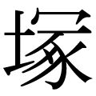

| 日本の総理学 (PHP新書) | |
| 中曽根 康弘 | |
| (2004) | |

日本の総理学
中曽根康弘
まえがき
最近、私は、戦前と今日の政治状況が奇妙に符合していることに危惧しています。
それは、一九三六（昭和十一）年の二・二六事件前後から大東亜戦争で敗戦を迎えるまでの間と、世界では東西冷戦が終結してから、日本ではバブルが崩壊してから後の十年あまりのことです。
この二つの時代では、日本政治が漂流していたといっていいでしょう。ともにこの間、総理大臣の十人近くが次から次へと登場しては消えていきました。政治リーダーが、国家の基本政策をないがしろにして、大衆の顔色ばかり気にするという、ポピュリズム政治がはびこっていたのです。
現代は、戦前のようにファシズムが台頭する心配はありませんが、大衆の熱狂というものは、いつ何時火を噴き、政治を巻き込むか知れません。政治というものは、かつて起こしたような過失を同じように犯す恐れをつねに内包しているのです。舵取りをするリーダーの資格や条件が厳しく問われるゆえんです。
二〇〇四年七月の参議院選挙では、自民党は、民主党に、たとえば比例票では四三〇万もの差をつけられ、敗北しました。その前年の十一月に行われた衆議院選挙に続いて比例票では連敗です。
敗因のひとつは、たぶん本人も責任を感じていることと思いますが、小泉（純一郎首相）君の年金問題における「人生いろいろ」発言に象徴される、誠実さに欠けた態度にありました。小泉君が三年前に「自民党をぶっ壊す」と言って登場してきたのは、すでにご承知のとおりです。今日、日本は大転換期にある。自民党も変わらなければならない――私も、そうした認識から彼を応援し、政権運営などについてたびたびアドバイスしてきました。
ところが、意地っ張りなのか、彼は、あまり耳を傾けようとはしませんでした。言うなれば、参議院選は、そうした増長にお灸をすえる票をして民主党を勝たせる結果になったのです。決して民主党の政策が良かったからではありません。反射的に民主党に票が集まっただけなのです。律儀で生真面目な性格の岡田（克也民主党代表）君は、このことを自覚する必要があるでしょう。
「政治家は大衆消費用の高度な演技者である」と喝破したのは、英国の政治学者ハロルド・ラスキです。リーダーたる者、政治をわかりやすく国民に伝えるためには、ある程度のパフォーマンスは必要です。しかし、それは確たる信念と哲学に裏打ちされたものでなければなりません。そのためには、ふだんから目測力と、結合力、そして説得力を磨いておかなければならないのです。
二十一世紀の日本をどうするのか――これからの政治リーダーは、この一点を見据えつつ、さまざまな課題に果敢に挑戦していかなければなりません。その考え方の中心には、日本人の自前の憲法をどうつくっていくか、日本人の骨格を形成する教育をどう見直していくかを置き、米国とは、ただ言いなりになるのではなく、ときには誘導するような関係をつくる、また、中国とは連携しながら東アジア外交を構築する、さらに内政では、少子高齢化にともなう財政改革などの課題に、積極的に取り組む必要があります。
私は、議員バッジを外しましたが、〝中曽根人生劇場・議会篇〟を終えたにすぎません。いや、それ以上に、いままた新しい歴史の舞台に立っているのだ、との認識を新たにしています。私のするべきことは、まだたくさんあります。とりわけインターネットや携帯電話で育ったＩＴ（情報技術）世代に、日本人として世界の中で生き抜いていくための、不可欠なアイデンティティや民族の同化力を教えなければなりません。それは、戦後政治のなまなましい現場を見聞きしてきた総理経験者として、今後の日本を背負っていく人材を育てていくことにつながります。
二〇〇四年七月十九日、総理後継者に私を推していただいた鈴木善幸元総理がお亡くなりになりました。このとき、十七年前（一九八七年八月七日）に総理として、私が岸信介元総理のご葬儀で読んだ弔辞の一節を思い起こしました。それは、あのときの自分自身に向けたメッセージでもあったのです。この言葉を、日本の総理たらんという政治家に、もう一度捧げたいと思います。
「大いなる志を遂げんとする政治家には、毀誉褒貶はつきものである。真の政治家は時代時代の宿命を負って行動し、時流におもねらず、国家百年の大計を自分自身の犠牲において断行し、その評価を後世の史家に託して消え去っていくのである」
二〇〇四（平成十六）年八月
中曽根康弘
日本の総理学 目次
第一章 総理の条件
さらば、同志レーガン
二〇〇四年六月五日、私にとって盟友であり、同志でもあった第四〇代米国大統領、ロナルド・レーガンさんが亡くなられました。忘れることのできない、いくつもの懐かしい思い出が走馬灯のように浮かびます。
「レーガン大統領は、自由主義世界の盟主として共産主義のソ連を崩壊させた。大局を踏まえて人を使うのが非常にうまく、将来出そうもない大統領だ。お互い一番尊敬し、信頼して提携できる同志だった。彼がいなくなり、何とも悲痛な気持ちだ」
訃報に接して、私はマスコミにこう語りました。話したいことは山ほどありましたが、その思いを最小限にとどめました。
あれは一九八三年一月、初めての日米首脳会談を前に、レーガンご夫妻がホワイトハウスで朝食会を開いてくれたときのことです。
「もうこれからはファーストネームで呼び合おう。これからはヤスと呼ぶよ」
私は、大統領にいきなり、こう切り出されたのです。驚くより、なんと嬉しかったことか。すかさず私は「じゃあ、私はロンと呼びましょう」と返しました。二人の、いわゆる「ロン・ヤス関係」が始まったのはそれからです。
以来、すっかり打ち解け合った仲になり、その後のトップ会談では、私のほうから、
「日米関係は世界の大きな運命を背負っている。あなたはピッチャーで、私がキャッチャー、だから、たまにはキャッチャーの言うことも聞いてほしい」
と、気軽に話しかけたものです。
二人の連携はとてもうまくいき、私がレーガンさんの窮地を救うこともありました。
その年の五月、米国で行われたウィリアムズバーグ・サミット（先進国首脳会議）でのことでした。ソ連の核ミサイルに対抗するにはどうすべきか、レーガンさんとミッテラン仏大統領の意見が対立したのです。そこで私が割って入りました。「日本には憲法九条があって、ここで核戦略問題に踏み込んだ発言をすると、日本に帰って袋だたきにあうかも知れないが......」と言ってから、「西側陣営の団結ぶりを見せるためにも、意見をまとめよう」と提案したのです。
私の発言が功を奏し、議長声明を出すことができました。レーガンさんからは「ヤス、サンキュー」とお礼を言われ、翌朝、宿舎にまでシュルツ国務長官が重ねてお礼に来られました。
レーガンさんは、「強い米国が世界を民主化に導く」という信念を持ち、一発の弾丸も撃たずに東西冷戦に勝利した大統領です。「悪の帝国」（evil empire）と名指ししたソ連と断固として対峙しながらも、チャンス到来と見るやゴルバチョフ・ソ連大統領と手を結び、デタント（緊張緩和）を成し遂げたのです。
内政では、モラルを大切にする「保守革命」を推進し、レーガノミックスといわれた大型減税と規制緩和政策によって、「小さな政府」をつくり上げました。いつもわかりやすい言葉で国民に語りかけ、「偉大な語り手」と親しまれた、指導者としてお手本になる政治家でした。
総理大臣としてホワイトハウスで米国大統領と会い、日本と世界の平和と安全、そして繁栄について話し合う――これが、私の総理就任以来の念願でした。そのときの大事なカウンターパート（交渉相手）がレーガンさんであったことを幸せに思っています。丁丁発止とやり合って悔いのない素晴らしい相手でした。
私は政府特使として、ワシントンで行われた国葬に参列しました。六月十一日昼（日本時間十二日未明）、小雨降るワシントン大聖堂には、フォード、カーター、クリントン氏ら歴代大統領をはじめ、私がかつてサミットでお会いしたサッチャー元英首相、ゴルバチョフ氏ら約二〇〇〇人の内外の弔問客が集い、レーガンさんと最後のお別れをしました。レーガンさんが生前に書き残したという式次第に沿って、厳かな中にも心温まる思いやりを感じさせる演出が随所にほどこされていて、それは大きな感銘を受けたものです。
棺を見送りながら、一九八三年十一月十一日、私の別荘、奥多摩・日の出山荘にレーガンご夫妻を招いたときのひとこまが脳裏に甦りました。
囲炉裏を囲んでの食事に大喜びのお二人でしたが、このとき、レーガンさんが懸案の日米金融問題を持ち出したのです。
「この協議はブッシュ（副大統領）に任せたい」と言う大統領に、私は「いや、これはシュルツさん（国務長官）と安倍君（晋太郎外相）の間で話し合うことになっているはずだ」と譲りませんでした。するとレーガンさんはすぐに携帯電話でどこかに電話した後、「ヤス、アイム・ロング」（Yasu, I'm wrong＝私が間違っていた）と言うのです。
超大国の大統領であっても、自分の誤りがわかったら、率直に認め、ただちに訂正する。私はそのとき、この人はこういうやり方で大統領になったのだ、素晴らしい人だなあ、と感心し、心から敬服したのです。
なぜ私は政治家を志したか
二〇〇四年五月二十七日、五十六年ぶりに議員バッジを外して、初めて迎えた八十六歳の誕生日でした。
前年の十月、私は、小泉君（首相）から思いがけなく政界引退を迫られました。これを「政治的テロだ」と言ったのは、本人の意思に従うと公言しながら、さらに「比例終身議員」の約束を反故にしたことに抗議するためでした。でもいまは、「生涯現役」を貫いていくことにいささかの迷いもありません。バッジをつけていようといまいと、「政治家・中曽根康弘」であることに変わりはないと思っています。
そんな私を見て、友人のひとりは「中曽根さんはモーニングを脱いで、カジュアルウェアに着替えただけ。昔と少しも変わらない」と評しました。
誕生日を迎えると、自分の歩いてきた道を振り返り、つい、感傷にふけることがあります。心に去来するものはいろいろありますが、やはり思い出すのは、何のために政治の道を選んだのか、という原点です。
なにもかも 人生劇場 秋陽没る
私のような戦場で戦った経験のある者にとって、大東亜戦争の敗北は、未曾有の屈辱でした。日本民族として敗戦のうえ、占領統治されたからです。よく「戦争に負けて良かった。おかげで日本は民主主義の国家になれたのだ」と言う人がいます。平和になったことは確かに良かったが、後からこじつけた理屈にすぎません。
「戦争の結果、敗戦のどん底に突き落とされ、日本の歴史と民族に対し、大きな屈辱を残したことは、なんといってもわれわれの時代の責任である。こうなったうえは、一日も早く国力を回復し、再び祖国を世界の一等国に立て直して、屈辱のばん回を計らねばならない」（『我ら大正っ子』徳間書店刊より）
焦土を目のあたりにしたとき、私はそんな思いでいっぱいでした。復員後、警視庁に勤務していましたが、決心して辞職（一九四六〈昭和二十一〉年十二月）。郷里の高崎へ帰り、衆院選（一九四七年四月）に立候補したのです。
私の心を突き動かしたのは、東京帝国大学の恩師である矢部貞治先生（政治学）の教えでした。曰く「日本再建の地下水たれ――中央で出世を夢みるときではない。故郷に帰り、故郷を固めてから中央で会おう」と、青年たちの帰郷運動を提唱されていたのです。
矢部先生には、私の『青年の理想』（一九四七年）という本の序文に「眉を上げて果敢に実践する逞しい好漢である」とのお誉めの言葉を寄せていただきましたが、先生は『協同体的衆民制の原理』という著書の中で、「民主主義」を「個人は全体のために、全体は個人のために」と説かれています。そして自由と平等という相反する立場の調和こそが政治の理想なのだ、と主張しておられました。まさに「中道政治」の理念です。
一九四七年四月、第二三回衆院選挙――戦後二回目の総選挙が私の初陣（民主党所属）でした。立候補は群馬三区、六万五四八四票を獲得してトップ当選を果たしました。
このとき二十八歳でしたから、最年少の青年代議士です。定員四人に一二人が立候補するという激戦区でしたが、得票数は全国で第五位に入る大量得票でした。同志とともに、共産党の赤旗に対抗して白いペンキを塗った自転車にまたがって街頭で声を嗄らし、材木屋の息子だったので、木材を運ぶトラックで遊説に明け暮れたのを昨日のことのように思い出します。
海軍主計中尉に任官す
かつて「タンゲン（短現）」という言葉がありました。正式には、「海軍主計短期現役補修学生」。戦前、各大学の卒業生が海軍経理学校を受験し、合格した者が四カ月の訓練を受けました。一九四一（昭和十六）年四月、東京帝国大学を出て内務省に入省した私は、一週間後に二年現役の海軍主計官に志願して、当時、東京・築地にあった海軍経理学校に入学し、同時に海軍主計中尉に任官しました。
海軍時代に学んだことは数多く、友人もたくさんできました。のちに、私が総理大臣を拝命し、初めての組閣という朝（一九八二年十一月二十六日）、自宅を出るとき、総理番記者諸君に、「風に向かって立つという心境です」と語ったのも、短現時代の体験から自然に出てきた一言でした。ところが、当時の若い記者諸君は、これを勘違いして「総理としてスタートに立つ」という意味に解釈したのです。
「風に向かって立つ」というのは、「荒天のときは風に向かえ」という操艦の要諦を説いた海軍独特の用語で、転じて、敢然と立ち向かう海軍士官の心意気をあらわしています。この言葉は、政治家になってから、片時も忘れたことがありません。
私はよく「風見鶏」と呼ばれました。じつはこの「風見鶏」というのも、海軍関係者の間では、好感を持って受け止められる言葉なのです。海軍の主戦場は海と空。そこでは大自然の変化にどのように対応するかが死活問題になります。海と空、風と波など、気象条件の変化には最大の気配りが必要です。風向きに応じた態勢をとり、いっきに勝機に転じなければなりません。海軍初級士官は「スマートで、気がきいて、几帳面、敗けじ魂、これぞ船乗り」と教えられていました。政治もまた、条件の変化に対し機敏かつ適切に、そして柔軟に対応すべきであり、風見鶏は、まさに海軍のモットーに通じるのです。
海軍将校時代、思い出すたびにいまでも冷や汗の出る経験があります。
一九四一（昭和十六）年十一月初めのことです。私は第一艦隊所属の巡洋艦「青葉」への乗り組みを命じられ、次いで設営隊主計長になっていました。このとき開戦準備の極秘命令が出ており、そのための準備資金七〇万円を私が預かることになったのです。二〇〇〇人の徴用工員の給料や飛行場建設の工事費に充てる資金で、いまのお金に換算すれば約五四億円という大金でした。
ところがこの資金の隠し場所が見当たりません。仕方ないので千両箱みたいな箱七つに入れ、それをベッド代わりにして寝たのです。もちろん箱の上に毛布を敷き、外から見えないように蚊帳まで吊って。それでも万一のことがあってはいけないので、剣付鉄砲を持つ水兵を立たせたものです。後にも先にもこれだけの大金と昼夜をともにした海軍士官は私ぐらいでしょう。
任官直後は、上官との間でも所信を遠慮せず主張しました。正直言って、私は日米の開戦に反対だったからです。一九四一年九月、「青葉」は土佐沖で連日連夜猛訓練をやりましたが、その間、青年士官室の室長の兵学校出身の大尉と論争し、「やって勝つ自信はあるのですか」、「日米交渉を打ち切らず継続することを貫くべきです」、「死ぬ覚悟はできています」――いろいろな言葉をぶつけてみましたが、いちど戦争へ向けて走り出した日本は、もう止めようがありませんでした。
一九四二年三月、南方戦線から転勤して台湾・高雄の施設部員、一九四四年十一月、主計大尉として海軍省軍務局勤務となり、一九四五年八月十五日、敗戦を迎えることになりますが、その少し前、私は香川・高松の海軍部で、広島・呉と高知に展開する特攻隊との連絡係をやっていました。忘れもしない八月六日のことです。瀬戸内海の西のほうに白い大きな煙が上がりました。「特殊爆弾だ」と言われていましたが、それが「ぴかどん」と呼ばれた原子爆弾であったのだと思います。そして九日には長崎に。あのときの印象はいまも強烈に残っています。
この戦争で、私は南太平洋などで多くの仲間、戦友たちを失いました。生きていれば、みんな日本国のために役立ったであろう人材ばかりです。
生き残った者がなすべきことは何なのか。以後、そう自問する日々が続きました。
世界に冠たる日本の歴史を汚してしまった。だからといってこのまま占領軍にいつまでも支配されてたまるものか。一日も早く日本の独立を回復しなければならない。マッカーサー司令部に強く立ち向かえる立場、それは国民代表たる国会議員になること。私が命がけで取り組める仕事、それは政治を除いてほかにはない――これが私の出した結論だったのです。私が二十七歳のときでした。
占領から自立へ
敗戦後、私は内務省に復帰、連合国軍総司令部（ＧＨＱ）との連絡官や、旧日本軍が保有していた軍需品処理の仕事をしていましたが、こんなことをしていていいのか、という思いはつのるばかり。ついに警視庁監察官の仕事を最後に、辞表を出しました。一九四六年十二月のことです。
政界へ打って出ようと決心したからですが、父の松五郎にはひどく怒られました。高文（高等文官試験、いまの一種国家公務員試験）にせっかく受かって内務省に入ったのに......、将来、知事だって夢ではないのに、というわけです。親不孝でしたが、占領政治からの一日も早い脱却をという使命感に燃える私を、もう父も家内も止めることはできませんでした。
その名は「青雲塾」――初当選した後の一九四八年、親父がくれた貸家につくった私塾です。これからも一緒に闘う仲間の青年たちを思想集団にする必要性を痛感したからです。命名の由来は、「青雲の志」であり、札幌農学校を開いたクラーク博士の「少年よ、大志を抱け」（Boys be ambitious）という気持ちが、発想の原点です。
この青雲塾の壁に、「先人の栄光を嗣ぎ、祖国を興す歴史の原動力になろう」との思いを込めて、わが郷土・群馬の大先輩である新島襄（同志社英学校を創立）、内村鑑三（キリスト者の思想家。英文で書かれた代表作に『代表的日本人』）、高山彦九郎（江戸中期の勤皇家）、関孝和（江戸期の和算の大家）らの肖像画を掲げました。
これとは別に私が筆をとり、「我が宣言」を掲げました。戦後日本の復興へ向けた決意表明です。
《洋々たる朝が我等を待っている。この暁の風雪を突破したら、やがて太陽は妖雲を払い、燦然たる慈光を万物に浴せるであろう。
明治の維新、昭和の革新、これを貫く一億民族の生命力、駸駸として進み、脈々として流れる民族の生命力は何物もこれを阻止することは出来ない。
今こそ我等は敗戦民族の悪夢を払い、旧日本と訣別し、日本人の為の新たなる日本と、全人類の為の正しき世界平和秩序とを打ち樹てるため、歴史の本流を開拓し、昭和革新の人柱となるを誓おう。（中略）
我等は今や風雪の嵐の中に第三憲政の黎明に立つ。嵐よ来たれ。我等の青雲の志は巨巌の如く動かず、嵐を鎮め太陽を迎えるであろう》
そして、「危険兵器の公正なる国際管理」、「列国の軍備縮小」、「世界恒久平和と国際民主主義の実現」、「新日本国国民憲法の創定」、「外国軍隊の完全撤退促進」、「領土其他失われた国権の回復」、「同胞愛社会の建設」、「教育の刷新」といった具体的な提言がこの後に続きます。
徳富蘇峰先生との出会い
一九五〇年ごろ、私は、その後の政治活動に非常に大きな影響を受けることになる方にお会いすることになります。戦前から著名な新聞人、思想家、文筆家であり、作家の徳冨蘆花の兄でもある徳富蘇峰先生です。雑誌『国民之友』、次いで『国民新聞』を創刊（一八九〇年）し、第一回の文化勲章（一九四三年）を受けられますが、三年後に返上しています。大日本言論報国会会長を務めるなど戦争を鼓吹したという理由で公職追放にあい（一九五二年解除）、このとき静岡の伊豆山に隠遁されていました。「晩晴草堂」と名付けられたお宅へ私は何度も足を運び、これからの日本をどうすべきか、直に教えを乞うたのです。
こうして私は、先生のさまざまな卓見に触れることになりますが、その後の政治家として生きるにあたって、大いに勇気づけられた箴言に、「大局さえ失わないなら大いに妥協しなさい」という教えがあります。言葉を変えれば、〝風見鶏のすすめ〟でしょうか。この言葉ほど私の人生観を左右したものはありません。以後は、妥協やまとめ役を重要な仕事と思うようになったのです。
米寿を過ぎ、白い総髪。いつも和服に袴をつけ、椅子に端坐して半眼を閉じながらお話しする姿は、さながら剣豪の原卜伝のようでした。
先生は、明治維新の立役者である西郷隆盛（号＝南洲）について、「彼ほど妥協の好きな男はいなかった。正月のモチのように、並べて焼いていると、すぐ隣とくっついて離れられなくなる」と語ったものです。そして、「政党は混んでいる汽車のようなものだ。座っていなければだめ。席を立てば他人がすぐ座ってしまう」とアドバイスしていただいたものです。
先生の卓抜した歴史観や物事の本質を見抜く洞察力にはいつも感服しましたが、いまでも鮮やかな印象として残っているのが、日本がとるべき国家戦略についてです。
「中国大陸に手を出すときはよほど慎重にやらねばならない。豊臣秀吉、大東亜戦争、すべて失敗の歴史だ。大やけどを避けるためには、日本は当分アメリカと手を結ぶべきだ。ただ、アメリカは知恵がないから、日本がいろいろと教えてやることが必要だね」
また、中国とソ連の将来の関係については、「毛沢東は、いまはソ連と仲良くやって、子分みたいになっているけれども、あれは必ずソ連に対抗して、独立した強い国になるよ」と予言されていましたが、まさに慧眼でした。事実、周知のように、言うとおりの展開になったのです。
マッカーサーへの「建白書」
私が国会議員になったとき、総理大臣は吉田茂さんでした。彼がＧＨＱ（連合国軍総司令部）寄りの姿勢をとるのが気にいらないので、国会質問ではよく突っかかりました。これには狙いがあって、吉田内閣はいうなればマッカーサー総司令部の下請けみたいなものだ、吉田さんを国会で攻撃すれば、マッカーサーがそれを知って自分のやっていることのどこがまずいのか理解するはずだ、と私は考えたからです。吉田さんに仮託して、いやでもＧＨＱ司令部が聞くように、意識的に吉田さんを猛烈に攻撃しました。
占領下におけるマッカーサー総司令官の権力は絶大で、戦争に協力した政治家、官僚、財界人などが次々に公職追放の憂き目にあっていた。ついこの間まで「日本の元首」として全国民の崇敬の対象だった天皇陛下でさえ、総司令官に会うためには皇居から自ら出向かなければならなかった。私はそんな権力者に、楯突いたのです。
一九五一年一月、日本の早期独立を要求するマッカーサー宛の「建白書」を英文で作成して提出しました。危険を承知で賭けに出たのです。
この前年、私は米国を訪れた際に、タフト、コナリー（外交委員長）両上院議員から「マッカーサーの占領政策をどう思うか」と聞かれました。私は本人のいない場であれこれ言うのは嫌いな質なので、後で文書にして送ります、と言って帰国しました。
種を明かせば、この質問の回答に合わせるように、マッカーサーへの建白書を認めたわけです。加えてもうひとりの、日本の政策に影響力のあるスミス上院議員にも、建白書を提出する前日に届くよう、同様の文書を航空便で送っていました。
はたしてこの〝保険〟が効いた。すでに上院議員がこの内容を読んでいる旨、ウィリアムズ民生局国会・政党担当課長に伝えると、「占領下の国民が建白などしてはならない。君たちにその権利もないし、こんなものは受け取れない」と頑なに受け取りを拒んでいた態度が一変したのです。
このときマッカーサーは、連合国軍総司令官としての実績と成功をバネに次の大統領選挙に出馬するつもりでいたのです。建白書には、「いかなる聖将といえども近代国民を五年以上にわたって占領することは不可能である」と率直に私の真情が吐露されていました。この建白書はいまもメリーランド州立大学に貴重な文献資料として保管されていますが、あのときマッカーサーはこの建白書を破り捨てようとした。でもそれは表紙に厚いボール紙を貼りつけてあって、折ってゴミ箱に投げ入れたけれど飛び出してしまったと、後で新聞記者が調べて記事にしました。
日本に健全なナショナリズムを
建白書には、「講和条約を通じて完全なる独立と国際的に対等な地位を与えること」をはじめ、「領土の帰属は人民投票で確定する」、「日本の政治・防衛方法については講和条約で制限せずに日本国民の自由意思に任せる」、「国連加盟までは集団安全保障体制を確立し日本の安全を保障する」、「独立後の日本に航空機および原子力の平和探究の製造保有を禁止しない」――など、その理由とともに具体的に提言しています。
マッカーサー総司令部は、軍国主義復活の芽を徹底してつぶそうとし、その中核を形成した過激な国家主義に対する警戒心を緩めませんでした。しかし、私は健全なナショナリズム、その基盤となる愛国心こそ戦後の復興に不可欠なものと考えていました。その思いを建白書に記したのです。
《Ⅲ、日本人は何を欲しているか
一、愛国心と理想主義について
日本に現在最も必要としているものは、理想主義によって貫かれた、正しい愛国心であります。それは朝鮮戦争の緊迫化からいうのではありません。自由な協同体の根底になければならぬものが占領軍に対する遠慮から欠如しているからであります。敗戦に際し戦前からの信仰が倒れ従来の愛国的行為が一切占領政策によって否定せられて以来、日本人は愛国心という言葉すら警戒するようになったのであります。
然し、正しい生活信条と自由な協同体の秩序を維持し、侵略から防禦するために、構成員が若干の犠牲を提供することは美徳であって、断じて罪悪ではありません。（中略）
今や、占領政策、否、ポツダム宣言に遡ってまでも、何が正しいか、What is right? を再検討再確認していただくべき段階とも思われます。
さて、何はともあれ、かくも旺盛なる民族独立への意欲に燃え上がった、赤色新興国に隣接する日本民族の在り方であります。
今や、私たちは、日本の全国民、特に青年に対して、心身を震わすような大きな自由を守る理想主義の怒濤を浴せなければなりません。そこから盛り上がる愛国心を結集しなければなりません。
一切は道徳的勇気から発します。道徳的勇気は自由な個人と、自由な協同体から発します。私たちが自由意思の回復を叫んで居りますのは、実にこの観点からであります。日本人の結束を固め、日本を強くするためには、どうしても占領を早く撤廃していただく以外にありません。（略）》
マッカーサー（Douglas MacArthur）元帥は、ウェストポイント陸軍士官学校を首席で卒業し、陸軍大将を経て極東軍司令官として太平洋戦争に参加した米軍人としてはエリート中のエリートです。フィリピン戦線で敗れたとき、人一倍プライドの高い元帥の発した「I shall return」（私は必ず戻って来る）は、のちにトルーマン大統領によって解任（一九五一年）されたときの一言「老兵は死なず、ただ消え去るのみ」（Old soldier, never die, Just fade out）とともに、世界中に知られました。
日本の占領統治から六年後、マ元帥は、米上院で証言（一九五一年五月）して日本人を〝十二歳の少年〟と評しています（上院証言録＝「朝日新聞」戦後五十年企画より）。
《日本人は、歴史は古いが、まだまだ教えを受けなければならない状態にある。現代文明の基準で測れば、彼らは、われわれの四十五歳に対して、十二歳の少年だろう。（中略）彼らは依然として柔軟で、新しい考えを受け入れられる起点に十分近いところにいた》
私は総理になってからも、こんなマッカーサーを評価する気持ちはありませんでした。大東亜戦争をどう思うかという国会における質問（一九八三年一月）に、「マッカーサーの東京裁判史観は排撃する。あれは勝ったものが負けたものを懲罰した裁判だ」と答えました。このときですら、日本は真の自立を達成できてはいないと思ったからです。
中曽根ネットワーク
心を許し合った間柄を指すときに使う言葉に、「肝胆相照らす」というのがあります。
テレビ朝日社長を務めた三浦甲子二君は、まさにそのひとりでした。彼がまだ朝日新聞の敏腕政治記者として鳴らしていたころ、私にこう言ったことがあります。
「天下（総理大臣）を狙うのなら、これから十年間は大臣などの役職に就くな。その間、同志を推薦し、全国を遊説して若い候補者をどんどん発掘しろ」
岸内閣が安保条約改定の大仕事を成し遂げて辞職した、昭和三十五（一九六〇）年のことです。それまで私の閣僚歴は、一九五九年六月、岸内閣の国務大臣、科学技術庁長官をやっただけでしたから、正直言って、そんな殺生な、と思いました。しかも一九六〇年十一月の衆院選で七回目の当選を果たし、政治家としてちょうど脂が乗ってきたころです。
しかし、私は三浦君の忠告に従いました。その真意が痛いほどわかっていたからです。それは、中曽根よ、自前の派閥をつくれ、という意味の激励だったのです。さらに、
「自分が大臣や党の役職に就くのではなく、そのポストを仲間に譲ってやれ。自分が出世しないで、人に譲れば、人はその恩義を感じてついてくるようになる。そうすることで中曽根支援のネットワークをつくるのだ」と。
真の友人ならではの言葉でした。一九六七年十一月、第一次佐藤改造内閣のときに運輸大臣として入閣するまでの七年間、私は、それを忠実に実行しました。
彼が私に教えてくれたのは、じつは「kill the time」、つまり「時間を殺す」ことの大切さだったのです。私は当時、河野一郎さんの派閥（春秋会）に所属していましたが、河野内閣ができるまでは地味に引っ込んで、〝悠遊〟でいこう、と覚悟して、憲法調査会の小委員長に就任。ロバート・ケネディ米司法長官を日本に招待したり（一九六二年二月）、南極視察（一九六二年十一月）に行ったり、芸術振興国会議員懇談会（芸術議員連盟）の会長や拓殖大学の総長（一九六七年九月）を引き受けたりと、幅広く多彩な活動を続けていました。仲間の稲葉修君（のちに法相）は「大樹の下に大樹は育たない。中曽根さんはしばらくお遊びだね」と言っていたが、もちろんこれらの経験を自分の財産にしていくとともに、党内外での仲間を集めるためでした。
一九六五年八月、河野一郎さんが亡くなり、その後、河野派は重政誠之代表幹事のもとで集団指導体制をとっていたが、一九六六年十二月、総裁選挙への対応、つまり佐藤栄作総理の再選を支持するかどうかをめぐって意見が対立し、派閥が分裂した。このとき再選反対の私や桜内義雄（のちに衆院議長）、山中貞則（のちに通産相など）君ら計二六人で結成したのが「新政同志会」です。のちに派閥名を「政策科学研究所」（政科研）と変えますが、私が会の代表になり、事実上の中曽根派の旗揚げということになりました。私は四十八歳、自民党では最年少の派閥リーダーでした。
同じ釜のメシを食った海軍時代の連中との集まり、「青年懇話会」は、生死をともにした仲間だけに強い絆で結ばれていました。月に一回の会合だが、敗戦後の食糧難で食べ物がない。そんな中、なんとかして手に入れたコッペパンや焼酎をみんなして持ち寄って、日本はどうすれば立ち直るかをテーマに、徹夜で議論し合ったものです。そんなとき五島昇君（東急社長など歴任）は〝食糧係〟としてよく働いてくれました。
中心メンバーは、海軍軍務局で机を並べていた赤沢璋一（通産省、のちに日本貿易振興会会長）、檜垣徳太郎（農林省、のちに農相）、沢木正男（外務省、のちに大使）、中川幸次（のちに日本銀行理事）、早川崇（旧内務省、のちに総務庁長官）、五島昇ら仲間たちでした。
マッカーサー総司令官の占領政策は問題が多すぎる、インフレ対策はなっていない、遺族や傷痍軍人の悲惨な状態を何とかしなければ、日本の独立を回復するにはいまの政党のままでいいのか、再建のために誰を総理大臣にすべきか――私が政界への転身を考えるきっかけのひとつになったのがこの会合です。
政治家としての私の相談役に四元義隆さんという人がいます。東大法学部の学生のときに井上日召が首謀する血盟団に参加、五・一五事件（一九三二年）では、吉田茂の岳父の牧野伸顕内大臣を襲撃し、八年間を刑務所で過ごしたという経歴の持ち主です。出獄後は近衛文麿首相の私設秘書をしたり、終戦工作に取り組んだりしていました。戦後は、吉田、池田、佐藤の三内閣の助言役を務め、私もその謦咳に接したひとりです。総理になってからは二人して座禅を組み、トップリーダーとしての心がけをアドバイスしていただきました。
総理時代には、私を囲む親密な〝応援団〟が心強い存在でした。たとえば、元陸軍参謀の瀬島龍三（元伊藤忠会長）さんには行政改革や韓国問題などで貴重な情報や意見をいただいたものです。なにより冷徹な分析が魅力でした。ジャーナリストでは渡辺恒雄（のちに読売新聞会長）、氏家斉一郎（のちに日本テレビ社長）、三浦甲子二（のちにテレビ朝日社長）、島桂次（のちにＮＨＫ会長）さんらと侃侃諤諤の議論を交わしました。大所高所に立ってものを言ってくれたので、私に迷いが生じたときには彼らの率直な意見が参考になりました。
また、学者では佐藤誠三郎（東大教授）、由井常彦（明治大教授）、村上泰亮（東大教授）、西部邁（東大教授）さんらがその都度、私の注文に応じてアドバイスをしてくれたのをありがたく思いました。
これらの方々は、場合によっては、私と政治的、社会的に心中するくらいの深い親交を結んでくれました。最高権力者というものは、権力が集中するだけに、ともすると裸の王様になることがある。そうした危険を未然に防いでくれるのが、心を許した仲間であり、ブレーンといわれる人たちです。三浦甲子二、渡辺恒雄の両君は、総裁選＝ポスト鈴木（善幸）が取り沙汰されたとき、目白の田中角栄さんの私邸へ乗り込んで、「この次はぜひ中曽根を総理にしてやってくれ」と頼み、頭を下げてくれたのです。
内閣の要は内閣官房長官
総理大臣の女房役といわれる内閣官房長官は、内閣の要となる重要なポストです。だから、歴代の総理は気心の知れた側近を起用するのが普通だった。しかし、私が内閣をつくったときは、あえて他派閥の、しかも田中角栄元総理の〝懐刀〟と呼ばれた後藤田正晴さんに就任をお願いしました。
後藤田さんは、旧内務省では私より二年先輩。警察庁長官を務めた後、田中内閣の内閣官房副長官として田中総理を支えてきた人です。当時、後藤田さんは、選挙制度調査会長をやっておられましたが、後藤田さんとは、私が鈴木（善幸）内閣の行政管理庁長官時代に毎月のようにお会いし、意見交換する間柄でした。
確か、鈴木総理が総裁選挙への立候補断念を発表（一九八三年十月十二日）する前でした。いつものように会食しながら話をしているとき、私のほうからこう持ちかけたのです。
「私は易に興味があるんですが、近く政界に大きな変化が起こる卦が出ています。その際は後藤田さん、ひとつ協力していただきたい。仮に、私が内閣をつくるとなると、行政改革が最優先課題にならざるを得ません。後藤田さんには、役人をびしっと押さえてほしい」
いまだから言えるが、この話をする直前に、私は鈴木総理から内密に引退の意向を聞いていたのです。私はこのとき、田中、鈴木両派の協力を得て総裁選挙に勝ち、さらに引き続き行政改革を内政の目玉にしたいと考えました。そこで官界ににらみのきく人材として、後藤田さんの官房長官起用を決めたのです。固辞する後藤田さんを田中元総理や二階堂（進・幹事長）さんに説得をお願いして、ようやく組閣当日に了承を取りつけました。
この人事のせいでマスコミは、中曽根内閣を「直角内閣」とか「田中曽根内閣」などと揶揄しましたが、私はいっこうに気になりませんでした。なぜなら、優秀な人材を大臣に起用して、国民のために精一杯働いてもらうことがもっとも大切なことだからです。こうと信念を持ったら断行する、それが総理大臣が最優先すべきことなのです。
政治というものは結果主義で、理想や目標が素晴らしくても結果が悪ければ落第ですし、組閣の評判が悪くても結果が良ければ誉められます。
異例といえば、総理大臣を補佐する秘書官の人事についても中曽根流を貫きました。それまでは、各役所のほうで入省年次を考慮しながら人選し、時の総理は黙ってそれを受け入れるのが慣例でした。しかし、秘書官はイコール首相補佐官なり――そう思っていた私は、優秀な人材を揃えることを第一義に、秘書官人事に特別に注文をつけたのです。
「将来の事務次官候補である、優秀かつ局長直前の人材を首相官邸に差し出すべし」
筆頭の総理大臣秘書官に、大蔵省（現・財務省）から二カ月前に近畿財務局長として大阪に赴任したばかりの小粥正巳君が呼び戻されたのは、それからほどなくのことでした。
通産、外務、警察の各省庁から出向してきた秘書官らを前にして話したことが私の日記に残っています。
《諸君は秘書官と同時に補佐官と心得る。私は前進型なので落ち度が多いから何なりとも注意、進言するように。総理と秘書官はいわば爆撃隊の搭乗員同士で、落ちる時は一緒だ。旧海軍にては連合艦隊司令長官は常に旗艦にあり。また長官旗を掲げる。総理官邸は中曽根連合艦隊の旗艦にあたる。よって自分はここに居を定める。私邸からは通わない》
国鉄分割民営化をめぐる攻防
私が総理大臣を務めた、いわゆる在任期間は一八〇六日。吉田茂、佐藤栄作の両総理に次いで戦後三番目の長さになる。この間、内政、外交全般にわたり「仕事師内閣」の名に恥じない、たくさんの業績を上げることができた。
なかでも一番、苦労し、それだけにやりがいのあったのは、国鉄（日本国有鉄道）の分割・民営化を軸とした三公社（国鉄、電信電話公社、専売公社）の民営化です。国鉄の背後には総評（日本労働組合総評議会）がいて、その力は強大で、分割・民営化などとても不可能と言われていた。もちろん、社会党や共産党がそれを支援していたからなおさらです。しかし、私は心魂を傾けて取り組みました。
のちに「中曽根行革」とも言われた「臨調行革」は、第二臨調（第二次臨時行政調査会）のトップに経団連（日本経営者団体連合会）名誉会長の土光敏夫さんに就いていただいたのが成功のカギでした。行財政改革は、世論の後押しがないとできないと考えていたからです。土光さんを中心に改革の風を世論に起こして、グライダーでその風に乗るという作戦です。
土光さんは、石川島播磨重工や東芝社長を務めた経営者ですが、太っ腹で、頑固で、寛厳よろしきを得た人物でした。なにより質素で飾らないところがあり、自宅ではご自分でメザシを焼かれるなど、贅沢とは無縁な方です。国民は、あの「メザシの土光さん」が言うのだから、この行財政改革は信用できると思ったに違いありません。
臨調の会長を引き受けるとき、土光さんは、「民間がこれだけ血を流しているんだから、国家も流さなければいけない。だから『増税なき財政再建』をやりなさい。増税すれば、必ず経費を無駄遣いして役所が膨張するだけだ。それから３Ｋ（国鉄、健保、コメ）をやりなさい。そして特殊法人も」と私に強調されました。
確かに二度にわたる石油危機を通じて民間はリストラを含む血の滲む努力をしていた。国家だけがいつまでも「親方日の丸」というわけにはいかない。国鉄改革は臨調答申の目玉だったのです。
私はまず、分割・民営化に抵抗する国鉄トップの首を断固として切りました。一九八五年六月、「やるもへちまもない。やるに決まっている」と運輸大臣の尻をたたき、仁杉巌・国鉄総裁と縄田国武副総裁を辞任させ、後継者に分割・民営推進論者の杉浦喬也・元運輸事務次官を据えました。この更迭人事が「中曽根は本気だ」とのシグナルと理解される。まさに〝天王山〟でした。
杉浦君に加え、国鉄再建監理委員会の亀井正夫委員長（元住友電工会長）、事務局長の林淳司君（のちに運輸次官）のトリオの存在がじつに効果的だった。また自民党では、三塚博君（のちに蔵相）が国鉄内部の改革派三人組（松田昌士、井出正敬、葛西敬之の三君、のちにＪＲ各社長）と連携し、分割・民営化のため汗をかいてくれたのも大きい。こうした人材配置の妙も手伝い、国鉄の六分割、民営化に成功したのです。つくづく、政治の極意は、最高指導者の決意にあり、と思う次第です。
首脳外交でわかる総理の資質
首脳外交は、ときに、国の命運を左右します。総理大臣の資質として大事なことは、各国首脳とどれだけ腹の割った付き合いができるかです。「ロン・ヤス関係」以外にも、私が文字通り、家族ぐるみで付き合うことで交流を深め、信頼関係を築き上げることができた要人のひとりに中国の胡邦総書記がいます。
一九八〇年春、北京で小平（のちに総書記）さんから「中曽根さんに会わせたい者が二人いる。次の時代を取り仕切っていくので、仲良くやってほしい」と紹介されたのが、胡邦さんと趙紫陽（のちに総書記）さんだった。
胡邦さんは、小平路線を受け継ぐ自由主義的な改革・開放主義者で、ことのほか日本を重要視していました。一九八三年十一月、初来日し、中国の政治家としては初めて国会で演説しました。
首脳会談で私は、従来までの日中外交三原則、つまり「平和友好、互恵平等、長期安定」に、「相互信頼」を加えて四原則にしたらどうかと提案しました。
「これからの日中間にはいろいろな問題が起こるだろうし、疑心暗鬼もあるだろう。しかし、互いに信じてその信頼に応えるよう、誠意を持って話し合えば問題はすべて克服できる」と言うと、すぐに賛成してくれたのです。
共産主義青年団出身の胡邦さんは、私が首脳会談で「青年の交流拡大」を持ちかけると大歓迎でした。また、本音で話し合える場として「日中友好二十一世紀委員会」を設立することでも合意し、翌年（一九八四年）九月、学者、財界人、元官僚ら多彩な顔ぶれで発足しました。
一方、公式の晩餐会とは別に、ご夫妻を公邸での内輪の食事会にお招きしたところ、とても喜んでくれました。翌年四月に私が訪中したときは、お返しに中南海にある私邸に呼んでくれ、鰻や栗きんとんなどをご馳走になりました。
じつは、一九八五年八月の靖国神社参拝を最後に、私は公式参拝をやめることにしました。その背景には、この胡邦さんの立場を慮る必要があったからです。
この年、商用で中国に行かれた新日鉄の稲山嘉寛会長に、私の靖国神社参拝をどう思うか、胡邦さんの立場を探ってもらったのです。はたして稲山さんが中国側の谷牧さん、萬里さんの知日派の要人から受けたメッセージは次のようなものでした。
「靖国神社参拝は中国人民の心を傷つける。ひいては中国の内政に大きな影響を与えます。ぜひとも中止するよう伝えてほしい......胡総書記といえどもこれについては何も言うことはできず、強行すれば彼は困った立場に立たされるでしょう」
私は、胡邦さんのような開明的で親日的な政治家を保守派の攻撃の標的にして失脚させてしまっては、世界と日本は甚大な損害を蒙る――そう判断したのです。
第二章 国家とは何か
私の体に流れる国家とは
七十歳代以上の人なら、みな同じ思いでいるでしょうが、私たちは戦争を経験しています。そしてその戦争に負け、焦土と化した祖国を目のあたりにして、一日も早い復興を心に誓ったのです。敗戦国として日本が受けた恥辱や汚辱にも耐えました。早く占領体制を脱却し、真に独立した新しい日本国をつくろうと決心したからです。その希望を胸に、私たちは懸命に汗を流してきました。
ある時代を経過したことで、いやがおうにも国家というものを意識して生きていかざるを得ない。私が、「私の体には国家がある」と、いつも胸を張って言うのはそういう意味なのです。
その点、いまの若い人たちは恵まれています。テレビや車があり、食べ物にも不自由することのない、満ち足りた時代に生まれてきました。生まれたときから銀のスプーンをくわえていると言ったら言いすぎでしょうか。彼らは、オリンピックやサッカーの国際試合などを観るとき、初めて日本という国家を意識するぐらいで、深刻に国家というものを考えることがありません。
私たちの国土に対する無限の愛着や畏れは、自然や、母親の愛、学校、学友たちとのコミュニティの中で育まれてきたものであるし、私たちが学んできた歴史や文化への思いとして込められています。でもこうした感覚は、じつはひとつの国という枠があるからこそ生まれるものです。枠があって初めて、文化が育まれ、世界への貢献もできる。どう言おうと私たちは、日本という運命共同体の中にいるのです。
思想家のルソーは、「人間には生まれながらにして基本的人権がある」という「天賦人権説」を唱えました。しかし、この思想も人権を守ってくれる国家があって初めて成り立つ概念です。
私たちは、一人一人が国家の構成員であり、国家の存在を抜きにして生きていくことはできないのです。国家の存在を抜きにして市民の幸福や世界の平和が成り立ち得るという議論がありますが、市民が市民として存在できるのは、国家があってのことであり、国家が市民を守るからこそ、幸福や平和が保障されるのです。
たとえば、警察がなかったら私たちは安心して眠ることができるでしょうか。子どもを無事に学校に通わせることができるでしょうか。事実、老人の保護、年金や医療、介護などの社会保障は、国家が按配してその面倒を見ているではありませんか。現実に、いまある国家を率直に見つめ、それらを肯定しつつ、そのうえでより良く改善していくことこそが大切なのです。
国家についての誤解
では、日本ではなぜ国家という概念が嫌われるのか。それは、戦後日本に跋扈したマルキシズムの影響が非常に大きいためです。体制に不満を持つ学生や若い人たちがこうした思想に影響される傾向がありました。
マルキシズムは、国家は労働者を搾取する装置にすぎないと定義し、国家は悪だからいずれ解体される、と主張してきました。戦争前や戦争中の過度の国家主義に対する反感、国家権力への反抗からもてはやされた思想です。反国家であることが民主的で、進歩的だというわけですが、国家を人工作為的なものと考える一面的な発想をするから、こうした誤解が生まれるのです。
世界の国は、日本のような自然的国家と、旧ソ連や中国のような共産主義体制をとる人工的国家の二つに分けられます。日本は、二千年もの長い歴史を経てできあがった国家です。日常の道徳律も私たちの生き方も、先祖代々受け継がれ、歴史と伝統の中で形成されてきました。あるイデオロギーのもとに人工的に、戦略的につくられた国家とは根本的に異なるのです。その意味で、人工的国家は権力による社会的構築物といえます。
アメリカもまた、ある意味において人工的国家に入ります。憲法にそれがきちんと明記されていますが、ピューリタン革命の理想を抱き、信仰の自由を求めてイギリスから新大陸に渡ってきた移民の人たちが、契約によってつくり上げたのがアメリカ合衆国なのです。
ただ、建国の基盤がイデオロギーや理想主義によってつくられていても、民族の個性や独自の文化が醸成されることで、自然的国家と変わらない性格が生まれてくることも知っておかねばなりません。アメリカや中国のように知的英知やイデオロギーによってつくられた国の政府は、より戦略的国家の性格を濃厚にすることがあるのです。
グローバリゼーションの時代にあって、日本が戦略性の欠如を速やかに是正する必要があるというのは、まさにこの点にあるのです。
グローバリゼーションは、国家の垣根が壊れ、そこからすきま風のように人、カネ、モノが流入してくることです。しかし、これを必要以上に恐れることはありません。少し風通しが良くなるということはあっても、すべてが変わるわけではないからです。
たとえば、中国の国家政策の基層には四千年の歴史の蓄積が厳として存在しています。同じように私たちの家族や友人、知人によるコミュニティは二十一世紀になってもなくならないし、権力による秩序も存続するでしょう。ただし道徳律や規範の大もとになった日本的なるものは、守り抜かなければなりません。なぜなら国際化の時代にあっても、私たちは日本人だからです。
私は、かつて右翼だとか、国家主義者だと言われたことがありました。ほかのことには目もくれず、日本という国家のためだけに政治をやってきた人間だからでしょう。確かに、私にとっての政治活動は国家が第一なのです。長い歴史と伝統に育まれたこの日本という国のために最後まで尽くして死んでいきたい、と思っています。
いまは「第三の維新」のとき
よく「第三の開国」という言葉が使われます。第一は徳川鎖国体制からの脱却、第二が敗戦後日本の国際社会への復帰と民主的改革、そして第三が今日の国際化、グローバリゼーションへの船出を指しますが、ほかに「第三の維新」という言葉もあります。評論家の松本健一さんが言い出したことですが、憲法を改正することができて初めて日本の維新ができるというのです。私も同じ考えです。
第一の維新とは言うまでもなく明治維新。江戸から明治に変わり、明治憲法（大日本帝国憲法）をつくって、近代国家の仲間入りを果たし、世界の五大強国のひとつに数えられました。近代国民国家の形成という青写真をもとに、薩長藩閥政府という強大な力を背景に、日本はそれを成し遂げました。
しかし、それもつかの間、日本は大東亜戦争に敗れます。そして今度はアメリカに占領され、昭和憲法（日本国憲法）がつくられました。しかし超法規的な力を持ったマッカーサー連合国軍総司令官が日本に押しつけたのは、主としてアメリカ的民主主義という青写真だったのです。これが第二の維新です。
その後、一九五五（昭和三十）年に自民、社会両党によるいわゆる五五年体制が成立、日本に自主独立の風潮が出てきたものの、今日、憲法改正の気運が盛り上がるまでには、それから五十年近くを要しました。
しかし機は熟しつつあります。いまこそ私たちは国家路線を明確にし、国家像を正しくつくり上げなければなりません。つまり「第三の維新」とは、私たちの自前の憲法をつくることにほかならないのです。
戦前、戦後の歴史を振り返ると、大正から昭和にかけてと、昭和から平成にかけての時代的状況はそっくりです。第一次大戦が終わった一九一八（大正七）年には株式・商品市場や土地の投機ブームといったバブルが始まったし、同じ年に成立した原（敬）内閣は政治改革と称して小選挙区制を導入しています。一方、一九一八年に米騒動が起き、一九二〇年を境に戦後恐慌が始まります。一九二三年には関東大震災が起きました。
昭和十年代に入るとベルサイユ体制からの脱却を目指したヒトラーのように、日本もファシズムに傾斜していく。私たちはこの間の昭和の初めから満州事変勃発までの時代に、経済の打撃がその国の将来にどれだけ深刻な影響を与えるか、身をもって体験したのです。いま、バブル後の時代にあって、こうした過去の過ちを繰り返さないためにも、目先のことにとらわれず、しっかりした中長期の展望を持って行動しなければならないことがおわかりでしょう。
世界を一望すれば明らかなように、すでに社会主義の幻想は崩壊し、自己責任に基づいて、人間の自由と尊厳を守る安定と秩序ある社会を志向するのが世界の潮流です。
とはいえ、これから生じる経済的混乱や社会的錯乱によっては極めて右翼的な民族主義、あるいはポピュリズム（大衆迎合主義）的な民衆に迎合する、ややもすると矯激な思想が飛び出さないとも限りません。それだけに、歴史を厳正に見据え、左右の全体主義と闘いながら、新保守自由主義の大道を堅持していく必要があるのです。言うなれば、窓をあけて新鮮な空気を入れる。私は国際化の時代の「第三の開国」をそう捉えています。
ジャーナリズムが犯す過ち
もうひとつ、これからはメディアの果たす役割に注目する必要があるでしょう。いま、テレビは政治に対して大きな影響を与えています。
昨今とりわけ気がかりなのは、小泉首相に代表される一言コメント、「ワンフレーズ・ポリティクス」の横行です。確かに、小泉人気の要素のひとつが一般受けする、テレビ的コメントです。彼はこれをうまく利用していますが、見方を変えると逆にジャーナリズムに弄ばれているという印象を受けます。やがて、深みや哲学が感じられない言葉だとマスコミにたたかれ、国民に飽きられ始め、しまいには国民が政治そのものに失望してしまうのではないだろうか、心配です。
一九三五（昭和十）年から一九四一（昭和十六）年にかけて、近衛（文麿）さんら総理大臣が七人も次から次に替わり、政治が漂流したことがあります。平成の十年間も同様です。竹下（登）君から小泉（純一郎）君まで十人の総理大臣が交替、時代は奇妙に符合しています。
そして、政治とジャーナリズムが緊張関係でなく、一種の持たれ合いの関係になっているところも似ています。このときジャーナリズムは主導権を握った軍部に擦り寄っていったのです。中国大陸から軍を引くか引かないか、アメリカとの関係をどう処理するのか、ソ連とヒトラーの関係をどうするか――という三つの問題に対し、あのとき内閣の腰は定まらず、政変を繰り返し、軍部の言いなりになって、ついに大東亜戦争に突入してしまった。ジャーナリズムはこのとき、どうしたか。「鬼畜米英」と国民を煽り立て、軍部の後押しをしてしまったのです。
メディアが第四の権力と言われて久しい。いまや政治を動かす力を持つようになった。それだけに、ポピュリズムに拍車をかけるような報道は厳に慎む謙虚さが欲しいと思っているのは私だけではないはずです。願わくは戦前の深刻な反省に立ち、自身が持つ影響力の強さを自覚し、つねに、大局に立った報道を心がけていただきたい。
二十一世紀初頭の大変化
日本が戦後の焼け野原から立ち直り、経済成長を成し遂げる原動力になったのは、戦争から祖国へ帰還してきた復員軍人たちでした。彼らは、政界、官界、財界、学界に戻り、なんとか日本を復興させようとの一念に燃え、魂を奮い立たせました。そして窮乏に耐えながら渾身の力を振りしぼって努力に努力を重ねてきたのです。
ところが、彼らの二世、三世はどうか。生まれたときから満ち足りた生活を送ってきたために、父や祖父の苦労をきれいさっぱり忘れ去ってしまっています。哲学的にも思想的にも、また気迫という点においても貧相なのは、そのせいです。とりわけ、国家や共同体の維持、発展に関して、必死の精神や魂、悲願が窺えない。私は、そうした気概をいかにしてつくり直していくかがいまの日本の喫緊の課題だと考えています。
そのためには、国家への忠誠心、言い換えればきちんとした愛国心が醸成されなければなりません。愛国心とは、決してイデオロギッシュなものではなく、自分たちが住んでいる地域、国、それを取り巻く大自然、さらには歴史と伝統に育まれた固有の文化に対する愛着を保守しようという純粋かつ自然な感情の発露なのです。
この国のかたちを考えるとき、私たちは自らの歴史にたどりつきます。日本がこれまでどういう道をたどってきたのか、世界の歴史の治乱興亡をたどってみて、日本の来歴を見定め、世界と調和する新しい世界観や人間観を構築する――そのためには創造力を発揮させなければなりません。
二十一世紀初頭は、大変化が予測されます。第一に、生命科学、先端科学、宇宙科学と、あらゆる領域にわたって新しい科学技術が創造され、その多様さとスピードは加速される。第二にＩＴ（情報技術）社会が進み、電子ボタンを押すことで投票が在宅のまま行えるようになるなど、あらゆることがコンピュータとインターネットによって処理されるようになる。
第三は、精密誘導兵器によってピンポイント攻撃が可能になったように、戦争の体系が転換する。二〇〇三年のイラク戦争はその象徴で、衛星、精密誘導兵器、中長距離ロケット、航空母艦、飛行機などが総合的に組み合わされた、新しいハイテク戦争の体系がつくられる。これは間違いなく世界政治に大きな影響を及ぼすはずです。二〇〇一年九月十一日の米国同時テロをきっかけに、一定の条件の下では先制攻撃に妥当性があるという「先制攻撃論」が登場しました。誰がその妥当性を決めるのかなどの問題は残りますが、二十世紀にはなかった理論です。
そして第四には、人類が個人と集団に分化し、中間的なものがなくなって、個人の力が大きくなっていく。携帯電話とインターネットを手放すことのない世代の出現は、非常に個性的な時代の現出を予測させる。いわゆる無党派の時代です。しかし、その反発として、民族的なものや共同体的なものへの結集力が強まってくることも予想されます。新しい国家像を構想するためには、以上の大変化を踏まえたプリンシプル（原理）とベイシック・アイデア（基本概念）をつくり上げる必要があるでしょう。
三島事件――そのとき私は
復員して海軍の軍服を脱いだとき私は、日本の歴史に汚点を残し、まことに申し訳ない、一日も早く独立を回復し、戦勝国の米英両国に追いつき追い越さなければならない――そう心に誓いました。
政治家になってからは、科学技術で米英両国に負けたことを反省し、遅れを少しでも取り返すために科学技術庁をつくり、原子力予算を組みました。さらに自主防衛力を回復して、できるだけ早く大部分の駐留米軍を本国へ帰し、基地を取り戻し、そのうえで新日米同盟条約を結び、米軍と協力する体系をつくり直す。そして最終的には憲法を改正して国の基本体系を整える。こうしたことに必死で取り組んできたのは、真に自立した国をつくるためだったのです。
私が防衛庁長官をしていた一九七〇年十一月二十五日、作家の三島由紀夫さんが、市谷の陸上自衛隊東部方面総監部で割腹自殺するという事件が起きました。私が三度目の閣僚を拝命したときですが、じつはあのとき私は、自主防衛を強化したいという目的があり、かつ安全保障の日米間のギリギリの線を知らなければ総理の資格はないと自覚して、佐藤総理に志願して防衛庁長官に就任したのです。
この事件が起きたとき、私は真っ先に戦前の二・二六事件を思い起こしました。当時の軍首脳部は、クーデターを起こした反乱軍部隊を義勇軍であるとみなして、一時、処分を逡巡します。それが結果としてその後の軍国主義を増幅させる一因になったという教訓です。
《三島君の行動は民主主義を破壊するもので、侍のやることではない。自衛隊の幹部、自衛官諸君は落ち着いて、事態を自分でよく考えて慎重に行動しなさい。かりそめにも蠢動するようなことがあってはなりません》
私がただちに出した防衛庁長官訓示です。当時、防衛大学長をしていた猪木正道さんにもとくにお願いして、自衛隊機関紙の『朝雲』に、「独断に基づいて自衛隊を特定の政治目的に利用しようとする考え方は、自衛隊を私兵化しようとするものに他ならない。その動機がいかに純粋なものであっても、またその行動が生命を賭けたものであっても、こうした破壊思想は断固として排除されなければならない」という一文を寄稿してもらいました。
このとき、右翼や一部の国民から「中曽根は無慈悲で、ひどい奴だ」とずいぶん批判されました。しかしあのとき私は、より良き国家を構想し、また平和な国家を預かる者として、あのような衝動的な行為には断じて惑わされてはいけない、と固く決心していたのです。
じつは三島君とは、事件の起きた年の二月に会っていて、そのとき彼が「政治家というのは結果責任で、動機や過程がどうであれ結果さえ良ければいいが、小説家というのは行為責任である。いざというときには腹を切るつもりであるし、それが自分としての行為責任だ」と言っていたので、その異様な感じが気になっていました。彼は彼なりに、国家や民族の将来を真剣に憂えていたのですが、私にはとうてい受け入れることのできない発想であり、行動でした。
歴史に耐え得る決断とは
近頃の故治家が、目先の、いわば臨床的な措置しか語っていないように思えるのは私だけでしょうか。みな、なりたての新米医者のようなことを言う政治家ばかりで、病理学を熟知した病院長が見当たらないのです。
日本社会も同じように臨床的です。深い歴史観や哲学に裏打ちされた、医学でいえば体系の上に立った病理学的な見方が欠落し、すべてが表面的、表層的、かつ瞬間タッチ型なのです。日本人の精神を貧困にしている一番の原因がまさにここにあります。
私には、国民のみなさんがいま乾燥しているように見えます。人間の「情」、あるいは歴史的な連続性への「憧れ」、さらには喜びや悲しみを大事にするような「心」、そうした潤いが感じられないのです。
それはなぜか。私は日本社会が物事を判断する価値基準を失ったことが原因だと思っています。今日、確かに頼るべき判断基準はありません。そうだとすれば、日本や世界の歴史をよく学び、歴史の中から「国家はこうあるべきだ」とか「社会はこうあるべきだ」、「人間はこうあるべきだ」といった原理・原則を私たち自身で獲得していく以外、方法はないのです。とりわけ一国の指導者は、自ら先達となるべく、勉強し、日本の柱となる思想を体得し、それを国民に示しながら政治を進めていく必要があります。国会での論戦も、まさにこうしたことをテーマに議論すべきなのです。
イラク戦争では、同じＧ８（主要国首脳会議）の中でも、アメリカを支持する英国や日本と、戦争に反対して連合軍に加わらなかったフランス、ドイツ、ロシアと対応が分かれました。短期的に見ると、アメリカの国際法上の瑕疵が指摘されるなどの問題はあったかも知れません。
しかし、私は、中長期の物差しで今回のイラク戦争を見れば、ブッシュ米大統領の決断は正しかったと思います。五年経ち、八年経てば、歴史的な評価がなされるでしょう。というのは、大量破壊兵器が発見されず、大義のない戦争だったと言われますが、この戦争はテロに対する戦いであり、暴虐な独裁政権を倒し、世界的テロの温床地域を清掃し、ひいてはアラブ世界に民主主義を広めるという目的意識を持った戦いだからです。この種の国際関係の大問題では、国際法とともに歴史的影響と効果、それに日本の国益も考慮すべきです。北朝鮮問題を考えると、日本は米国を失敗させるわけにはいきません。
二十一世紀はもはや大国同士の戦争はあり得ません。逆に、かたちの見えない組織を持つ存在――テロ組織が近代社会に挑んでくる危険性が大変高い。ニューヨークの九・一一テロ（二〇〇一年）はまさにその先発隊による犯行であり、まさに二十一世紀型の戦争でした。イラクのフセイン政権はそのテロ組織の温床であると疑われていたのです。
外交や安全保障の問題において、政治家が判断をくだす場合、主として国際法に照らして考えますが、大切なのは政治的判断です。それが政治家の仕事であり、国際法学者とは違うところです。その際、大事なことは、なによりも国民を説得する力、国民と結合する力を持たなければならない。こうした政治的判断を評価するには時間がかかる。長い物差しで判断せよというのは、歴史に耐え得る決断をという意味なのです。
占領政策からの脱却の歴史
日本の戦後政治の歴史は、占領政策からの脱却を目指してきた歴史と言えます。一九五五年十一月、自由党と日本民主党の保守合同により自由民主党が成立しますが、その大きな理由のひとつが、完全に独立した主権国家を目指すことでした。
私がマスコミから「国家主義者」だとか「右翼」だとか罵詈讒謗を浴びながらも、占領政策のシンボルである憲法と教育基本法の改正を一貫して訴えてきたのは、決して自主独立の火を消してはならないと考えたからです。しかし、それはあまりに長く、紆余曲折を経た歴史でした。
占領を経て、日本がまがりなりにも主権を回復してから、東西冷戦が終焉を迎える一九九一年まで、戦後の主だった総理大臣を見渡すと、思想、政策の面で大きく二つの系統に分かれることに気づくでしょう。ひとつは、吉田茂、池田勇人、佐藤栄作、田中角栄、福田赳夫氏らの人脈で、経済主義に立脚して日本を立て直そうとした流れです。もうひとつは、日本国家の背骨を守り主権を回復しようという統治主義に立つもので、この流れには鳩山一郎、岸信介氏がおり、私もこの流れに入ります。
吉田さんは、敗戦後の一国平和主義的な風潮の中にあって、経済第一の方針で復興に力をそそぐ一方、池田、佐藤氏らの官僚群を政界に引き入れ、政治家として育てました。これに対し、公職追放にあい、解除後政界に復帰したのが鳩山さんです。党人派と呼ばれた三木武吉、河野一郎氏といった、鳩山さんにつらなる戦前派の政治家らは、吉田さんたちとは政策的な立場を異にします。当時、〝青年将校〟といわれた私（改進党に所属）は、占領政策からできるだけ早く蟬脱するため、憲法改正や自主防衛をスローガンに掲げて政治活動をしていました。だから鳩山さんらとともに「反吉田」路線で動いていたのです。吉田さんは「抜き打ち解散」（一九五二年八月）や「バカヤロー解散」（一九五三年三月）をするなどして、私たち反吉田勢力に対抗しました。しかし、それは単なる権力闘争ではなく、戦後日本のビジョンと舵取りをめぐる政策上の闘いだったのです。
結局、ワンマンな党運営への反発もあって吉田さんは退陣を余儀なくされ（一九五四年十二月）、このあと鳩山内閣ができます。鳩山さんは党内に憲法調査会をつくり憲法改正へ向けて動き出す一方、外交では病身を押してソ連との国交回復に取り組みました。これには、日本が国連に加盟するのにソ連に反対させないようにするのと同時に、シベリアに抑留されている六万人の同胞を帰国させるという狙いがあったのです。当時は共産主義国のソ連と付き合うことは異端とされただけに、非常に勇気のいることだったと私は鳩山さんを評価しています。
一方、日米安保条約の改正に取り組んだのが岸さんでした。吉田さんが結んだ安保条約は、仮に米兵が日本で犯罪を犯しても裁判権がアメリカにあり、しかも期限がないというような隷属的な条約でした。さらに日本に内乱が起きるとアメリカ軍が出動するという、独立国としては屈辱的な条項があり、岸さんはこうした不平等な部分を直そうとしたのです。
米ソ冷戦時代の日本は、軍事面ではアメリカという大国の温もりに甘えながら、経済専心で敗戦の痛手から立ち直る努力をし、ついには高度経済成長を成し遂げ、結果として経済面ではアメリカと肩を並べるところまできました。これは、日本人の素晴らしい才能と熱意によるものであり、そうした路線を選択した政治家の見識は高く評価できます。
この間、岸さんは安保条約を改正し、佐藤さんは沖縄の本土返還を達成し、田中角栄さんは日中国交回復を、そして私は国鉄の分割・民営化を実現しました。各総理大臣は責任を持って戦後日本の改革を果たしてきたのです。
しかし、居心地の良い温室のような状況がずっと続くわけはありません。一九九一年に米ソ冷戦の体制が崩れ、世界が散乱の時代に入ったとき、ほかの国は一斉に自己のアイデンティティを探し始めました。日本は頼るべき方程式を失っていたのです。このとき日本もなんとか態勢を立て直すべきでした。しかし、各国が自立する努力を懸命に始めたとき、日本はバブルの崩壊に見舞われます。そしてその後の十年余はなすことなく、政治的にも経済的にも漂流してしまったのです。
憲法が体なら教育基本法は心
憲法と教育基本法が一対なのをご存知でしょうか。
両方とも軍国主義日本の解体を目指して、マッカーサー連合国軍総司令官の指示でつくられたからというだけではありません。日本国憲法が施行されたのが、一九四七（昭和二十二）年五月三日、それに先立ち三月三十一日に教育基本法が公布されています。一方、明治憲法（大日本帝国憲法）に基づいて帝国議会が開設され、第一回議会が開かれたのが一八九〇（明治二十三）年十一月二十九日、その一カ月前の十月三十日にやはり「教育ニ関スル勅語」（教育勅語）が発布されています。憲法と教育、二つがセットで公布されている点がよく似ています。
私は、国家の基本的なかたちをつくる憲法が、人間でいえば体にあたり、国家を支える国民の精神をかたちづくるのが教育基本法で、それは心にあたる、というふうに考えています。その意味で二つは「連理」、つまり一対なのです。
法律としては珍しいことですが、教育基本法には前文があります。
《われらは、さきに、日本国憲法を確定し、民主的で文化的な国家を建設して、世界の平和と人類の福祉に貢献しようとする決意を示した。この理想の実現は、根本において教育の力にまつべきものである。
われらは、個人の尊厳を重んじ、真理と平和を希求する人間の育成を期するとともに、普遍的にしてしかも個性ゆたかな文化の創造をめざす教育を普及徹底しなければならない。
ここに、日本国憲法の精神に則り、教育の目的を明示して、新しい日本の教育の基本を確立するため、この法律を制定する》
この教育基本法は、米国の調査団の意見を聞いたうえでつくられたため、まるで蒸留水のようで、日本特有の味がしないのはお気づきのとおりです。権利、個性、人格、自由、民主的といった言葉は豊富に出てきますが、肝心の義務や責任、あるいは日本の伝統や文化、歴史、国や公の考え方、道徳や家庭の重要性を踏まえた記述がまったく見られません。ブラジルやメキシコなどどこの国へ持っていっても十分に通用してしまいます。その意味では「無国籍」の憲法といってよいでしょう。
私がなによりも問題だと考えるのは、この法律に「公」という概念がすっぽり抜け落ちていることです。これでは、自己犠牲や利他、慈悲、抑制といった徳の心は育たないし、まして「国を愛する心」など育ちようがありません。戦争に負けてすでに半世紀余り、戦後の日本人が「自由」や「権利」ばかりを主張するようになったのは、マッカーサーのつくった憲法と教育基本法の〝成果〟といってよいでしょう。それと歩調を合わせるように、社会は慎みを失い、放埒に流されるままになっています。「民主」だけを唱えているうちに、政治、経済の世界には膿がたまり出し、「平和」を拝んでいるうちに、平和ボケと言われる自主防衛を忘れた日本になってしまいました。
その結果、日本人が長い歴史と伝統のもとで育んできた数々の美徳は完全に綻び、人は無国籍人と化し、社会は一様に空虚な実態をさらけ出すようになっています。
二十一世紀に日本の底力を発揮するためには、早急にこれらを取り戻すしかありません。どうしても憲法と教育基本法の改正が避けて通れないことがおわかりでしょう。
臨時教育制度審議会をつくった理由
教育基本法があえて「公」を無視しているのは、教育基本法が憲法の付随文書という性格を持っていたためです。
連合国軍総司令部（ＧＨＱ）は、軍国日本の解体という目的のため、世界的に普遍性のある抽象的な項目をたくさん盛り込みました。しかし、共同体社会の要素である民族、歴史、文化、伝統、家庭などを一切無視して、個人単位の権利に重きを置いた社会づくりに役立てようとした。日本の個性を意識的に排除したのです。いわばアメリカ的プラグマティズム（実用主義）を軸に、英国流の功利主義、フランス流の個人主義、これらが混淆して戦後日本の教育が構成されているのです。
教育勅語はこう書いています。
《爾臣民、父母ニ孝ニ兄弟ニ友ニ夫婦相和シ、朋友相信シ、恭倹己レヲ持シ、博愛衆ニ及ホシ、学ヲ修メ業ヲ習ヒ以テ智能ヲ啓発シ、徳器ヲ成就シ、進テ公益ヲ廣メ、世務ヲ開キ、常ニ国憲ヲ重シ国法ニ遵ヒ一旦緩急アレハ義勇公ニ奉シ以テ天壌無窮ノ皇運ヲ扶翼スヘシ》
私は、なにも戦前の明治国家に戻れ、と言っているのではありません。美辞麗句を並べ立てただけの教育基本法を変えて、日本という国の伝統や歴史、文化をきちんと考慮した内容を盛り込むようにすべきであると主張しているのです。
日本人の来歴を振り返ればわかるように、日本は一神教の国ではなく多神教の国であること、自然との共生を喜び、基層においては神道、表層においては仏教の影響が大きいこと、平等を尊び、家庭が社会の重要な単位となって国家の基礎を成している、国の構造では天皇制、文化的には侘、寂、もののあはれの様な独自の文化価値を捉え生活している――といった特徴を持っています。
教育とは、そういう伝統、文化を尊び、これを子孫に伝えながら、夢と理想を持ち、世界に貢献できる日本人をつくることなのです。世界の普遍性を教えるのはもちろん大切ですが、日本人の背骨にあたる個性を育むことを重視しなければなりません。
かつて私は、総理のときに教育改革に取り組んだことがあります。行財政改革とともにつくった「臨時教育制度審議会」（臨教審）がそれです。文部官僚や文教族議員は、中央教育審議会（中教審）があるのだから臨教審は必要ない、と反対しましたが、私は、内閣レベルの視野で広く考えないと教育改革はできない、と抵抗を押し切りました。
私は会長に、「いまの教育は、日本のアイデンティティを失ったものになっている。それではだめだ。臨教審をつくる以上は、日本文化を背景にした教育論と、国際化、高度情報化時代に対応した教育を打ち出さなければならない」と説明しました。ですから、第一委員会では哲学、思想の委員会とし、そこから出発するように要請したものです。だが時間が足りず、わずかに「共通一次テスト」を「新テスト」に変えるといった小刻みな改革の実現にとどまってしまいました。
根本の教育基本法改正にまで踏み込めず、中途半端なものに終わってしまったのはなぜか。いま、振り返ってみると、トップである臨教審会長に決断力、責任感、哲学と思想を兼ね備えた大物を据えられなかったこと、事務局の構成を文部省（当時、現・文部科学省）中心にしたため自民党文教族議員らの介入を許したこと、またもっとも大切なことですが、中枢部に教育に関する基本哲学が欠けていたことでした。
第三章 憲法改正試案
「歴史的俯瞰力」がなぜ必要か
♪嗚呼戦いに打破れ 敵の軍隊進駐す
平和民主の名の下に 占領憲法強制し
祖国の解体を計りたり 時は終戦六カ月
♪国を愛す真心を 自らたてて守るべき
自由と平和民主をば 我が憲法に刻むべき
原子時代に遅れざる 国の理想を刻まばや
これは、私が作詞した「憲法改正の歌」の一番と四番の歌詞です。一九五六（昭和三十一）年、いまの東京宝塚劇場で発表会を開き、歌手の安西愛子さん（のちに参議院議員）に歌ってもらいました。
その成立の経緯はさておいて、憲法には、国家の安全保障をはじめ、外交、政治、経済、福祉から、文化、教育のあり方まで、およそ日本国家と日本社会の基本的枠組みが規定されています。その意味で、憲法は、「国のかたち」、「国のすがた」、「国のこころ」であり、国家の骨格を成すものなのです。しかし、この戦後憲法も制定後すでに五十年余を経てみると、あいまいな点や疑問に思われる点が数多く出てきていることに気づきます。自衛隊の存在理由や第九条の交戦権の否定など、現実と遊離している部分がそれです。
国際情勢が大きく変化しているとき、このままでは、次の世代が大きな矛盾に悩むことになるのは明らかです。この際、変える必要があるのなら勇気を持って変えるべきだ、と国民が言うのはそうした理由からです。
もちろん憲法改正を主張する私たちでも、憲法の果たしてきた役割を率直に評価すれば、「象徴天皇制」、「民主主義」、「自由主義」、「国際協力」、「平和主義」といった基本原則は認めています。
しかし、憲法をよく読んでみると、そこに「国家」や「国民」という言葉、言い換えると、歴史と伝統の匂いが感じられないことに疑問を持つのです。歴史と伝統を持つ共同体である国家は厳然と存在しているのに、憲法は無国籍なのです。
憲法を考えるとき、私は歴史的な俯瞰力を持って検討する必要があると思っています。それはまず、かつての明治憲法（大日本帝国憲法）がどういう意義を持っていたのか、マッカーサー（連合国軍総司令官）のつくった昭和憲法（日本国憲法）はどういう歴史的使命を持っていたのか――について、それぞれしっかりした歴史観の中で分析をすることです。
そして、明治と昭和の憲法が五十年の歴史に耐えたことを踏まえ、これから五十年後の世界や日本がどうなるか、そのとき日本はどんな位置にあるかを俯瞰したうえで憲法を構想することにほかなりません。
二十一世紀の特徴は、個性化に象徴されるように、社会意識が加速度的に変化している点です。教育程度も以前とは比較にならないほど高くなっています。法学者ならこうした現実を無視した技術論を展開することができますが、政治家はそうはいきません。歴史と伝統を前提に、社会学的な構造に関心を払いつつ新しい憲法をつくらなければならないのです。
その意味では、明治、昭和の憲法は、歴史的意味を持って出現し、功と罪を背負いながら地平線に消えてゆきつつある、と言っていいでしょう。
明治憲法はなぜ世界でも著名か
明治憲法は、世界史上、著名な憲法のひとつに数えられます。日本の太古からの伝統と国民的信念とを、西欧の立憲民主主義体制に調和させた苦心の力作だからです。
幕末の黎明期、黒船の来航によって目を覚まされた日本は、欧米先進諸国に追いつこうと、富国強兵、殖産興業の道を驀進しました。そのとき基本的な国家体制として確立したのが、明治憲法体制です。この体制によって、日本は、明治、大正、昭和にかけて大発展を遂げます。短期間で列強の仲間入りをしたことで世界を驚かせたばかりか、アジア、アフリカの発展途上の国々に畏敬の念さえ持たれたのです。
しかし、大正末期から昭和にかけて、明治憲法は次に指摘するような大きな欠陥を露呈し始めます。
（一）憲法の背後にある天皇神権思想が、日本人の自由な思想と生活を圧迫し始めた。
（二）天皇大権に直属する官僚、軍部が、大権に便乗し、専横になり、国家をかさにきて民衆をないがしろにしだした。
（三）元老、重臣、貴族院、枢密院等が、政党政治の障害物として機能した。
（四）政界、官界、軍部、財界における派閥が、私利のため縦横に結合して、日本を動脈硬化に陥らせた。
幕末の黒船来航や外国軍艦への砲撃で始まった明治維新は、日本を国防国家として出発させることになりました。列強に伍する――それは歴史の必然でもあったのです。このため、明治政府がお手本として採用したのが当時、立憲君主政体で、軍事強国になりつつあったプロシア（ドイツ）の憲法です。そして日清、日露の戦役に勝利し、資本主義的にも成長して世界五大強国の仲間入りを果たすことになります。
しかし、もともと国防という最高目的を中心とした憲法と体制だったために、過激思想や行動に対し治安維持が強化され、民主主義は弾圧され、国民の生活は犠牲にされることになっていったのです。
こうして白色人種の強国に対抗する有色人種の偉大な〝火薬庫〟という存在になった日本は、とうとう大東亜戦争という自爆行為に突入していくことになります。その結果、国民は初めて敗戦の汚辱に打ち伏し、生活はどん底に突き落とされました。しかし、それは一方で、結果的にアジアにおける列強の帝国主義の牙城を瓦解させ、アジア各国の独立の気運を醸成させることにもなります。
五十年先を見通す憲法を
こうして日本の近代の歴史を俯瞰してみると、五十年単位で動いていることがわかります。
明治維新から約二十年後の一八八九（明治二十二）年に明治憲法が公布され、翌年、初の帝国議会が召集されます。明治維新の目指した近代国家がこのとき完成されたのだとすれば、それから数えて約五十年目が大東亜戦争です。ということは、大東亜戦争とは、言うなれば明治維新後の近代国家日本の五十年の総決算だったと言えます。
日露戦争に勝った日本は、その勢いで一九一五（大正四）年、大隈（重信）内閣のとき、中国に対華二十一箇条要求を突きつけるなど、方々に大きな敵をつくることになります。明治憲法が日本を興隆させたというまぎれもない功績は忘れてはなりませんが、満州事変以後、日本の意図は不明確になり、結果として、大東亜戦争という悲劇に突入するのです。
戦争に負け、占領された日本は、連合国軍総司令官マッカーサーの指示になる憲法をいただくことになります。いままでの日本に足りなかった自由主義、民主主義が補強される一方、軍国主義の復活につながるとして、歴史や伝統や文化を否定した憲法です。
占領体制の脱却を悲願に一九五五年十一月、自由民主党が結成されてから約五十年、九・一一テロの衝撃、北朝鮮拉致犯罪が現実のものとして実感される今日、国民の間に生活と歴史の共同体である祖国日本への意識が回復され、健全なナショナリズムが勃然として湧いてきたと感じるのは私だけではないでしょう。言い換えれば、日本人が憲法改正を自覚的に捉え出したのです。
政治は国民に対して、積極的かつ歴史的な夢を与えながら、前進しなければなりません。私たちが豁然と、日本人としての純粋な発想で憲法改正に取り組むとき、第三の維新がスタートするのです。そのためには、与野党の垣根を越え、国民の勇気を結集しなければなりません。
その環境づくり――薩長連合を実現させた坂本龍馬のような役割を誰が果たすのか。まさにいまは、幕末から明治維新にかけてと同じ時代状況である、ということを、とりわけ政治家は認識する必要があるでしょう。
自民党は、結党五十周年にあたる二〇〇五年十一月、独自の憲法改正案を、自民党憲法調査会（保岡興治会長）で発表します。これまでの論点を整理すると、改正案では「品格ある国家を目指す」ことを前提に、
（一）国際平和に積極的、能動的に貢献する国家であることを内外に宣言する。
（二）新しい権利（環境権、情報開示請求権、プライバシー権など）を加えると同時に、義務、責任や国の責務も位置づける。
（三）憲法裁判所や道州制など国のかたちの要素を検討する。
との方針を打ち出しています。
焦点の憲法第九条については、「自衛のための戦力の保持を明記する」ことが共通認識になっており、「個別的・集団的自衛権の行使」についても規定内容で支持する方向で検討が進められています。私は機会あるごとに意見を申し上げてきており、大筋では取り入れられつつあります。
現憲法の不備が国民に広く理解されてきた証拠でしょう、各マスコミの世論調査で明らかになったように、憲法改正については改正支持派が反対派を上回るようになりました。
経済界でも、日本経済団体連合会が「国の基本問題検討委員会」をつくり、自衛隊のあり方など憲法第九条に踏み込む議論を始めました。日本商工会議所も「憲法問題に関する懇談会」をつくり、十一月にも中間報告をまとめる予定です。野党の民主党も「創憲」の立場から独自案の取りまとめ作業に着手しており、与党・公明党も「加憲」を前提に独自案をまとめるなど、いよいよ憲法改正が政治の大きなテーマとして浮上してきました。
憲法論の前提は国家像と歴史観
では憲法改正論が、今日なぜこれほどまでに醸成されてきたのか。私は、国民意識が非常に個別化したことにそのカギがあると思います。現状には満足しない、上から言われたことにそのまま従うことを良しとしない、言うなれば独自性を回復しつつあるのではないか。つまり古い枠組みを打破して、新しい世界をつくろうという意思が極めて濃厚に表われてきたのです。
ところが、現在の憲法論議はどちらかというと、現状に固執し、技術的所見が多すぎ、時代の流れの先を読んでいません。この背景には、アカデミズムの世界で主導的立場にあった宮沢俊義教授ら東大法学部の左に偏った先生方の影響があります。その結果、多くの国民は、憲法改正は絶対不可であり、自衛隊は違憲であるという意識を植えつけられてきたのです。彼らは居心地の良い座布団を外したくなかったのでしょう。
たとえば、国会を一院制にするか、二院制のままでいいのか、あるいは、直接民主制を採用するか、いまの間接民主制を今後も維持していくのかという根本的なテーマこそ、じつは日本社会を変革する要素を内包しているのです。
憲法論は国家像、あるいは歴史の流れが前提になっていなければなりません。時代が変われば国のかたちを表わす憲法も当然影響を受けるのに、憲法の条章のみを俎上にのせて、法技術的な改正論を議論しているのです。
私は、自民党に憲法調査会ができて以来の生え抜きのメンバーです。もちろん憲法調査会には皆出席であり、党内の誰よりも熱心に取り組んできたと自負しています。憲法改正論者としては筋金入りなのです。ところが、憲法改正がいよいよ政治の視野に入り、千載一遇のチャンスを迎えているのに、私は議員バッジを外さなければならなくなりました。昨年（二〇〇三年）十月、総選挙直前に小泉君から引退を迫られたためです。しかし、私はこれまでどおり、憲法改正の行く末を見守っていくつもりです。
政治家の資質の第一は歴史観です。その点、鳩山先生（一郎元総理）は、非常に大きく長いスケールでものを見ていた政治家のひとりでした。敗戦後、吉田（茂元総理）さんの後に、総選挙で憲法改正と日ソ国交回復をスローガンに掲げました。
当時の日本は一国平和主義が大勢で、憲法改正を公約として打ち出すのは勇気のいることでした。日ソ国交回復も同様です。当時の日本は親米勢力が強く、異端の共産国ソ連を相手に交渉するというのは困難をともなうことでした。
しかし、シベリアに抑留された日本人六万人の帰国がかかっていたこともあって、鳩山さんは不退転の決意でこの交渉に臨んだのです。幸い国交は回復しましたが、懸案の北方四島の領土返還は今日もなお実現していません。当然、友好平和条約も未締結のままであり、ロシア（旧ソ連）と付き合うことがいかに困難であるかを如実に物語っています。
当時の私は、野党の改進党に所属し、芦田（均元総理）さんとともに憲法改正を訴えていました。しかし、総選挙の結果は、予想を覆して、鳩山さんと私たちが一八〇議席を獲得、一八〇議席あった吉田さんの自由党は一二〇議席に激減したのです。占領体制からの脱却は日本人の悲願であり、日ソ国交回復も歴史に残る勇気ある決断として国民が評価してくれた結果です。
首相公選制はいまの日本になじまない
首相公選制を熱心に提唱していた私は、一九五三（昭和二十八）年、米ハーバード大学の国際夏季ゼミナールに出席したとき、次のような演説をしました。
《日本の戦前および現在の政治状況からみると、政治執行権を安定させて強化しないと、必ず派閥政治に陥って小党に分裂し、悪くすると、ヒットラー出現直前の乱れたワイマール政治の二の舞になる。非常に短期間の内閣で政権が不安定、結局、独裁を誘発する危険がなきにしもあらず。そうしないためには首相公選が良い》
その後、一九五六（昭和三十一）年、自民党憲法調査会ができますが、その最終報告の中にも首相公選制を提唱しています。
首相公選制とは、言うまでもなく国民が直接投票で首相を選ぶもので、大統領制に通じています。ただ、民意は反映されるものの、人気投票におちいる危険性があることが弊害として挙げられます。これに対し、議院内閣制は、国民が選んだ議員が首相を決める間接投票です。
たとえば、イスラエルで首相公選をしましたが、投票制度が不適切だったのと、政党が複雑に分裂したため失敗しました。イスラエルの国会は一院制で、選挙は比例代表制ですが、内閣がうまく機能しないというので、一九九六年に首相公選制を採用しました。選挙では首相に一票、政党に一票と、計二票を有権者に与え、三三の政党が候補者を出し、一五の政党が国会議員を当選させました。この結果、それまで一二〇人の議員定数のうち四五～五〇人を占め、第一党の座を争ってきた「リクード」（統一の意味で、ヘルート党を中核にして一九七七年にできた右翼政党）と「労働党」（ロシア・東欧からの移民が中心につくった社会主義・シオニズム政党）の議員が激減してしまったのです。
イスラエルはもともと、宗教的な分裂、民族的な対立があるうえに、ロシア移民やアラブ人もいて、政党の数が多い国ですが、小党分裂がさらにひどくなり、首相内閣をつくるのに五十日もかけて各党の間で折衝しなければならないということになったのです。結局、この一人二票制の首相公選制を二回実施してみて、良い結果が得られず、二〇〇一年三月、国会で多数を制した政党または政党連合の代表が首相になる元の方法へ戻すことになったのです。
じつは、日本の総理大臣（首相）は、アメリカの大統領に負けないほどの権限を持っています。端的に言えば、首相は立法権、司法権に属さず、憲法上してはいけないと記されていること以外は何でもできるのです。ただし、日本の場合、首相になるためには、まず党で総裁公選を行い、総裁に当選しなければなりません。さらに議院内閣制においては、第一党の党首または連立による代表は国会で首班指名を受けなければなりません。
私の場合、一九八二（昭和五十七）年に自民党の総裁公選（予備選）を行い、党員・党友から五六万票を獲得して圧勝しました。この総裁公選で勝利できて信任を受けたからこそ、総裁＝首相としての正統性を得、その後の政権運営において、私が大統領的な指導力を発揮することができたのです。これがもし総裁公選を経ないで、いわゆる〝密室〟で決められたとすれば、あるいはこれが国民の直接投票だったら、指導力もまた異なったものになったでしょう。
日本語になっていない前文
憲法の前文が日本語になっていないというのはよく指摘されるところです。
《日本国民は、恒久の平和を念願し、人間相互の関係を支配する崇高な理想を深く自覚するのであつて、平和を愛する諸国民の公正と信義に信頼して、われらの安全と生存を保持しようと決意した。われらは、平和を維持し、専制と隷従、圧迫と偏狭を地上から永遠に除去しようと努めてゐる国際社会において、名誉ある地位を占めたいと思ふ。われらは、全世界の国民が、ひとしく恐怖と欠乏から免かれ、平和のうちに生存する権利を有することを確認する》
これを一読しただけでは書かれている意味がよくわかりません。非常に読みづらいのは、英語の関係代名詞や、挿入句のある英文をそのまま日本語に置き換えた翻訳調の欧文脈だからです。日本国憲法が占領軍に「乗っ取られている」雰囲気がよく伝わってきます。
《平和を愛する諸国民の公正と信義に信頼して》とありますが、現実の世界に住んでいる人々が「平和を愛する諸国民」ばかりでないことや、一方的に《諸国民の公正と信義に信頼して》いたら一国の安全がどうなるか、昨今の世界情勢に照らせば、十分予見可能です。
ところで、《国際社会において、名誉ある地位を占めたいと思ふ》とはどういう意味なのでしょうか。いたずらを見つかった子どもが親に怒られ、無理やり反省させられているような、締まりのない文章です。もういたずら（戦争）はしません、これからは真面目にやりますと言い、頭を垂れている感じ――評論家の福田恆存さんの言葉ですが、私もまったく同感です。
《われらの安全と生存を保持しようと決意した》というくだりがありますが、どう読んでも自らの力ではなく、諸国民の公正と信義を信頼するから、どうぞ保持させてください、というお願いにしか思えません。なんともいじましいではありませんか。
もちろん、「国民主権」「基本的人権の尊重」「平和主義」というのは新しい憲法にも必須の要件です。
しかし、それだけでは足りません。現在の私の思考ですが、「歴史と伝統と文化を尊重し、維持する」旨の一文を入れ、三番目に「国土、自然環境の保全」、四番目に「独立と安全の保障」、五番目に「教育、世界文化への貢献」、六番目に「国民としての責任と義務」、七番目に「憲法の遵守」、八番目に「大日本帝国憲法、日本国憲法の歴史的意義のうえに国民合意のもとにこれを制定する」等と明記すれば良いのでは、と考えています。
天皇は「象徴としての元首」に
元首といえば、普通は対外的に国家を代表する地位にある国家機関を指し、条約の締結や外交使節の任免、全権委任状・信任状の発授など、外交の権能をともなっています。明治憲法では、天皇が「国ノ元首」（第四条）であると明記され、統治権を総覽しました。日本では天皇が、歴史的、伝統的、権威的な統合力を持っているとされるからです。
これに対して、総理大臣は、政治的実務に関する機能的統合力を持っています。両者のそうした違いは歴然として存在するのです。
私は、天皇の地位を現憲法の「国民統合の象徴」から一歩踏み込んで、新しくつくる憲法では「天皇は象徴としての元首」と明記すべきであると検討しています。というのは、強い指導力のある政府をつくるのなら、天皇はしっかり元首としたほうがいいからです。天皇と総理大臣という二段階で国家が形成されるわけです。
戦前の天皇が、国民に対し、死地に赴くことを命じることができたのも、伝統的な権威を持ち、国民的な確信を得ているばかりでなく、大元帥として防衛の最高指揮権者だったからです。しかし、現憲法では、天皇は主権者・統治権者の地位から、国民統合の「象徴」に変わりました。
プロシア（当時のドイツ）憲法をまねた明治憲法では、天皇は、「陸海軍ヲ統帥ス」（第十一条）とする統帥権を持っていました。しかし、統帥権の独立を盾に軍人が力を持とうとしたため、内閣は軽んじられ、ついには大東亜戦争を引き起こすことになります。日本が敗戦の憂き目にあった原因のひとつがこの権力です。
そこで天皇は軍刀をはずされ、代わりに学者、研究者として生きられるため顕微鏡をお側に置かれました。それは非常に賢明な選択であったと思います。現憲法の第一条の「天皇の地位」と「国民主権」については変更する必要はありませんが、外国に対して日本を代表する元首であることは明記したらどうかと思っています。
マッカーサー連合国軍総司令部は新憲法をつくるとき、天皇の元首としての権威を国民にはっきり伝えるため、第七条に《内閣の助言と承認により、国民のために、左の国事に関する行為を行ふ》として、国会の召集や解散権など一〇項目を決めていますが、ここは、《天皇は内閣の助言と承認によって、国際平和や文化や学問のために貢献する》を入れて整理したら良いでしょう。
女帝問題は「皇室典範」にかかわることですが、第二条に《皇位は、世襲のものであつて、国会の議決した皇室典範の定めるところにより、これを継承する》とあり、当然、憲法調査会の議論の対象になります。過去の歴史によると、孝謙天皇など八人、一〇代の女性天皇がおられました。しかし、明治憲法以降は「男系の男子が皇位を継承する」とされたのです。国民世論の動向も見ながら、最終的には政治が判断しなければならない問題でしょう。
防衛軍を明記すべき
さて、戦後半世紀にわたって大議論を重ねてきた、憲法第二章――第九条はどうすべきなのか。
《日本国民は、正義と秩序を基調とする国際平和を誠実に希求し、国権の発動たる戦争と、武力による威嚇又は武力の行使は、国際紛争を解決する手段としては、永久にこれを放棄する》
この第九条第一項は、「不戦条約」にいう国家の政策の手段としての戦争放棄を宣言した条文ですから、私は変える必要はないと思っています。「不戦条約」とは、別名をケロッグ・ブリアン条約といい、一九二九年七月に発効した国際条約です。問題は、次に続く第二項です。
《前項の目的を達するため、陸海空軍その他の戦力は、これを保持しない。国の交戦権は、これを認めない》
とありますが、自衛隊は戦力なのか否かを考えると、明らかに実情にそぐいません。ちなみに自衛隊法第三条の第一項で《自衛隊は、わが国の平和と独立を守り、国の安全を保つため、直接侵略及び間接侵略に対しわが国を防衛することを主たる任務とし、必要に応じ、公共の秩序の維持に当るものとする》と、専守防衛を規定していますが、憲法との整合性についてははっきりしていないのです。集団的自衛権の行使を含めた自衛権の存在を前提に、防衛軍の保持を明確に謳うべきです。
そして、新たに第三項をつくり、《防衛軍は、平和のため、あるいは人権のための国連ないし多国籍軍の行為に貢献できる》との一文を加えます。そのためには、自衛隊法の「自衛隊の任務」について規定された第三条に、国際貢献の一項を追加する改正を行う必要があります。
「非常事態条項」「政党条項」を新設
ところで、どこの国の憲法にも、非常事態宣言による行政措置は明文化されているのですが、わが国の憲法には、非常事態に対する措置や危機管理の条文がありません。明治憲法では、第三一条に《戦時又ハ国家事変ノ場合ニ於テ天皇大権ノ施行ヲ妨クルコトナシ》として「非常大権」を盛り込んでいました。現憲法に明記されなかったのは、「非常事態はこちらで対処する」というマッカーサー総司令部の間接的な意思表示だったのです。
新たにつくる憲法では、非常事態における首相の権限を決め、事後には国会に報告し、承認を求めることを明記すべきです。
非常事態は何も戦争のときだけとは限りません。阪神大震災のような大災害も同じです。憲法上の規定があれば、総理大臣になるときの心構えもおのずと違ってくるものです。私が総理になったとき、内閣官房長官に後藤田正晴氏を任命したのは、警察庁長官としての蓄積から危機管理に強い点を評価したからでした。当時、私の頭には、南関東大地震が万一起きたらどうするか、という問題意識がつねにあったのです。
一九八六年、伊豆大島で大噴火が起きたとき、私は、閣議にはからず、自衛隊、海上保安庁、東京湾汽船など官民を問わず、揃うだけの艦船を動員、調達して、島民全員を一晩のうちに離島させました。まさに超法規的な措置でした。正確に言えば、内閣法違反、憲法違反だったかも知れません。しかし、あのときは大爆発が起こる可能性があり、会議などして時間をかけている余裕はなかったのです。
私が考える非常事態への対応策のチェック・ポイントは次の五つです。
（一）法制度に不備はないか。
（二）対応システムに欠如はないか。
（三）リーダーシップの完遂に欠如はないか。
（四）地方自治体との関係はしっかりしているか。
（五）予算の準備は万全か。
自民党、公明党、民主党の三党は、二〇〇四年五月、「非常事態基本法」をつくることで合意し、二〇〇五年の国会で成立を図ることにしています。
非常事態基本法の骨子によると、対象となる事態とは、外部からの武力攻撃、テロリストによる大規模な攻撃、大規模な自然災害などですが、短時間で飛来する弾道ミサイルなど、通常の指揮系統がマヒした事態には素早い対応が欠かせません。そこで、迅速かつ的確な意思決定を首相が行えるように、閣議の手続きを経ずに、自らの判断で自衛隊や他の行政機関などの指揮をとることになっています。
この法律は、憲法と、武力攻撃事態法など個別法の中間に位置づけられています。しかし、私は、過度的なものにすぎないと考えています。こうした超法規的な判断が必要になるような条項は、やはり国家の基本法である憲法の中できちんと明記すべきことなのです。
「国会」については、一院制か二院制かという議論があります。現行憲法の第四一条には《国会は、国権の最高機関であつて、国の唯一の立法機関である》と規定し、四二条で《国会は、衆議院及び参議院の両議院でこれを構成する》とあるだけです。つまり衆議院は予算案や首相指名権での議決が優先されるなど、参議院より優位に立っていますが、参議院については性格づけがなされていません。このため、参議院は衆議院と同じことを繰り返しているカーボンコピーにすぎない、なかには参議院は存在価値がなく、廃止すべきだ、と言う人もいます。
しかし私は、参議院にいま以上に個性や独自性を持たせ存続すべきだと考えています。本来、参議院に求められている衆議院への抑制、均衡、補充の役割を強化し、外交や条約などは衆議院と同等に、人事や司法的案件などを優先処理事項とし、衆議院とは違った性格を持たせるのです。英国の上院もこうした独自の役割を担っています。そうすれば国会は活性するはずです。
「内閣」については、いまのような間接民主制による議院内閣制でいくのか、それとも直接民主制を取り入れ、首相公選制にするのかという問題があります。
私が首相公選制を主張した理由は、国会議員の中から、第一党の党首を原則として首相に選ぶ議院内閣制の代議士制度に任せるより、都道府県知事と同じように、国民が直接に選挙で総理大臣を選ぶようにすれば、そこに指導力と責任性が生まれると考えたからです。だが、現在の国民世論の情勢を見ると、実行に移すにはまだ時間がかかる気がしています。しかし、いずれ遠くない将来にはまた出てくる重要課題であり、議論はしておきたいテーマです。
私は、英国の議院内閣制のように、党と内閣が一体となって進み、党の議決を経なくても内閣が法律案を国会に提出できる仕組みに変えることを検討したらどうかと考えています。選挙では、どちらの党首が総理大臣になるかを選ぶことになるので、民意が反映され、より直接民主制に近くなります。
「政党」については、政党助成法によって国民の税金から活動費が支出されている現実を考えると、基本法である憲法に政党条項を盛り込むべきでしょう。
「地方自治」について、憲法の第九二条に《地方公共団体の組織及び運営に関する事項は、地方自治の本旨に基づいて、法律でこれを定める》とありますが、この「地方自治の本旨」という文言は意味が不明です。そこで中央と地方の権限や予算の配分など、境界線を明確にし、自治体の財政権をある程度は認める必要があるでしょう。地方分権を強化するためには、地方が自立しなければならないからです。
弾力性のある憲法改正条項を
さて、「憲法改正条項」（第九六条）ですが、憲法改正へのハードルが極めて高く、もっと弾力性のある条項にすべきです。現在、改正発議の条件は、各議院の総議員の三分の二以上の賛成が必要で、さらに承認には国民投票または選挙の際の投票で、過半数の賛成が必要です。私は、憲法改正案が国会において過半数で通過したときは国民投票を必要とする。しかし、議員の三分の二以上の賛成があった場合は国民投票を行わない――と改めるよう提案しています。
このほか、現行憲法をつくったときにはなかった新しい概念が生まれつつあります。たとえば、環境保護、個人のプライバシー保護、国民の知る権利などで、これらも憲法に謳う必要があります。
それから、私学への助成などに公金を支出していますが、本来は憲法第八九条違反です。その意味でこの条文は死文化しており、直すべきものと考えています。
さらに、肝心なことですが、現憲法では「国民の義務」について、従来の「教育」（第二六条）、「勤労」（第二七条）、「納税」（第三〇条）の三つしか規定していません。新たに、「国を守る義務」や、「安寧秩序の維持」「良好な環境の維持」「緊急事態における協力」などを「国民の義務」として、追加して盛り込む必要があります。
第四章 安全保障の原則
一強多元社会が現出した
総理在任中、私はレーガン米大統領とは全部で一二回会談しましたが、二人ともホッケーとかフットボールのキャプテンみたいな性格なのか、最初から波長が合いました。お互い、あまり小さいことにこだわらないし、大統領はグレートコミュニケーターとしての要素を持ち合わせていて、大所高所に立ってものを言い合うことができました。
一九八三年一月、初めての首脳会談の前夜、ブッシュ副大統領（のちに大統領、いまの大統領の父親）が私たち夫婦を晩餐会に呼んでくれました。その席で私は通訳として連れていった娘（二女、美恵子）のことを話題にしたのです。私は、
「昔、中学生の娘をアメリカにホームステイさせたとき、いつの日か私が政府代表としてワシントンで米国の首脳陣に会うときに、娘が通訳かホステスの役目でも務めてくれればいいなあという願いを込めて送り出しました。政治家として幾山河を越えてきましたが、いまこうやって自分の願いがかなえられて、妻や娘とともに招かれてみなさんにこういう挨拶ができる。ここに来るまでの家内の苦労を思うと感慨無量です。娘がホームステイでお世話になった家族は、今ワシントンに来ており昨日は両家族が抱き合いました。日米両国もこの家族のように抱き合う関係にしたいと思います」
そう話した途端、涙がポロポロ出ました。それを聞いていたブッシュ副大統領やシュルツ国務長官、ワインバーガー国防長官らはみなハンカチで目をぬぐっていました。私の話がよほど印象的だったのか、後でシュルツ国務長官がレーガン夫妻に話したら、二人とも目をうるませていたといいます。
その結果、レーガン大統領との首脳会談に先立ち、大統領はホワイトハウスのプライベートゾーン・セクターで朝食会をしようと誘ってくれ、私は家内、娘とともにご馳走になりました。レーガン大統領が「ファーストネームで呼び合おう」と言い出したのはこのときです。お互いの国の間にある氷を溶かす大きな力になるのは、じつはそうした人間臭い温みなのです。
米ソの冷戦体制が崩壊してのち、アメリカはいまや超大国というより、世界の一強の存在になっています。アメリカがイラクに軍事介入したことについて、賛否両論がありましたが、時間的経過とともに世論もまた変化してきています。アメリカとしては、独裁的政権であり、かつテロの温床とみなしたフセイン政権を転覆させることが目的だったわけですが、私は、歴史的に見て、アメリカの行動はいずれ正当に評価されるという確信を持っています。
小泉首相がいち早くアメリカへの支援を決めたとき、私が直ちにこれを支持し、激励したのは、そうした確信とともに、世界的なテロ覆滅に消極的であったり、さらに北朝鮮問題に対するアメリカの影響力が減殺されては、日本の国益にならないという考えがあったからです。現にアメリカのイラク介入後、リビアが核兵器を放棄し、イランがエジプトとの対話を開始し、ＩＡＥＡ（国際原子力機関）の査察を受け入れました。北朝鮮が六カ国協議に応じたのも、アメリカの圧倒的な軍事力を見て、今度は自分の番だと警戒を強め、やむを得ないと判断した結果です。
では、今度のイラク戦争は歴史的にどういう意味を持つのか。それは、アメリカという軍事、経済、あるいは科学技術における超弩級の国家が出現して、あとの世界は多元的な国家群という構成になったことでしょう。かつてのローマ帝国時代の世界を思わせるような一強多元社会の現出です。
ただ、アメリカが超大国をかさに着て、傲岸な振る舞いに及ぶと、大失敗します。一八四八年、独立国家の相互関係を規定する国際法、ウェストファリア条約が締結されてからの状況を見ると、強大な国の指導者は、つねに歴史の法廷に立たされているのだという謙虚な感覚を持っていなければならないのです。
イラク戦争においては、日本と英国がアメリカを応援し、これに対して、フランス、ドイツ、ロシアが傍観する姿勢をとりました。これを見て私は、日本、英国の海洋国家群と、フランス、ドイツの大陸国家群との対立かな、と思いました。日本や英国はもちろん、アメリカも大きな島国であり、一種の海洋国家と考えると、これらの国は水平線の先を見る傾向があって、遠い地域との連関関係を重視するからです。英国が植民地帝国を築いた背景にはそういう要素がありました。その点、大陸のフランス、ドイツ、ロシアは、隣同士で喧嘩ばかりしていて、地平線を見るのが精一杯でした。
この指摘が当たっているかどうかは、もう少し歴史的経過を見なければわかりませんが、私たちがここで考えなければならない重要なことは、日本は、国連、Ｇ８サミット（主要国首脳会議）の一員であるということです。そこを考えると、海洋国家と大陸国家という観念を超えて、日本には、アメリカとフランス、ドイツとの間をとりなして、彼らが手を結ぶようにする大きな責任があるのです。アメリカがユニラテラリズム（単独行動主義）やグローバリズムのみで動いたら大失敗するでしょう。国連を上手に使うということは日本の大きな仕事のひとつです。
イラクの戦後統治は国連主導で
アメリカがイラク戦争に踏み切ったのは、フセイン政権に代わる新政権をつくることで、アラブの湾岸地帯に民主主義を普遍させ、展開させるという、アメリカの伝統的な理想あるいは野心を実行に移したにすぎません。
イラクの新しい国家は、世界の民主主義を取り入れたものにならざるを得ないし、またなっていくはずです。シリアやサウジアラビアが今後どう反応し、変化していくのか、多少の時間をかけてみる必要がありますが、これが成功すれば、イラク戦争がアラブ諸国の民主化の橋頭堡になり、湾岸地帯の将来の政治地図に相当な影響を及ぼすことになるでしょう。
アメリカのイラク参戦に対し、日本が諒解するうえで、私は二つの条件をつけ、賛成しました。ひとつは、できるだけ早くフランス、ドイツ、ロシアを仲間に入れた自治政府をつくることです。軍事的な面はアメリカが実行せざるを得ないが、行政、占領政策については最大限に譲歩して、フランス、ドイツ、ロシアや国連を表に立てることです。
なぜそれが賢明なのかというと、アメリカはじつは過去、植民地政策をあまり行ったことがなく、よく知らないのです。実際、イスラム教スンニ、シーア両派の対立や、クルド人、部族、近隣国の関係など、イラクは一筋縄ではいかない難しい問題を数多く抱えていて、アメリカが単純な考えでイラクの戦後統治をすると大失敗します。
もうひとつは、中東和平の「ロードマップ」（行程表）です。イスラエルとともに、パレスチナ独立国家を早くつくる必要があります。アメリカはイスラエルに圧迫を加えて、相当の譲歩をさせなければ、アラブ諸国が納得するようなかたちの解決はできません。アメリカが一生懸命になれば周囲のアラブの国はアメリカを支援します。ただ、イスラエルのシャロン政権が国内保守派の強い抵抗にあうなど、現実にはなかなかスムーズにいきそうにはありません。アメリカの「拡大中東構想」に対しては、欧州は冷ややかに見ており、曲折をたどるのはやむを得ないところでしょう。
今度のアメリカのイラク介入により、イラクの石油はアメリカが事実上支配することになります。ＯＰＥＣ（石油輸出国機構）との関係がどう展開していくかによりますが、アメリカは石油価格の上昇を好まず、アメリカの石油支配は、中東に九〇％近い石油を依存する日本にとっては悪くはないことなのです。自衛隊のイラク派遣についていえば、日本が発言権を持つという意味合いもあるのです。
私がまだ通産相時代の一九七三年四月、中東諸国を歴訪し、石油の安定的な確保を意識して、湾岸地域各国に相当のＯＤＡ（政府開発援助）を行っています。一九五七年六月、スエズ運河の国有化をしたナセル・エジプト大統領と会談したときも、アスワン・ハイ・ダムをつくると言うので、私は、「日本の協力でやりませんか」と勧め、研究もしたのですが、結局ソ連に負けてしまいました。アラブ友好議員連盟をつくったりして、そのころから湾岸地域に大きな関心を払っていました。
湾岸戦争のとき、私は、人質になってイラクに抑留されていた日本人七二人を解放するためにバグダッドへ乗り込み、フセイン大統領と直接交渉しました（一九九〇年十一月）。じつは大統領とは以前からの知り合いで、彼はすぐ会おう、と通訳を挟み、二人だけで会談しました。
私が席に座ると、彼はいきなりピストルのついた革ベルトを外して、ポーンと遠くへ投げたのです。「俺はお前の友人だ。敵意はない」というわけです。日本の武士が腰の刀を手の届かないところに置くのと同じような作法です。
二度ほど会談して人質を無事に連れ戻すことができました。フセイン大統領は強暴な独裁者ですが、それでもアラブ人にはアラブ人流の武士道の精神のようなものがあったのです。
求愛を恫喝で行う北朝鮮外交
「外務省をもっと使って、下準備を十分にやり、首相が最終決断するのが外交の筋道だ。急ぐと損をする。もう少し時間をかけて粘り、残りの十人についても金正日総書記の認識を改めさせることができればよかった」
二回目の日朝首脳会談（二〇〇四年五月二十二日）を行った後、小泉首相が首相経験者を首相官邸に招いて報告したとき、私がつけた注文です。日本人拉致被害者五人を二十四年ぶりに帰国させて（二〇〇二年九月十七日）以来の首脳会談でしたが、正式の外交ルートによらないで会談の段取りをつけるなど、小泉再訪朝のタイミング、やり方、内容には危うい面が見られました。
小泉君は、よほど「サプライズ（突然性）」が好きなのか、第一回目の首脳会談を抜き打ち的に行いました。そして結ばれたのが、以下の「日朝平壌宣言」です。
《両首脳は、日朝間の不幸な過去を清算し、懸案事項を解決し、実りある政治、経済、文化的関係を樹立することが双方の基本利益に合致するとともに、地域の平和と安定に大きく寄与するものとなると共通の認識を確認した。
日本側は、過去の植民地支配によって、朝鮮の人々に多大の損害と苦痛を与えたという歴史の事実を謙虚に受け止め、痛切な反省と心からのおわびの気持ちを表明した。国交正常化の後、双方が適切と考える期間にわたり、無償資金協力、低金利の長期借款供与および国際機関を通じた人道主義的支援等の経済協力を実施し、また、民間経済活動を支援する見地から国際協力銀行等による融資、信用供与等が実施されることが、この宣言の精神に合致するとの基本認識の下、国交正常化交渉において経済協力の具体的な規模と内容を誠実に協議することとした。
双方は、国際法を順守し、互いの安全を脅かす行動をとらないことを確認した。また、日本国民の生命と安全にかかわる懸案問題については、朝鮮民主主義人民共和国は、日常が不正常な関係にあるなかで生じたこのような遺憾な問題が、今後再び生じることがないよう適切な措置をとることを確認した。（中略）
双方は、朝鮮半島の核問題の包括的な解決のため、関連するすべての国際的合意を順守することを確認した。（中略）
朝鮮民主主義人民共和国側は、この宣言の精神に従い、ミサイル発射のモラトリアムを二〇〇三年以降もさらに延長していく意向を表明した》
会談の席上、金総書記は、拉致の事実を認めて日本側に謝罪をしましたが、宣言には国交正常化後のことばかり言及され、拉致の解決については具体的に一行も盛り込まれていません。
私は、大東亜戦争の反省から、日本が二度と外交の失敗をしないようにとの自戒を込めて、かねて「外交の四原則」というものを提唱してきました。それは、
（一）自分の力以上のことはするな。
（二）ギャンブリングで外交をするな。
（三）内政と外交を混同して利用し合ってはならない。
（四）世界の正統的潮流に乗るべし。
の四つです。この外交四原則に照らすと、小泉外交は、少々慎重さを欠いています。最初の訪朝は、田中（真紀子）外相更迭で内閣支持率が急降下していたときですし、二回目は年金問題での野党攻勢をかわし、参院選を有利に運びたいという、いずれも内政上の思惑と連動させている疑念が起こるからです。現に、拉致被害者家族の帰国は五人にとどまり、死亡や行方不明とされている一〇人の手がかりはつかめずじまいでした。
いまの北朝鮮は、昔の日本よりもっとひどい軍事国家であり、しかも追いつめられて窮地に陥っているのが実情です。言うなれば、お金も欲しいし愛情も欲しい。しかし、自ら胸襟は開こうとしない。脅かさなければ何もくれないと思っている。言うなれば恫喝しながら求愛をしているようなものです。そうしたやり方はすでに日本にもアメリカにも見抜かれています。
二〇〇二年十一月、私は先の外交四原則とは別に、北朝鮮外交の五原則をまとめました。
第一は、拉致、ミサイル問題、核開発、不審船などについては包括的解決をする、部分解決はない。
第二は、韓国との国交回復のとき以上の条件はつけない。
第三は、拉致問題、核問題を解決してから次へ進む。
第四に経済協力は最終段階で決着をつける。
第五に米国、韓国との一体的連帯のもとに国交正常化交渉を進める。
というものです。
さらに、もうひとつ、外相には重量感のある人物を充てるように、と進言しました。日ソ国交回復のときの鳩山一郎首相と重光葵外相、日米安保条約改定の岸信介と藤山愛一郎、日韓基本条約の佐藤栄作と椎名悦三郎、日中国交回復の田中角栄と大平正芳、いずれも重量級の首相と外相の組み合わせがその外交成果を雄弁に物語っています。
こうした外交の重大案件については、自民党内の説得など政治力学が大きくかかわってくる。ときに首相の代理が務まるような大物政治家が外相に起用されたのはそのためです。
全面解決なくして国交回復なし
米朝関係における北朝鮮の狙いは、最終的には、クリントン民主党政権のときにアメリカとの間で合意した一九九四年十月の枠組み、つまり核兵器開発を凍結する見返りに平和利用の原子炉（軽水炉）をつくる、さらに年間五〇万トンの原油を供給してもらう――というものです。
しかし、ブッシュ共和党政権は、民主党政権とは異なり、核兵器の根絶を大前提に、断固譲る気はありません。「検証可能で、不可逆的な措置」とはそういうことなのです。六カ国協議の場で、北朝鮮はいまも核凍結なら応じるが、核の平和利用は別、などと譲歩を求めていますが、アメリカは徹底して拒否しており、全面解決までにはなお時間がかかると、私は見ています。
北朝鮮の国家体制は、昭和十二、十三（一九三七～三八）年ごろの日本に似ています。当時の日本は、軍部が「統帥権の独立」の美名のもとに政治を壟断していました。現在の北朝鮮は、あるいはそれ以上の力を軍部が持っていて、金正日総書記がそれを統帥しているのかも知れません。先軍政治と言われています。ですから、政治家の判断が入る余地は非常に少ないのではないでしょうか。そう考えると、今後とも北朝鮮との外交交渉は、かなりの時間とタクティクス（駆け引き、戦術）が必要になると思われます。
私は、国家主権を侵害した拉致問題と核・ミサイル問題の全面的な解決なくして北朝鮮との国交回復を実現させてはならないと考えています。
しかし、日朝平壌宣言後も、北朝鮮は、核施設の再稼動宣言（二〇〇二年十二月）、核拡散防止条約（ＮＰＴ）の即時脱退宣言（二〇〇三年一月）、地対艦ミサイル発射（二〇〇三年二月）など、宣言を無視した行為を平気で行っています。ブッシュ大統領が、北朝鮮を「ならず者国家」と命名した気持ちがよくわかります。
いま、六カ国協議の枠組みで交渉が続いていますが、これとは別に、日本が独自に北朝鮮に対し経済制裁を発動できるようにする「改正外国為替・外国貿易法」と「特定船舶入港禁止法」を二〇〇四年の国会で成立させたことは、むしろ遅すぎたくらいで、賢明な措置であると言えます。北朝鮮の脅迫的な瀬戸際外交に対しては、毅然とした態度で臨むのは言うまでもありません。
いまの中国は昭和三十九年の日本
今日、中国の成長ぶりには目を見張るものがあります。いまのような八％成長を続けていけば、二〇二〇年には日本に追いつくのではないかという試算があるほどです。そして競争にもまれた中小企業が大企業に育っていけば、役人らの腐敗を許さず、共産主義政権が社会民主主義的に変化していく可能性も否定できません。
ＷＴＯ（世界貿易機関）に加盟した中国は、二〇〇六年に完全にマーケットを開放しなければなりません。二〇〇八年には北京オリンピック、二〇一〇年には上海で万国博覧会を開催することになっています。いまの中国は、日本が東京オリンピックを開催し、新幹線をつくった池田（勇人）内閣の昭和三十八、九年（一九六三～四年）のころと同じような状況だと考えてよいでしょう。その点ではどうも実力以上に過大評価されているような気がします。
しかし一方、中国は東南アジアに対して、大変積極的な善隣友好外交を行っていて、これについては日本が遅れているのが心配です。たとえば、ＡＳＥＡＮ（東南アジア諸国連合）から友好条約の締結を求められ、中国はすぐに締結しましたが、日本が締結したのは八カ月遅れの二〇〇三年十二月のことです。
また、条約締結国の間で関税を撤廃するＦＴＡ（自由貿易協定）においても、中国は大枠の枠組みをつくって、農業問題などについては相手国の熱帯産品を先に無税で輸入しています。
北朝鮮問題を軸とした六カ国協議で中核的な役割を担っているのも中国です。他方、前述するように積極性を持って自由主義国であるＡＳＥＡＮに出てきているのを考え合わせると、胡錦濤政権はアジアの北と南でかなり包括的、積極的な柔軟政策をとろうとしていることがわかります。それに比べて、東アジア外交全般において、日本は積極性に乏しいと言わざるを得ません。
また、中国は、中央アジア四カ国とロシアで構成する「上海協力機構」（ＳＣＯ）をつくるなど中央アジア各国との協力関係も強化させています。これは、石油、天然ガスの資源調達と、イスラム原理主義勢力への対処など、安全保障上の戦略を考えてのものとみられます。世界第二位の石油消費大国となっている中国の現実がありますが、先を展望して手を打っていく外交手腕はやはり無視できません。
長期かつ遠大に鳥瞰すると、日本と中国の関係は、国民性ではかなり違っていますが、英国とヨーロッパ大陸の関係に似ています。中国の約一〇億人を占める漢民族は、寛厳おのずからうまく持しながら、長期的な計画で物事を進めていきます。先の戦争で中国の八路軍は日本軍と戦っても負けませんでした。そして、ついには介石の国民党を台湾へ追いやります。その基本になったのは毛沢東の遊撃戦術、つまり軍規を厳しくして民衆の支持を得るやり方です。たとえば、兵士は民家へ入るな、軒下に寝ろ、敵が強かったら突撃するな、相手が弱いときに一挙に追撃しろ――この戦術が八路軍の強さのもとでした。中国には、四千年の歴史に培われた策略、戦略、機略に満ちた兵法があるのです。
台湾外交の五つの原則
さて、中国が発展しているからといって、台湾の存在は無視できません。中国と台湾の関係がどうなっていくかは、日本の将来にとって極めて大切なことなのです。中台が平和裏に円満な解決を図るためには、どうすればよいか。私はこれについて、五つの原則を提唱しています。
第一は、日本やアメリカが、中国との間で締結した友好平和条約や共同宣言、上海コミュニケといった条約や宣言を厳守すること。つまり、中国が「台湾は不可分の領土である」と主張していることを理解し、認識し、尊重するということです。方向は是認するが、推移を見守る、つまり平和的統一を希望し、軍事統一には否定的であるということを示唆するのです。
第二は、中国は平和統一に徹すべし、です。台湾の陳水扁政権の独立志向を牽制するために、中国はいざとなれば武力統一も辞さないという姿勢をとりますが、現代世界において、脅しや恐怖心を与えることで統一を成し遂げるのは不可能です。台湾の人々の人心を収攬せずに統一などはできません。
第三に、台湾は、独立や国連加入といった北京政府を刺激し、挑発する態度をとらないこと。
第四は、両岸政治を回復させ、双方が誠意を持って継続的な関係を持つ。
第五は、通商、通航、通信の「三通政策」を承認し、両岸で具体化交渉のうえ、実行すること。
こうした五原則が意味するのは、もし中国が台湾を攻撃するようなことになれば、米国に台湾を援助する法律（台湾関係法）があり、米国が拱手傍観するはずはないということを意味します。時間が神様と考えて、忍耐強い交渉によって現状を維持しながら継続していくしかありません。結論すれば、時間をかけて和解するかたちで解決にもっていくのがもっとも賢明なやり方なのです。
東アジア経済共同体を創設せよ
世界の文明の中心地は、ギリシア、ローマの地中海から二十世紀は大西洋に移り、そして二十一世紀には太平洋へと移るのが歴史的必然であり、二十一世紀はアジアの時代になると考えています。さらに日本をはじめアジアの各国がお互いに緊密な連携をとりながら太平洋に大きく羽ばたくような態勢ができれば、とも思っています。
そこで大切になるのが、中国との連携です。たとえば、ＡＳＥＡＮとの関係についていえば、中国とは競合するのではなく、よく話し合って、お互いに理解し合いながら、「東アジア経済共同体」の創設に向けて努力すべきだと私は以前から提唱しています。なぜなら、国連憲章にいまだに残っている日本の敵国条項を廃止させ、あるいは日本が安全保障理事会の常任理事国入りするためには、どうしても中国の賛成が必要であり、その後もアジアにおいて中国と連携していくことに大きな意味があるからです。
このため、私は、以前から日本、中国、韓国の三首脳によるトップ会談を定期的に開くよう提案してきました。別の会合で一緒になったのでついでに会談するというのではなく、このトップ会談を制度的なものにするのです。春と秋に定期会合をそれぞれの国で交互に開催し、会合を積み重ねていくことでトップ同士の間に友情が湧いてくれば、それがアジア外交を進めるうえでの非常に重要な要件になってくるはずです。その際、できれば家族ぐるみの付き合いを強く勧めたい。
二〇〇三年十月、インドネシアのバリ島で初めて日中韓三国首脳会談が開かれました。その後、三国による「外相三者委員会」の第一回会合が二〇〇四年六月、中国の青島で開かれるなど、私の提案が実り、軌道に乗りつつあるのは嬉しいことです。これをきっかけに、トップ会談の定期化に踏み切るべきではないかと思います。
もし、東アジア経済共同体ができて、経済的交流や相互依存関係が深まっていくようになれば、武力紛争が起こる余地はなくなるでしょう。現に、台湾と中国の間では経済協力関係が相当深くなっていて、双方の敵対意識が薄れるなど、少しずつ変質してきています。つまり、東アジア経済共同体ができることは、アジアの安全保障体制を築くうえでも非常に重要な要素になるのです。
北朝鮮問題をめぐり、いま、六カ国協議を続けていますが、北朝鮮問題が片づいたとしても、おそらくこの枠組み（日本、米国、中国、韓国、ロシア、北朝鮮で構成）はそのまま存続していくと私は見ています。将来、北東アジアの政治を含む主要な国際問題は、この六カ国協議の場で相談することになるのではないでしょうか。その意味で、アジアにおいて、六カ国協議に東アジア経済共同体、そして日米安保条約などを加えた重層的、複合的な安全保障体系が構築されることになります。
東アジア経済共同体構想については、かつてマレーシアのマハティール首相が似たような提案（東アジア経済協議体＝ＥＡＥＣ）をしました。このときはアメリカが強く反対したため、日本は賛成できませんでした。アメリカは、これが地域ブロック化して排他的なものになるのではないか、と警戒したのです。
しかし、事情は、いますっかり変化しています。各国が民族主義に目覚め、地域の善隣友好や地域連合体を重視するリージョナリズム（地域主義）の時代になってきたからです。現にアメリカはＮＡＦＴＡ（北米自由貿易協定）をつくり、ヨーロッパはＥＵ（欧州連合）をつくり上げました。世界中でリージョナリズムが正当性を持ち、是認されつつあり、東アジアでも同じような地域機構を持つことは合理性があるのです。
ブロック化して閉鎖的になる恐れはないか、との疑問に対しては、東アジア経済共同体の中にＩＭＦ（国際通貨基金）や世界銀行、ＥＵ、ＮＡＦＴＡの代表もオブザーバーないし準会員として参加させることで答えればよいのです。
この東アジア経済共同体を、さらに、日中韓の北東アジア三国のトップ会談プラスＡＳＥＡＮ加盟一〇カ国も加えた計一三カ国が参加する政治的共同体としての「東アジア協力機構」に発展させていけば、安全保障問題もおのずから片づいていきます。
ＡＳＥＡＮには、すでにアジア・太平洋諸国の安全保障をめぐる対話の場として、「ＡＲＦ」（東南アジア諸国連合地域フォーラム）があります。二〇二〇年までにこれを政治・安保統合を目指す安保共同体にする方針のようですが、東アジア協力機構と接点が多く、調整の余地が十分にあると思います。
また、アジア二二カ国の関係強化を話し合うための「アジア協力対話」（ＡＣＤ）の外相会議も二〇〇二年からスタートしており、アジアを舞台とした対話のチャンネルがどんどん広がっていることは、大いに歓迎したいところです。
集団的自衛権の行使は可能
イラクでは、主権が連合軍暫定当局（ＣＰＡ）からイラク暫定政府に移譲（二〇〇四年六月二十八日）され、それにともない、新しい国連決議一五四六に基づいて多国籍軍が編成されました。サマーワに自衛隊を派遣している日本も引き続き人道復興支援に限定して活動するため、この多国籍軍に参加することを決めました。日本が、国連の多国籍軍に参加するのは歴史上初めてのことです。
政府はこれまで、多国籍軍への参加について、「武力行使と一体化する恐れのある場合は憲法に違反する可能性がある」としてきましたが、今回は「武力行使と切り離した任務である場合には、自衛隊が参加できる」と解釈したわけです。自衛隊は、米英軍主導の統合された司令部の指揮下には入らず、独自の指揮権を持っていることを言明し、ついで途中で中断、撤退も可能だということを、統合司令部の米英軍から口頭で了解を得る、という異例の措置をとりました。
こうした憲法解釈のつじつま合わせのために苦肉の策を講じなければならなかったのは、集団的自衛権の解釈を内閣法制局任せにしてきた政治の怠慢のツケが回った、と言わざるを得ません。
多国籍軍への自衛隊参加に関する政府の統一見解（要旨）は次のとおりです。
《イラク暫定政府が国際社会に対し多国籍軍の駐留を含めた支援を要請していることを踏まえたこの決議が全会一致で採択されたことを受け、イラクの復興と安定が我が国自身の安全と繁栄にとっても重要であるとの認識に立ち、イラクへの主権の回復後も、自衛隊が引き続きこのような活動を継続することとする。（中略）
自衛隊は、多国籍軍の中で、統合された司令部の下にあって、同司令部との間で連絡・調整を行う。しかしながら、同司令部の指揮下に入るわけではない。（中略）
自衛隊は、これまで同様、憲法の禁じる武力の行使に当たる活動を行うものではなく、イラク復興人道支援特別措置法に基づき、いわゆる「非戦闘地域」において活動するものであり、他国の武力の行使と一体化するものではない。
以上のとおり、自衛隊が多国籍軍の中で活動を行うことは、憲法との関係で許されないとしてきたいわゆる多国籍軍への参加に関する従来の政府見解を変えるものではない》
言うまでもありませんが、自衛権は、国家のもっとも基本的な権利であり、明示的に否定していない限り、国家が有しているのは当然です。個別的自衛権と集団的自衛権は、同根一体のものであって、よほど正当の理由がない限り、その行使が「個別」にあって、「集団」にない、ということはあり得ないことなのです。
憲法第九条の解釈について、「自衛権には、個別的自衛権と集団的自衛権があり、個別的自衛権は使えるが、集団的自衛権は使えない」という主張がありますが、これは、自衛権に制限を加えようという解釈です。自衛権自体を認めている以上、集団的自衛権を行使できるのは当然のことで、これはまさに解釈の問題であって、となれば、総理大臣が「集団的自衛権は行使できる」と宣言すれば済む性質のものなのです。
自分を守る個別的自衛権のために他と協力する集団的自衛権の行使もあり得るのです。これには、日本の平和と独立の確保に関係があるとき、極東の領域で米軍に軍事協力するということも含まれます。
ただ、私は、集団的自衛権は限定的に行使すべきだと考えており、そのためにこそ「国家安全保障基本法」をつくるべきだと主張してきました。湾岸諸国から日本へのタンカー輸送路、あるいは商船隊の移動に関するシーレーンの確保を例として考えると、われわれの生命の維持に必要な石油の補給線が阻害されるのを防ぐため、米軍と協力しながら自衛隊が行動することは、すなわち日本の平和、独立、生存を守ることなのですから、認められないわけがありません。
自衛隊の海外派遣は外交権の次元
もともと集団的自衛権という考え方は、一九四五年に調印された国連憲章の第五一条において初めて使われた概念です。
《この憲章のいかなる規定も、国際連合加盟国に対して武力攻撃が発生した場合には、安全保障理事会が国際の平和及び安全の維持に必要な措置をとるまでの間、個別的又は集団的自衛の固有の権利を害するものではない》
日本は、一九五六年に国連に加盟し、この国連憲章を受け入れました。ただし、集団的自衛権は、すでに一九五一年のサンフランシスコ平和条約第五条Ｃ項にも盛り込まれていたし、旧日米安保条約の前文にも謳われているのです。
さらに旧日米安保条約では、日本の保有する集団的自衛権の行使の一環として、米国が日本国内とその付近に軍隊を維持することを希望する、という内容が書き込まれています。ただ、新安保条約では「武力攻撃に抵抗するそれぞれの能力を、憲法上の規定に従うことを条件として、維持し発展させる」（第三条）とあいまいな表現にとどめました。
集団的自衛権が国会で最初に議論されたのは、一九六〇年の「安保国会」でした。当時の岸（信介）首相は、学説が多様であることを理由にして、「憲法上、集団的自衛権は制限的に保有している」と答弁し、行使できるかどうかについては踏み込みませんでした。
政府の解釈が、「国際法上は保有するが、憲法上は行使できない」というふうな解釈になったのは、シーレーン防衛論議がなされた一九八一年五月のことです。このときの内閣法制局の見解は、
《国際法上、国家は、集団的自衛権、すなわち、自国と密接な関係にある外国に対する武力攻撃を、自国が直接攻撃されていないにもかかわらず、実力をもって阻止する権利を有しているものとされる。わが国が、国際法上、このような集団的自衛権を有していることは、主権国家である以上、当然であるが、憲法第九条の下において許容されている自衛権の行使は、わが国を防衛するため必要最小限の範囲にとどまるべきものであると解しており、集団的自衛権を行使することは、その範囲を超えるものであって、憲法上許されない》
しかし、一九九〇年二月、政府は、内閣法制局長官の答弁により、「他国の武力行使との一体化でない限り、集団的自衛権の行使にはあたらない」という武力行使との一体化基準を示しました。この答弁は、海外を含めて自衛隊の非戦闘地域での後方支援に道を開くことになりました。この解釈によって、日本は湾岸戦争後のペルシャ湾へ掃海艇を派遣することができたのです。
その後、国連のＰＫＯ（平和維持活動）、アフガン作戦におけるインド洋での後方支援、そして今度のイラク復興支援と、自衛隊の海外派遣が順次行われてきていました。
しかし、これらは外交権の次元から自衛隊を使うものであって、本来、憲法第九条とは無関係なのです。憲法第七三条に規定する「内閣の職務」の二番目に「外交関係を処理すること」とあって、国防の仕事ではない国際貢献、国際協力は十分これにあたると解釈できるからです。
自衛隊を派遣する根拠としては、自衛隊法第一〇〇条の七の雑則があり、イラク、アフガニスタンのように特別措置法をつくることもあり得ます。もとより自衛隊法を改正し、はっきり国際貢献を自衛隊の任務に加えるほうが、矛盾が起きないのは自明です。
「保有すれども行使せず」という集団的自衛権の政府解釈に対しては、米国のアーミテージ国務副長官が「内閣法制局は柔軟な解釈をしないといけないと思っていた」と発言（二〇〇三年九月）したように、内外で解釈の変更を迫る動きが見られますが、私は、むしろ遅すぎたと思っているくらいです。
「国家安全保障基本法」をつくるべき
内閣法制局というところは、本来、法律の解釈や判断が間違っていないかどうか、整合性だけを気にする役所といってよく、もともとマッカーサー総司令部の肝いりでつくられた部署です。内閣の姿勢が憲法の精神から逸脱していないかどうか目を光らせてきたのです。そのため、集団的自衛権の解釈については、事実上、総理大臣よりも強い解釈権を持っていたのです。
しかし、国防問題に関して役人の解釈にがんじがらめにされるというのはずいぶんとおかしな話です。その典型が、「わが国を防衛するための必要最小限の範囲」のように使われる「必要最小限」をめぐる解釈です。もともと表現自体があいまいであり、戦闘地域か非戦闘地域か、戦闘と一体かそうでないか、武器の使用はどの程度可能なのか――など、政策的判断で済ますべきものを、内閣法制局は、平和で安全なときを基準に極小の範囲と解釈を固定してしまうのです。
私は、ここまでは自衛隊の判断で処理できる、ここまでは総理大臣の判断で行使できる、これ以上は国会の承認を得なければならない――というふうに幾つかに段階を分けて、集団的自衛権の行使を定めた「国家安全保障基本法」をつくるべきだと考えています。
では、その限界をどこに置くか。米軍に対しては、普通の同盟国と同じように協力してよい、ただし、国外の領域においては、日本の国家存亡にかかわるときのみ米軍と一緒に戦うことを許される、それ以外では、国外の外国領域における戦闘は認めない――と安保基本法に明記するのです。そして、以上の各段階の自衛隊の行為を内閣ないし国会の統制下に置き、透明性を持たせれば、周辺諸国の理解は得やすいはずです。
核抜き自主防衛の強化を
一九七〇（昭和四十五）年、私が佐藤（栄作）総理に志願して防衛庁長官になったことは前述しました。日米関係の一番基底にあるのが安全保障であり、そのギリギリの限界とはどこかをよく知っておくことが政治家として大事だと思っていたからです。日米間で経済摩擦があっても、それは上部構造にすぎません。基礎構造はやはり安全保障であり、今後とも米国からあまりクレームを出されないようにしようと考えていました。
防衛庁長官としてまず私がやろうとしたことは、「国防の基本方針」（一九五七年五月に閣議決定）を変えることでした。というのも、自衛隊法には「文民統制」の規定がないうえ、わが国の防衛に対する考え方は国連と米国への依存度が高く、自主防衛という意識が希薄だったからです。「国際連合が有効に実力を発揮できるまでは、アメリカとの安保条約を基として日本の防衛を行う」という趣旨が基本方針（第四条）に書かれているにすぎないのです。
このとき私が考えた「国防の基本方針」は次のとおりです。
（一）憲法を守り、国土防衛に徹する。
（二）防衛と外交との調和を保ちつつその一体化をはかり、かつ、もろもろの国策との間に均衡を保つ。
（三）文民統制を全うする。
（四）非核三原則を維持する。
（五）わが国の防衛を、自主防衛を中軸に日米安全保障体制によって補完する。
私はこれを自衛隊高級幹部会同で訓示し、佐藤首相に提示したうえで外務、防衛、官房の三者協議を行いましたが、当時の保利（茂）官房長官が消極的で、陽の目を見ずに終わりました。
米国は、日本防衛の義務を持ち、日本は米軍に基地を提供して、カムチャツカ半島からインド洋の向こうに至るまで米軍の展開に便宜を与えています。その意味では、日米安保条約は、これまでよく機能してきたと思います。
しかし、日米安保条約には対日監視の要素が入っているのを見逃してはなりません。でもこれは、一方でアジアの諸国に対するいわば安心料になっているのです。一九九〇年の初め、沖縄に駐留する米海兵隊司令官のスタックポール少将が、「もし米軍が沖縄から引き揚げれば、日本は軍隊をいっそう強化するだろう。われわれはビンの栓なのだ」と、ワシントン・ポスト紙に語り、話題を呼んだことがありました。
原子力空母の入港が政治問題化したときがありましたが、私は、基本的な立場として、日本の港内に入るときは事前に協議すべきだと考えています。
佐藤内閣の一九六七（昭和四十二）年、核兵器は「持たず、つくらず、持ち込まず」という非核三原則をつくりました。この「持ち込まず」は、核兵器を搭載した艦船の寄港も認めないというのが当時の解釈でした。日本人は広島、長崎に原爆を落とされた過去を持ち、国民感情を考えれば、原子力兵器を積んだ艦船が、住民の密集している地域の港に入港するのを無条件で許すというのは問題です。その点、安保条約では、米軍の日本に対する配備や装備については事前協議の対象にしており、当然、原子力空母も入ります。事前協議にはイエスもあればノーもありますが、米国に原子力以外の空母が無くなるようなときには、東アジア全般の情勢も見て、条件つきで入港を認めることも検討しなければならないでしょう。
しかし、米国のめざましい精密誘導兵器の発達によって、高性能ミサイルによるピンポイント攻撃が戦術の中心になった結果、最近では原子力空母には原子力兵器は積んでいないのが現実のようです。相手が使わない以上、戦術原子力兵器が必要なくなってきていて、近い将来、アジア・太平洋からインド洋にかけての日本周辺でアメリカが原子力兵器を戦闘に使うことはないと考えてよいでしょう。
いまや国防は、単なる機能論や効率論だけで考えることはできなくなっています。イラク戦争でいみじくも明らかになったように、人心が非常に大きな比重を占め、アメリカもそのことは十分わかっています。
また、二十一世紀の戦争は、もはや空母を使って相手を威嚇するというようなものではなく、電子兵器で事前に相手の電子兵器を破壊するようなサイバー攻撃によって恐怖を与えるという形態に変わっていくと思われます。
第五章 教育の要諦
押しつけられた教育基本法
日本という国家の根幹を成すもののひとつが憲法であり、もうひとつが教育基本法です。憲法は、国家の基本的なかたちを定めるもので、国民にとっては「体」に相当し、その国を支える人間の精神のかたちを定めるのが教育勅語や教育基本法で、「心」にあたる、さらに二つは一対のものだということはすでに述べました。
もう一度教育基本法の前文を読んだうえで、本条文を見てみましょう。
《われらは、さきに、日本国憲法を確定し、民主的で文化的な国家を建設して、世界の平和と人類の福祉に貢献しようとする決意を示した。この理想の実現は、根本において教育の力にまつべきものである。
われらは、個人の尊厳を重んじ、真理と平和を希求する人間の育成を期するとともに、普遍的にしてしかも個性ゆたかな文化の創造をめざす教育を普及徹底しなければならない。
ここに、日本国憲法の精神に則り、教育の目的を明示して、新しい日本の教育の基本を確立するため、この法律を制定する。
第一条（教育の目的）＝教育は、人格の完成をめざし、平和的な国家及び社会の形成者として、真理と正義を愛し、個人の価値をたつとび、勤労と責任を重んじ、自主的精神に充ちた心身ともに健康な国民の育成を期して行わなければならない。
第二条（教育の方針）＝教育の目的は、あらゆる機会に、あらゆる場所において実現されなければならない。この目的を達成するためには、学問の自由を尊重し、実際生活に即し、自発的精神を養い、自他の敬愛と協力によって、文化の創造と発展に貢献するように努めなければならない。（以下略）》
明治憲法と教育勅語が一体（帝国議会の開会と同じ明治二十三〈一八九〇〉年に教育勅語ができた）であったように、教育基本法も現行憲法と一体（ともに昭和二十二〈一九四七〉につくられた）なのです。
教育基本法は憲法同様に、占領下にマッカーサー総司令官によって日本解体政策の一環としてつくられました。その意味で押しつけられたものと言っていいでしょう。教育基本法には前文があり、「日本国憲法の精神に則り」云々と書かれているのが、その証拠です。
教育基本法の何が問題であり、私がなぜ教育基本法の改正を声高に主張するのか。
それは、教育基本法が歴史、伝統、文化、社会、国家道徳や家庭というものを真正面から取り上げていないからです。確かに自由とか人権という、世界的に普遍性のある抽象的な表現は豊富にあります。だが、肝心の国家を教育の重要な対象として考えていません。これは、占領当時のアメリカが、軍国主義の解体を強く意識していたからです。
今日の教育崩壊は、日本の個性――民族、歴史、文化、伝統、道徳、家庭といった共同体をかたちづくる要素が欠落していることに大きな原因があります。
かつての日本には、固有の伝統的な社会の仕組み、それにともなうディシプリン（規律）がありました。それが個人の権利を優先する社会に変えられた結果、秩序のない国家になってしまったのです。
人間としてみっともないことをしない、汚いことをしない、というような伝統的規律は失われ、それは政治家や官吏の堕落につながりました。時を同じくして日教組（日本教職員組合連合会）が生徒に国歌「君が代」を歌わせず、国旗「日の丸」の掲揚に反対する動きが出てきました。
私が戦後の民主主義や教育に問題あり、と考えるのは、日本人としての根っこの部分を軽視しているからにほかなりません。利己的な個人主義や物質主義が過剰に入り込んで、日本の社会を支えてきた良き精神が失われたのです。現在の日本社会は、一見華やかですが、その実体は占領軍から与えられた〝切り花〟であって、日本の土壌で育てられた花ではないのです。
確かに戦後日本は、経済的に繁栄し、世界に名だたる国家をつくり上げました。しかし、援助交際とか、中学生の自殺、陰湿ないじめの跋扈など、これら教育の歪みから生じた側面は目をおおうべくもありません。
一、同志は、礼儀を正しくし、信義を重んずべし。
一、同志は、謙虚に学び、識見人格を磨くべし。
一、同志は、父母を敬い、家庭を温かくし、社会に奉仕すべし。
一、同志は、世界に眼を開き、祖国を愛すべし。
一、同志は、団結し、郷党の中堅、国家の柱石となるべし。
私の最初の選挙（昭和二十二年四月）をともに戦ってくれた同志とともに学んだ郷里の「青雲塾」に掲げた綱領です。
左右に偏らない真ん中の教育がある
戦前、日本は軍国主義、国家主義を前面に押し出し、あまりに「公」を言いすぎたため、その反動で、戦後は個人を中心に考えを改めさせる教育が行われました。私は、これをもっと中正なものに直していく必要があると思っています。右でもない、左でもない、ちょうど真ん中の教育です。
いまの教育基本法に、人間味や万物と共生するという普遍的な愛情が感じられないのは、終戦直後、それも古典的な近代主義、浅薄な合理主義、事務的な官僚主義の考え方によってつくられた、ＧＨＱ主導の所産だからです。
われわれがつくる新しい教育基本法の根底に据えるのは、子どもたちが人間として、また国家、民族の子として、歴史と伝統に育まれた郷土を愛し、自然を尊び、個の尊厳を畏れ、公共に奉仕する気持ちを持つようにする教育です。
そのうえで、能力の向上や創造の開発に努めるわけですが、教育を実践するうえでは、目に見えないものの価値を大切にしなければなりません。したがって道徳教育では、宗教性や理想主義を体得させることが重要になります。でもそれだけでは不足で、これからの日本や人間のあり方を考える哲学的な考察も必要です。
日本人が持つべき哲学として、
（一）自然主義――自然を尊び、自然と共存していく。
（二）歴史主義――民族の伝統と歴史を大事にする。
（三）科学主義――合理主義の良き面を捨ててはならない。
（四）人類主義――個の尊厳とともに人類全体の幸せと共生を念じなければならない。
（五）宇宙主義――大宇宙の恩寵の中で、個人も集団も、人間も動植物も、国家と共生している。
の諸点を押さえなければなりません。私たちは、命を与えられた瞬間から無限に向かって前進すべく運命づけられています。命の中身は、先祖代々さかのぼる無限の彼方から与えられたＤＮＡ（遺伝子）の蓄積です。それは、子孫を通じて無限に未来へ展開していきます。いまある「生」は一過程にすぎず、宇宙から与えられ、その一環として無限に前進する「生」の過程に目標や理想、希望が発生するのです。教育基本法は、こうした広さと深みのある世界から見直す必要があるのです。
最近、中学・高校が六年間の一貫制教育を取り入れたり、全寮制にする私立学校が出てきましたが、かつての旧制高校の持っていた良さを再発見した結果でしょう。
私自身の体験からも言えるのですが、たとえば旧制高校を復活させるのも一案です。というのも、十七～二十歳という、自分の人生の進路をある程度決定する大事な時期には、ゆっくりと考える時間――思想や哲学の教養を蓄積したり、自らの視野を広めるための時間が必要だからです。
学制改革について、技術的、専門的なことがいろいろと唱えられていますが、私は心や魂を入れることが忘れられていると思います。要するに、小学校は人間生活の基本の型、正直とか父母を大切にとか、読み、書き、そろばんを教える。中学校は個人と社会や世界の関係を、高校生には志を、大学生には使命感を与えることが緊切だと思います。
私が初の靖国公式参拝に踏み切ったわけ
一九八五（昭和六十）年八月十五日、私は一八人の閣僚とともに、総理大臣としては初めて靖国神社の公式参拝を実現させました。これは私自身の信念に基づいて行ったもので、いまでも正しかったと胸を張ることができますが、これまで以上に国の内外で波紋を呼んだのも事実です。
とりわけ、戦前に日本が植民地支配した中国と韓国は、靖国神社は、戦後の極東軍事裁判で死刑になったＡ級戦犯を合祀している、と靖国神社参拝を軍国主義と結びつけて強く反発し、政治、外交問題になりました。
米国には、戦場で死亡した兵士たちを弔うアーリントン国立墓地があり、訪問する外国首脳は、敬意を表して必ずお参りします。ロシアでも同様です。そのほかどこの国にも無名戦士の墓など、国のために倒れた人たちに感謝の気持ちを捧げる場所があるのです。日本では、靖国神社がその代表的な慰霊の場なのです。
中曽根内閣では、「靖国神社参拝問題に関する懇談会」（林敬三座長）をつくり、検討してもらいました。以下はそのときの報告書の要旨です。
一、戦没者の追悼は、人間自然の普遍的な情感であり、国及びその機関が国民を代表する立場で行うのは当然のことである。
一、国民や遺族の多くは、靖国神社を戦没者追悼の中心的施設であると考えており、首相その他の公式参拝を望んでいる。
一、公式参拝とは、首相、閣僚が公的資格で行う参拝であり、その資格が公的であれば、公式参拝である。
一、憲法との関係では、政教分離の原則に抵触しない方式による公式参拝の道があり得る。
一、政府は、政教分離の原則の趣旨に反せず、国民の多数に支持され、受け入れられるかたちで、公式参拝を実施する方途を検討すべきである。
このほか、「公式参拝に関して配慮すべき事項」が盛り込まれました。それは、公式参拝の態様が宗教との過度の密着をもたらすことのないよう適切な方式を考慮すること、国家神道に対し、事実上国教的な地位が与えられ、信仰が要請されたことを配慮し、不安を招くことのないようにする、憲法第二〇条の「信教の自由」を侵すことのないよう配慮する――との諸点です。
この報告書を踏まえて、私は、神道儀礼である二礼二拍手一礼の形式はとらず、本殿でも拍手はせずに一礼にとどめました。また、玉串料はやめ、供花料の名目で実費を公費で出す、といった工夫をしたのです。
しかし、国内では野党が抗議の談話を発表し、国外では中国、韓国、それにメディアが一斉に批判しました。中国の最高実力者、小平中央軍事委員会主任が、
「われわれが心配しているのは、日本の軍国主義者の行動である。歴史は忘れても事実として存在し続ける。日本の政府の人々は、個人の行為に注意してもらいたい」
と、社会党訪中団を通じてメッセージを送ってきました。
私としては、戦後四十年という節目の年に、大東亜戦争の犠牲者に対しお礼を申し上げ、魂を鎮め、霊を慰めるために、閣議決定のうえ公式参拝に踏み切ったのです。これは十分に意義あることであり、なんら恥じるところはありません。戦後四十年、日本の首相が政府を代表して公式に戦死者に礼を述べ、慰めたことはありません。
国家の命で戦場に赴き、戦死した人々に一度は閣議で了承し公式に参拝しておくことは首相の責任だと思いました。私はそれで正式の手続きで公式参拝を決めたのです。それまでは公式の手続きもせず私的か公的かあいまいでした。
しかし、近隣諸国、とくに中国の態度の硬化は予想以上で、日中関係に悪影響を及ぼしかねないことから、政治判断でそれ以降の公式参拝を中止しました。
《靖国神社が戦没者に対する追悼の中心施設である、平和祈念と戦没者に対する追悼、そういう考えに立ちまして、昨年公式参拝をし、官房長官談話を発表したところであります。しかし、その後いわゆるＡ級戦犯の問題が惹起されました。やはり日本は近隣諸国あるいはアジア諸国との友好協力関係を増進していかなければ生きていけない国でございます。しかも、それらの国との平和の回復の際におきましては、条約あるいは宣言等におきまして、過去についてはこれを教訓とし、そして反省すると我々は約束もしておるところでございます。（中略）アジアから日本が孤立した場合に、果たしてアジアのために第一線で戦死した将兵たちが、英霊が喜ぶであろうか。いわゆる国益全般を考え、また日本の国際的名誉を確保するという面からも、日本には民主主義に応ずる正しい反省力もある、そういうことも国際的に示す必要もあると思っております》
以上が一九八六年九月、衆院本会議代表質問に対する私の答弁です。
靖国神社は「分殿化」の方向で
いまでこそ靖国神社は、神社本庁に所属する一宗教法人ですが、戦前は陸軍と海軍が共同で管理、運営していました。もともとは、勤皇の志士を祀る場、「東京招魂社」として創建された（一八六九年）もので、その後、明治天皇が「靖国神社」と命名し（一八七九年）、このとき国家に顕著な功績のあった人臣を祭神とする「別格官幣社」の神格が与えられたのです。
こうして靖国神社は敗戦後、占領下でＧＨＱが国家神道を廃止するまで、国の手厚い保護を受けてきました。戦死した朝鮮・台湾の軍属ら五万名も、戦没者として祀られています。
一九五二（昭和二十七）年、宗教法人の公告が行われ、自民党は、日本遺族会などの強い働きかけを受け、靖国神社を国家管理にする法案を、この年以降、五度にわたり提出しました。しかし、保革伯仲の政治状況のもと、野党の反対でいずれも廃案になったのです。このため、一九七六年六月、「英霊にこたえる会」が結成され、以後、首相や閣僚の公式参拝を求める運動を続けてきていました。
東条英機元首相ら一四人のＡ級戦犯が合祀されたのは一九七八年十月で、翌七九年四月に明らかになりました。これを知って中国、韓国は、公式参拝は「戦前の大陸侵略や植民地支配を美化する」と、非難し始めたのです。
一九九一年九月には、憲法第二〇条の「信教の自由」に照らして、靖国神社参拝は違憲の疑いがあるとの仙台高等裁判所判決が出され、さらに「政教分離の原則」や、宗教組織の便宜、維持のための支出を禁じた憲法第八九条にも抵触する、と指摘されたのです。
こうした事情があって、その後の歴代内閣では、公的、私的の区別を意識的に避けて、私的参拝にとどめることが多くなりました。
ところが、小泉首相は二〇〇一年四月、総裁選挙の公約に「八月十五日（終戦記念日）の靖国神社参拝」を掲げて当選したのです。しかし、それでも外交上の配慮をせざるを得ませんでした。実際に参拝したのは八月十三日。翌年は四月二十一日、二〇〇四年は一月十四日と、変則的な参拝をしています。参拝の真心は薄れ、対外配慮と公約遂行を優先して漂流参拝している感じでした。
私は、こうした過去の経緯を踏まえ、分殿して参拝所をそこに移す、いわば靖国神社の分殿化ができないかと考えています。こうすれば、ご遺族のみなさんの長年の念願であった天皇陛下の靖国神社ご参拝が可能になり、総理、閣僚等の参拝も堂々とできるのです。じつは、これは靖国神社の神主が決断すればできることなのです。そうすれば一般の宗教法人の神社と同じになるわけで、中国や韓国などからクレームをつけられることはありません。
日本には、古来、敵であれ味方であれ、戦死者は死後、等しく祀るという伝統的風習があります。このことを近隣諸国にていねいに説明して理解してもらうしかありません。私も弟をはじめ、多くの戦友を戦争で失っており、彼らも英霊として靖国神社に祀られているのです。
その魂と遺族が一番喜ぶのは、やはり天皇陛下のご参拝なのです。首相はできるだけ早く天皇ご参拝が可能となる方策を考えるべきです。これが首相の歴史に対する責任です。
いまのような不安定な状態を一日も早く解消し、歴史的な、この靖国問題を解決するのは、私たち政治家の大切な責任のひとつだと考えています。このまま参拝者が途絶えると、靖国神社はいまでも財政が苦しいのがさらにひどくなって、十年後には維持できなくなる恐れがあります。
母の追憶
私の母・ゆくは、群馬県前橋市にあるミッション系の女学校を出て、材木商の父、松五郎に嫁ぎました。私は次男に生まれましたが、私の脳裏には、いつもかいがいしく働いていた母の姿が焼きついています。
「わたしの記憶にある母は、着物の袖にしっかりとたすきをかけ、まえかけをきりっと締めて、こまごまと働いている姿である。小太りだが、中背の、いつもほほ笑みを絶やしたことのない母は、家の者たちに采配をふるいながら、きびきびと働いており、実にさわやかな印象を与えていた。息子の口からいうのもはばかれるが、母は美しい人であった。記憶は歳月とともに浄化されるというが、公平にみてそうであったと思う。わたしは、この母が自慢であった。この母が決して、しわをたくわえた老婆などにならぬようにと、子供心にひそかに願いさえしたのである」（『婦人生活』昭和四十三年二月号より）
これは、母の追憶を綴ったものです。
教育改革を進めていくうえで、私は家庭の持つ重さを再認識する必要があると考えています。子どもにとって母親の影響は大きなものがあるからです。
私は、幼いころによく賛美歌を母に教わったことを覚えています。実家の家業が材木屋なので、小僧さんが働いていました。母は小僧さんたちが家の拭き掃除などをしていると、父親に見つからないようにそっと五十銭銀貨を渡しているのをよく見かけましたが、自分の子であろうと他人の子だろうと、変わりなく接する母の愛情には、幼なごころに感動したものです。
私が東大の三年生のとき（一九四〇年三月）、母は急性肺炎のため亡くなりました。五十一歳でした。そのとき、私は試験中だったのですが、危篤なのに、母は父に知らせるなと言ったそうです。子どもたちが試験に臨むときはいつも神社仏閣にお参りしてくれた母です。その話を後で聞かされたとき、涙があふれ出て仕方がありませんでした。おふくろは死ぬまで、私たち子どものことを考えてくれていた――私は母の気持ちを痛切に思い知り、それまで中断していた高等文官試験の勉強を再開しました。その結果、良い成績で合格し内務省に入れたのですが、母親のおかげだといたく感謝したものです。
初めての選挙のとき、こんな母の思い出を演説で話したところ、みんなが感激してくれました。当選したときには、俳句をつくって当選証書とともに墓前に捧げました。
「この花を 母にそえたき あやめかな」
これを知って、ボランティアで選挙を応援してくれた婦人たちが「亡くなったお母さんに代わって中曽根さんを応援しよう」と、この句から名前をとって「あやめ会」という婦人後援会をつくってくれたのです。この婦人後援会はその後、私の強力な選挙支援部隊としてずっと大活躍してくれました。
道徳とは生きるための基本の型
私は、かねがね小学校では読み、書き、そろばん、すなわち国語と算数、あとは躾をしっかり教えればいい、と言ってきました。幼いときは人間として生きていく基本の型をきちっと教えなければ、何もかも始まらないからです。躾といえば、かつては親はもとより、祖父母、近所のおじさん、おばさん、あるいはお寺のお坊さんが教えてくれたものですが、残念ながら、そうした地域社会はいま少なくなりました。
さて中学生になったら、自分と社会や国や世界との関係を教えること、高校生には志を、大学生には使命感を培うための教育が必要です。こうした気概を育む教育を行うには、根本的にプログラムを組み立て直さなければなりません。
人間の基本型といえば、「修身」を思い出します。私たちの小学校時代、月曜日の朝の一時間目は修身の時間でした。人や動物の命を大切にしなさいとか、親を大切にしなさい、うそをつくな、人を傷つけるな――といった人間としての基本を教えられました。いまは「道徳」の時間に変わりました。だが、人間として愛情を持って生きていくという社会生活の基本の型が丹念に教えられているでしょうか。道徳教育を行っている学校は全体の八割くらいで、なかには「道徳」の時間が割り当てられているのに、「社会」の名にかくれて何もしていない学校もあります。
最近、先生は子どもに迎合しすぎているきらいはないでしょうか。何かあるとすぐ学校に押しかける親がいて、先生は子どもに肌で接することができないのです。本当に子どものことを思う愛情があるのなら、子どもの尻をたたくことがあってもいいと私は思っています。そうした親と先生の関係をまず直さなければ、子どもの教育はできません。たとえば、父母の再教育のため、テレビをもっと活用したらどうでしょうか。また、かつての師範学校のように、国費の援助で、はじめから教育に専心する使命感を持った、専門の教師養成学校をつくることも一考すべきかと思われます。
国を愛する心とはどういうことか
国家を意識させることを避けているのが戦後教育の欠陥だ、と先に言いましたが、教育基本法に欠落しているのは、まさに国家の本質にまったく触れていない点です。
なぜなのか。それは、マッカーサーの占領政策の目標のひとつが、日本人の国家意識を希薄にすることにあったからです。また、戦後日本社会に、国家は搾取のための悪の装置である、というマルキシズムの思想が広まっていったことも大きく影響しています。
教育基本法には、共同体についても触れられていません。言語を同じくする民族が文化をつくり上げ、伝承し、一緒に暮らし、同じ歴史を共有しているのだ、という意識、そして、今後もともに生きていこうとする意思が私たちの一体感を生み出すのです。言い換えれば、私たちは日露戦争に勝ち、大東亜戦争に負けた――歴史の栄辱をともにしてきたのだ、という共同体意識をして、日本を国家たらしめてきたのです。
憲法や教育基本法が、どこかバーチャル（仮想）な感じがするのは、日本人自身が本当に血を流し、汗水流してつくったものでないからです。そんなところに真の教育が成立するわけがありません。公の考え方が生まれてきません。
どの民族もどの国家も、それぞれ固有の価値を持って初めて世界に存在する意義を持ちます。国境の垣根が低くなり、ステレオタイプの風習や低俗な大衆文化が氾濫すればするほど、民族固有の精神や文化、芸術がますます貴重になってくるのです。
外国人から見て尊敬に値するもの、それはまさにその国の個性にほかなりません。世界の文化の花園に美しい花を見せる――そこに国や民族が自ら育てた色とりどりの花が集まることで世界全体を豊かにするのです。すなわち民族を正しく導こうとする人たち、そして謙虚に国家を愛する人たちこそ、世界を愛する者だといえます。
日本の伝統に、「仁」「義」「礼」「智」「信」「恥」「礼節」をわきまえるべし、という武士道精神がありました。民族が培ってきたディシプリン（規律）です。近代日本が築かれた起点を明治とすれば、まさに明治国家をつくり上げた人たちの精神構造の大もとは、この武士道にあったのです。
愛国心、あるいは国家への忠誠心とは、自分たちが住んでいる国、地域、そしてそれを取り巻く自然、さらには歴史的、伝統的につくられた固有の文化を護持しようとする純粋で自然な感情にほかなりません。しかし、戦後そうした当たり前の感情すらも教育で否定されたため、経済的には発展しましたが、精神的にはじつに貧弱な国になってしまったのです。世界、平和、人類、市民といった概念ばかりで書かれた社会論が空疎なのは、国家論なしに構成されているからです。
もちろん教育政策について小手先の方法ばかりを論じる、政治家の責任にも大きなものがあります。国家の歴史と伝統に対するしっかりとした認識と愛着を持たなかったからです。それは教育現場にはっきりとあらわれています。
教育改革は、いまや文部科学省だけでできることではありません。国民運動を起こすような知的起動力が必要なのです。それにはジャーナリズムの協力が不可欠ですが、気がかりなのは、ジャーナリズムが「市民」という概念をもてはやしている点です。市民というのは、元来、フランス革命（一七八九年、王権に対して私的所有権を主張するなど、富裕層によるブルジョア革命とも呼ばれる）で絶対王政を倒した有産者階級を指す言葉のはずですが、多くのジャーナリストは、これを反権力としてのイデオロギーの象徴として使っているように思えてなりません。
また、パリ・コミューン（一八七一年、パリで市民や労働者が樹立した自主管理政権。七十二日間続いたが、敵国プロイセンの支援を受けた仏政府軍により壊滅した。マルクスがこの内乱を高く評価した）の歴史、つまり反逆の意味にも使っています。
しかし、こうした抵抗主義的な考え方でこれからの日本を論じてよいのだろうか、という気がします。というのも、市民主義は、簡単に言い換えれば個人主義ということです。しかし、その個人主義が、現在のアメリカナイズされた物質の流れの中で欲望主義に変じないと、誰が言えるでしょうか。現に日本社会も利己的で欲望の充足を中心とした社会に変質しつつあります。個人主義を制御するディシプリンは個人主義それ自体からは生まれません。個人の欲望、利己が肥大化する文明病を、教育の力でどう治すかが、じつは日本の未来にとって最優先の課題なのです。
経済国家から教育文化国家へ
今年（二〇〇四年）三月初め、私は森喜朗前首相、中川秀直国会対策委員長、安倍晋三幹事長の三氏と会食した際に、「教育基本法改正案はいまの国会に出すはずではなかったのか。約束どおりやりなさい。通るか通らないかはその後の勝負だ」と申し上げました。
というのも、中曽根内閣の後、教育改革に真正面から取り組もうとしたのは、小渕（恵三首相）君であり、彼が急死した後、森君がその遺志を引き継いでいたからです。森内閣は同じ派閥の小泉君が継承したわけですから、小泉内閣にはその責任があるはずです。
これよりさかのぼる二〇〇〇年三月、首相の私的諮問機関として「教育改革国民会議」が発足しました。いよいよ首相の下で教育問題を議論することになったのです。中曽根内閣に「臨時教育審議会」ができて以来十三年ぶりのことです。
私のときは法律に基づく公的諮問機関でしたが、この会議は有識者に集まってもらい、彼らに提言を求めるという私的なもので、座長の江崎玲於奈・芝浦工業大学長をはじめ、柔道金メダリストの山下泰裕・東海大教授らの委員計二六人で構成されていました。そして同年十二月、森首相に対し、教育基本法の見直しや奉仕活動の義務化などを求める提言を行いました。
その後、二〇〇一年十一月、遠山敦子・文部科学相が、中央教育審議会（鳥居泰彦会長＝前慶應義塾塾長）に対し、教育基本法の改正について諮問、ようやく改正へ向けて正式なレールが敷かれたのです。一一回の総会、一六回の基本問題部会での討議を重ねた末に、二〇〇二年十一月、中間報告を提出、その後、全国五会場で「一日中教審」を開くなど国民各層から意見を聞き、二〇〇三年三月、答申を出しました。
「新しい時代にふさわしい教育基本法と教育振興基本計画の在り方について」――二十一世紀を切り拓く心豊かでたくましい日本人の育成を目指す、とした中教審答申がそれです。
教育基本法の改正については、現行法の「個人の尊厳」「人格の完成」「平和的な国家および社会の形成者」などの理念は残し、新たに規定する理念として、「公共の精神、道徳心、自律心の涵養」や「日本の伝統・文化の尊重」「郷土や国を愛する心と国際社会の一員としての意識の涵養」などを挙げています。
この中教審答申に対し、マスコミの中には、いじめ、不登校など荒廃した教育現場の現状を無視できず、改革の必要を認めつつも、他方「愛国心は定義するのにはなじまない。時の権力者の意向によって都合のいいように解釈される恐れがある」などと批判していたところもありました。しかし、それは明らかに誤りです。教育の基本理念を明示してこそ目標として国民に理解され、自覚されるのです。
この中教審答申を受けて、自民党は教育基本法改正案づくりに着手しました。連立を組む公明党とともに「与党教育基本法改正に関する協議会」を設置、二〇〇四年六月、中間報告をまとめました。
しかし、焦点の「愛国心の育成」をめぐっては意見が対立し、結局自民党が主張する「郷土と国を愛し」という部分と、公明党の案である「国を大切にし」の両方を併記することになりました。今後さらに調整するようですが、公明党が「愛する」との表現に反対する理由が、私にはわかりません。
そもそも「国を愛する心」という表現は、現行の学習指導要領にも明記されていて、小学三、四年の道徳では「我が国の文化と伝統に親しみ、国を愛する心を持つとともに、外国の人々や文化に関心を持つ」ように指導しているのです。建国記念日も、法律で「建国をしのび、国を愛する心を養う」と規定しています。愛国心の涵養とは、懸念するような国家主義とはまったく別の問題であることを理解する必要があります。
戦時中に、公明党の母体である創価学会が宗教弾圧を受けたことがトラウマとして残っていて、愛国心が国家至上主義につながることを警戒しているのかも知れません。自民党は、国という言葉の定義には、統治機構の意味は含まれない、とするなど公明党に歩み寄っていますが、この点は、自民党が公明党をもっと説得して、国民にわかりやすいようにすっきりさせるべきです。
このほか、「宗教教育」については、宗教に関する寛容の態度と一般的な教養ならびに宗教の社会生活における地位は、教育上尊重される、とか「家庭教育」では、家庭は子どもの教育に第一義的責任がある――と盛り込まれています。これらは私がかねてから主張してきたことで、まずは、一歩前進でしょう。
政治権力は文化に奉仕するためにある――これが私の若いころからの持論です。政治は、国の礎を築くためにあり、政治家はそのためにのみ、尽力すべきなのです。
二十一世紀の日本は、経済国家から教育文化国家へと発展していかなければなりません。そのスタートに位置づけられるのがこの教育基本法の改正なのです。
第六章 リーダーの仕事
大局を見据え、小局にこだわらず
二十世紀の歴史には五つの構成要素があります。第一はインダストリアライゼーション、産業革命以来の工業化です。第二はデモクラタイゼーション、民主化の流れ、第三はナショナリズム、第四がＥＵ（欧州連合）などのリージョナリズム、地域主義の台頭。そして第五がグローバリゼーション、国際化の波です。
今後、ナショナリズムは基軸として残るが、リージョナリズムとグローバリズムが大きく前面に出てきて、国家主権は一部、溶解していくのではないか――これが現在の世界の潮流です。さて今後、日本はこれらの潮流にどう対応していくか、政治家の見識が問われるゆえんです。
いま日本は、三つのバブル、すなわち政治のバブル、経済のバブル、社会のバブル――の崩壊からなんとか立ち直ろうと、官民あげて努力していますが、その前提として、私たちは地球規模の歴史の分水嶺に立っているのだという自覚が必要なのです。その自覚とは、歴史の正統的潮流がどこにあるのかを見定めることにほかなりません。
「政界風見鶏」――長年、私はこう呼ばれてきました。でもそう呼ばれるのを一度も恥だと思ったことはありません。なぜなら、歴史的な大事業を成し遂げた人はみな風見鶏だったからです。スケールの大きい人物は小局にこだわらず対応を変えてゆき、大局を成就させるからです。
明治維新の最大の功労者である薩摩（いまの鹿児島県）の西郷隆盛もそうでした。西郷は、若いころに殿様の島津斉彬公に才能を見出され、おそば近くで薫陶を受けます。その後、流島処分などの曲折を経て、藩命によって国事を担当するようになり、京へ出てから、まず会津（福島県）と同盟を結んで長州（山口県）を追い落とします。次はその長州と手を結んで幕府を倒す。さらに攘夷を叫んでいたはずなのにいつのまにか開国派に変わっていくのです。
こうして西郷は何回も考え方や立場を変えました。なぜか。彼の最終目的は藩をなくして日本を統一国家にすることにあったのです。足が地にがっちりとついた考えを持ちながらも、ただ、風の方向を知るために、体が動く。西郷がみごとな風見鶏だったことがおわかりでしょう。孫子の兵法にならえば、風見鶏は、闘うべからざるときは休み、相手が休んで居眠りしているときに闘うのです。
大東亜戦争のような無理な戦争が起きたのは、風を見通すことのできない者たちが実権を握っていたからです。日本が国際社会に伍していくには、大局＝風向きを決して見誤らない大きなスケールを持ったリーダーが必要なのです。
《風見鶏といわれようと、オポチュニスト（日和見主義者）といわれようと、総理大臣になることが第一と思ってきました。総理になってからが、いよいよ本番。蓄積したことを一気にやります。批判は恐れません。戦死は本望です》
総理大臣就任後の一九八三（昭和五十八）年一月、日本記者クラブで会見したときの発言です。
政治家は歴史法廷の被告席に立つ
では、私自身お手本とするような政治家を挙げるとすれば誰か。
歴代の総理大臣の中で、戦前なら、初めて政党（政友会）内閣を組織し「平民宰相」と呼ばれた原敬を評価します。初代の伊藤博文首相以来、一二人の首相がいずれも長州や薩摩など藩閥出身や功臣で占められた中、岩手の士族出身の原が一九一八（大正七）年九月、第一九代首相となるまでの半生はまさに苦闘の歴史でした。
藩閥政治の大御所で、政党嫌いの山県有朋（長州出身、第三、九代首相）にいじめられ、何度も「韓信の股くぐり（＊）」に耐えながら、ついに政党政治の門を開くのです。
（＊......漢の天下統一に功績のあった武将で三傑のひとりである韓信が、無頼の徒に人前で股ぐらをくぐらされる辱めを受けるが、大望のある韓信はこれに耐え忍んだ。大人物は軽々しく蛮勇を振るわないもの、というたとえ）。
原は、司法学校を途中で退学し、新聞記者を経て外務省に入り、外務次官、朝鮮公使を務めます。その後、大阪毎日新聞社長を経て立憲政友会に参加、のちに政友会総裁になった。雄弁家として知られた憲政会の永井柳太郎の演説をして、「今日の世界においてなお階級専制を主張するもの、西に露国過激派政府のニコライ・レーニンあり、東にわが原敬総理大臣あり」（一九二〇年七月八日）と言わしめた原は、徹底した現実主義者で、「政治は力なり」と公言し、政党の組織や党派の力を重視しました。
しかし一方では、たとえ妥協しながらでも前へ、という漸進主義者でもあったのです。原はこの演説の翌年、東京駅で十八歳の転轍手に刺殺されます。
リンカーン、ガンディー、ド・ゴール......私が尊敬する世界の政治家は、みな確たる歴史哲学を持ち、人間と祖国に対してつねに忠実でした。彼らは国境を越えて、あらゆる人間に共通する悲しみや喜び、裏と表を理解すると同時に、国家の理想と戦略と実力を兼ね備えていました。
「決シテ他策ナカリシヲ信ゼント欲ス」とは、明治の外務大臣、陸奥宗光の外交回想『蹇蹇録』に書かれた言葉ですが、わが身を振り返っても、政治家の責任の重みをつくづく感じます。自分では一生懸命にやったと思っても、時が経過してのち、あれは失政だったと批判されることがあるのです。
しかし私は、政治家は、つねに歴史という法廷の被告席に立たされているのだ、という覚悟を持って臨んでいたので、甘んじてこれを受けることができます。それとも、これを諦観と呼ぶべきなのでしょうか。
いまこそ求められる勇気と背骨
日本外交の基軸である日米同盟関係が、鈴木内閣（一九八〇年七月～八二年十一月）の時代からギクシャクしていました。その原因のひとつが、対米武器技術供与問題です。
日米相互防衛援助協定（ＭＤＡ協定、一九五四年締結）によって、日本とアメリカは、装備、資材などの援助を供与し合うはずだったのに、日本側が武器技術の供与を受けるばかりだ、と米国側の反発が強まっていたのです。米国はとくに日本の電子精密機械の技術への関心が高かった。
一九八三年一月、私が総理大臣として真っ先に取り組んだのは、この険悪化していた同盟関係を好転させることでした。対米武器技術供与問題をそのとっかかりとして、それまでタブーとされていた武器輸出禁止の日本の方針を転換させたのです。
当時、内閣法制局長官は、「武器技術供与は武力行使につながる恐れがあり、集団的自衛権に触れるので憲法違反だ」という立場に固執していました。だが私は、こう反論しました。
「君は法律で仕事をしているかも知れないが、私は国益を考えて仕事をしている。一片の干からびた法律だけで考えるべきではない。日米安保条約というのは、日米間の基軸にあってバイタルなものである。そういう状況判断をすれば、安保条約を優先するという考えに立って、アメリカに対し武器技術を供与することは、武器輸出三原則の枠外である。技術供与は知識の供与で武器製品の供与ではない。同盟国に知識を供与するのは武器供与にはあたらない。またそう解釈をすることは政治として当然のことであり、法律的判断というより政策上の法律的許容量の範囲内ではないか」
武器輸出三原則とは、共産圏諸国、国連決議で禁止されている国、国際紛争当事国あるいはその恐れがある国――に対して武器輸出を原則的に認めない、というもので、一九六七年、佐藤内閣以来踏襲されてきた原則です。さらに三木内閣のとき（一九七六年）には、それ以外の地域に対しても、憲法や外国為替・外国貿易法の精神に則って武器輸出は慎む、武器製造関連設備の輸出については武器に準じて取り扱う、とこの三原則を強化したのです。
しかし、同盟国である米国からは、Ｆ４戦闘機など日本国内でライセンス生産するため武器技術供与を受けていながら、こちらが提供しないというのでは信頼関係を損ねる。党内でも、同盟国に対する武器技術供与は技術知識の交換であって武器自体の移転ではない、との意見が強まりつつありました。
結局私は、ＭＤＡ協定の枠組みによるものは三原則の枠外とする一方、個々の技術供与を協議する場である「日米武器技術共同委員会」を設置し、対米武器技術供与に道を開いたのです。私はこれを〝手土産〟に初の日米首脳会談に臨んだわけですが、関係修復に大変効果がありました。
人は年を重ねるにしたがって、さまざまな経験を積みます。政治家、とくにリーダーといわれる人たちは、それらを血肉にして大きく成長しなければなりません。
戦争や占領という悲惨だが貴重な体験をとおして、国家という概念を体感しながら育ってきた私たちと同じような気持ちでとは言いませんが、どうもいまのリーダーたちは、なぜか自らの国家についての哲学を国民に語ろうとしません。リーダーばかりかほかの国会議員も同様です。クラゲのように、背骨のない軟体動物のごとくふわふわと浮遊しているのが私には気がかりでなりません。世界に目を転じれば、各国のリーダーはみな自分の国に対して確たる哲学なり国家観を持ち、権化のように行動している。
一国のリーダーたる者、ふだんから、どんなに忙しくても書を読み、つねに自分の周囲にはブレーンになる人材を置いて、その知恵を吸収する一方、先達の話に耳を傾ける必要があります。哲学、歴史観、人生観、すべてにわたって体系的な考え方が欠落すると、その思想は貧困なものになってしまいます。とりわけ「水気」という人間の情、喜びや悲しみを大事にする心、歴史的な連続性への憧れは、絶対に欠かせません。
現代は、物事を判断する価値基準が失われていると言いました。マルキシズムはもとより、アメリカニズムももはや頼るべき価値体系とは言えない時代に私たちはいるのです。そうだとすれば、拠って立つ軸は私たちでつくり上げていかなければなりません。日本および世界の歴史の中から「国家、社会、そして人間はこうあるべきだ」といった原則をリーダー自らが獲得していくしかないのです。
ウィリアムズバーグ・サミットの演説
一九八三年五月、米国のウィリアムズバーグという古い町で、サミット（主要先進国首脳会議）が開かれました。当時の私は、ずいぶんと緊張して、まるで小学校の運動会で入場式を待っているような気分だったのを思い出します。
出迎えの馬車に乗り、歓迎式場の前まで行き、それから一〇〇メートル歩いたのですが、そのとき、軍楽隊が「軍艦マーチ」を演奏してくれたのには感激しました。ところが、日本の新聞やテレビは「軍歌を演奏するのは不適当だ」と外務省を非難したのです。マスコミは神経質すぎる、というのがそのときの私の印象です。
このサミットの最大のテーマは、ソ連のＳＳ20（中距離核ミサイル）配備問題でした。じつは、訪米前に、私はＳＳ20の欧州から極東への移転には反対だ、と認めた親書をレーガン大統領に送っておいたのです。
《東西の政治的・軍事的バランスは結局、日、米、欧が全体としてソ連と対抗することによって初めてもっとも有効に維持しうるものであり、核についても西側全体の安全保障を考慮してグローバルな観点から解決がはかられるべきである》
すでに「ロン・ヤス関係」をつくり上げていたので、会議で私は「核によるソ連の執拗な脅迫政策に対抗するためには、米国のパーシングⅡミサイルの配備を是が非でも実行しなければならない」と、レーガン大統領の提案に賛成する助け船を出し、政治声明の取りまとめに力を貸しました。
思い切った決断でした。なぜなら、唯一の被爆国として、これまでは平和憲法と非核三原則を盾に核問題で沈黙してきた日本が、あえてタブーを破り、明確に西側陣営の一員であるという立場から踏み込んだ発言をしたからです。私は、「日本が賛成するのは、ここで西側の結束の強さを示して、ソ連を交渉の場に引きずり出すためである。決裂すれば利益を得るのはソ連だけだ。私の国には有名な憲法九条がある。私のこの発言は日本へ帰ったら徹底的にたたかれるだろう。しかし、あえて私は言う」と訴えました。
フランスのミッテラン大統領は「サミットは、元来、経済を扱うべきで、政治声明を出すことには反対」だと言っていたのですが、私の発言の後は沈黙しました。
後から振り返ってみると、このサミットは歴史的な転換点になりました。東西冷戦が、ソ連の屈服と崩壊によって幕を閉じるきっかけになったからです。西側が乱れなき団結と対決の姿勢を見せたことで、ソ連に予想以上のダメージを与えたのです。
一九七〇年代の後半、米ソの核戦力の優位性が逆転、ソ連は一方的にＳＳ20を欧州とアジアに展開し、一九七九年十二月にはアフガニスタン侵攻が起きます。その後、ＮＡＴＯ（北大西洋条約機構）諸国が反転攻勢に出て、高性能のパーシング・ミサイルの配備や巡航ミサイルの開発を行いソ連の恐怖心を高めました。
しかし、ソ連はもはやこれ以上の軍事費の増大に耐えられる状態ではありませんでした。この結果、一九八六年十月、レイキャビクにおける米ソ首脳会談を皮切りにデタント（緊張緩和）が進展し、一九八九年、東欧のソ連圏が離反、次いでベルリンの壁崩壊と、ソ連はなだれを打って崩壊していくのです。
ところで、サミットでは首脳の記念撮影がつきものですが、私は、このウィリアムズバーグ・サミットのときひそかに、できるだけ中央寄りに立とうと考えていました。意識しての行動です。日本は、国連の分担金では米国に次ぐ巨額の負担（当時で第二位、二〇％。仏、独は四～五％）をしているのに、これまでのように遠慮して端のほうに立っているのでは、なにより納税者である日本国民に対し申し訳ないという理由からです。幸い、写真撮影の場所までレーガンさんと歓迎式典での軍艦マーチ演奏の話をしながら歩いていましたので、これは良いチャンスだと、ずっとレーガンさんの脇から離れませんでした。
背骨に愛国心を、そして勇気を持って決断する――リーダーに求められるもっとも大切な資質ではないでしょうか。
「戦後政治の総決算」の意味
以下は、私が日本国総理大臣として、初の通常国会に臨んだときの施政方針演説（一九八三年一月二十四日）の冒頭部分です。
《私は、日本が、戦後史の大きな転換点に立っていることをひしひしと感じます。今こそ、戦前、戦後の歴史の中から、後の世代のために何を残し、何を改めるべきか、そして我々はどこに向かって進むべきかを真剣に学び取り、新しい前進のための指針とすべきだと思います。
かつての高度成長を支えてきた諸要因はすでに衰微し、前途には、どの国も経験したことのない急速な高齢化社会が待ち受けている。このような時代の激変に対応して、われわれは、従来の基本的な制度や仕組み等についても、タブーを設けることなく、新しい目で素直に見直すべきであると思います》
中曽根政治の代名詞になった「戦後政治の総決算」という言葉を私が最初に口にしたのは、一九八三年の「政治決戦」を前にした、前年（一九八二年）の十二月、自民党の選挙対策本部事務所開きのときでした。「戦後三十七年たって、来年はその総決算の年だ」と強調したのです。
歴史というものは、休むことなく展開し、とどまることを知りません。だから、ときとして歴史を見直して、次の時代に向かって進む準備をすることが大切で、それが政治家の大事な仕事なのです。過去の日本をオーバーホール（分解検査）する。そして未来に向かってたくましく改革を進めていくというのが、私の言う「戦後政治の総決算」だったのです。
明治から続いた中央集権の官僚政府、戦後の高度経済成長の下で水脹れした政府機構と、がんじがらめの規制、それに国際貢献や経済開放から逃げようとする、内向きで利己的な姿勢、これらを根本的に改革しようと意図したわけです。
この考え方の中心にあったのは、「吉田（茂・元総理）政治からの脱却」でした。吉田さんは、やはり一国平和主義者でした。対抗勢力の鳩山一郎（元総理）さんや重光葵（元外相）さんらが憲法改正、防衛軍設置を掲げて挑戦してくる一方で、社会党が護憲と平和主義を標榜し、これに抵抗する――国民の大部分が戦争に疲れ、平和であり、かつ経済の発展だけを望んでいる状況の中で選挙に勝つには、防衛などはアメリカに任せて一国平和主義でいくしかなかったのかも知れません。経済中心主義――事実、選挙ではそういう演説を行いました。鳩山民主党や重光改進党との選挙を勝ち、政治の主導権を握るための、吉田自由党の党利党略だったのです。
こうした防衛や憲法問題の基本線の違いが、私と吉田さんとの対立の原点です。
しかし、吉田さんの方向性は、結果として国民精神を歪めてしまいました。それは、社会党の「青年よ、銃を取るな」（鈴木茂三郎委員長）というスローガンとともに増幅され、さらに国民の国家に対する意識を薄弱化させてしまったのです。
国民主権とはいいますが、じつは戦前、戦後を通じて、日本人はいまだ自分自身で憲法をつくったことがありません。戦前は天皇から与えられた欽定憲法に従い、戦後はマッカーサー（連合国軍総司令官）からいただいた憲法に拘束されてきたのです。私は、私たちが自ら憲法をつくるなり、手直しするなりして初めて、本当の意味の国民主権がわかる、と思っています。
私が意図した戦後政治の総決算の、もうひとつの柱は、高度経済成長によって水脹れになった行政機構の見直しでした。思い切って人員を削減し、規制を排除して「小さな政府」をつくろうとしたのです。
古い発想の官の統制下にあっては、新たな日本の発展は望めません。行・財政の大改革と国際的開放政策を断行することによって、世界に貢献できる自由開放国家への脱却を図ろうとしたのです。しかし、結果として戦後政治の総決算は、従来の基本的な制度や仕組みをタブーなく見直すことになり、各方面で多くの物議を醸しました。
安全保障および外交面では、私は「日米パートナーシップ」を打ち出しました。かつて対米関係については、三木（武夫）総理が「等距離外交」、福田（赳夫）、鈴木（善幸）両総理が「全方位外交」をスローガンにしましたが、結局それらは実質がともなわないものでした。私は、かたちよりも実質を重んじて対米重視のパートナー外交を選んだのです。対等なパートナーシップの関係を築かなければ、決して長続きはしない、そう考えたからです。
しかし、総理就任後、初の訪米では、マスコミは「日米運命共同体」とか「日本列島不沈空母論」、あるいは「四海峡封鎖」と、私の発言の中から言葉尻をとらえて大きく取り上げるので、厳しい批判にさらされました。
「不沈空母」発言というのは、正確に言えば間違いです。ワシントン・ポスト紙のインタビューで、私が、「日本の防衛の基本的な考え方の中には、海峡やシーレーンの防衛もあるが、基本は日本列島の上空をカバーして、ソ連の戦闘機（バックファイアー）の日本本土侵入を許さないことだと考えている。万一の有事に備えて、日本列島を敵性外国機の侵入を許さないよう、周辺に高い壁を持った大きな船のようにする」と言ったのを、通訳が意訳して「不沈空母」と表現したのです。
当然、訂正の申し入れをすべきだという提案がありましたが、私は断りました。というのも、この発言は、米国側にあった安保協力体制に関する日本の逃避的な態度に対する不信感を取り除く効果があるからです。私自身、どん底まで悪化していた日米関係を好転させるためには、米議会人やジャーナリズムに対し一種のショック療法が必要ではないか、と考えていたのです。百万言を費やすより覿面の一言です。事実、このとき「今度の日本の総理大臣はアメリカと本気で取り組む気がある」という認識を持たれました。この一件で、それまでつのっていた日本への不信感は一掃されたのです。
「ロン・ヤス関係」は私の考える戦後政治の総決算においては、象徴的な意味を持っていました。私がレーガンさんを支えて西側陣営の結束に一役買ったことは前述しましたが、じつはレーガンさんが私の窮地を救ってくれたこともあったのです。
日本の工作機械の輸入制限措置を米国で発動しようという動きが起きたとき（一九八七年）、レーガンさんは「ヤスが迷惑するからやめたほうがいい」と担当者に言って、対日方針を撤回させたのです。このとき私は、二人の関係は単に信頼できるパートナーというだけでなく、共通の目的を持つ同志なのだということを感じたものです。
議員辞職は政界引退にあらず
政治家にとって選挙区の支援者たちほどありがたいものはありません。一九四七年から二〇〇三年までの五十六年間、変わらずに私を支持し、国会に送り出してくれたのです。しかし思いがけずも議員バッジを外すことになりました。このとき、なにより私が優先したのは、郷里のみなさんにこの間の事情を説明して、ご理解をいただくことでした。
二〇〇三年十月二十八日、群馬県高崎市での「中曽根後援会緊急総会」で私はこう話しました。以下はその要旨です。
《小泉（総理）さんから「今回は比例（代表選挙出馬）はご断念願いたい」と言われました。私は「突然やってきて、そういうようなことを言うとは......。これは政治的テロで、爆弾を投げるようなものじゃないか。本来、こういうものを処理しようとするなら、いろいろ事情を話し合い、この国をどうするのか、政策をどうするのか、ついては私に引き受けさせてもらいたいと、そう説得するのが順序であり、仁義ではないか」と言ったのであります。小泉さんは黙りこくっておりました。
政治あるいは政党が一番大切にしなければならないのは、倫理性と道徳性です。つまり信義を重んずるということです。これは政策以前にもっとも大切なものなのであります。このとき私は、総裁自らその信義をあざむくようなことをして、党の信頼が保てるのか、党が発表する公約を国民が信ずると思うのか、ということまで、じつは申し上げたものであります。
日本がマッカーサー（連合国軍総司令官）に占領され、独立して以来、憲法の改正と教育基本法の改正を私は訴え続けてきたのです。自分の畢生の、国家に対するご奉仕であると思ってやり続けてきたのであります。そして、いよいよ自分の宿志を貫徹するときがきました。これは国会議員でなければできません。人生を賭け、命がけでやってきた仕事――政治家というものはそういう理想、そういう政治目標のためには死んでもやるものです。
政党の総裁の地位にある者なら、歴史的な使命感を持ち、時代がどう流れているかを考え、国民と一緒にどういう政治をやっていくか、ということを考えなければならない。そうした基本が蔑ろにされるということは本当に残念であって、国家のためを考えると心配に堪えないところであります。
私は議員は辞めますが、政界は引退しません。引き続いて国際的、国内的な政治行動を続けていきます。いままで以上に自由な身になりましたから、自由な言論あるいは執筆活動、あるいはテレビ等を通じて新しい見地で国家のために働き、いまの目標を達成するために全力を尽くして最後までやり切るつもりであります。政治家として現役で死んでいくということを実行するときがきたのです。これは政治家の真骨頂であります。
戦争に負けて以来、日本の歴史を背負ってきた証人として、この国の未来を間違えないように、そしてわれわれの子どもたち、子孫が安心して楽しく過ごせるような日本の基礎をつくっていかなくてはならない》
小泉ポピュリズム政治の功罪
小泉君は、二〇〇一年四月の総裁選挙の公約に、かつての私と同じように、国の基本である憲法、教育基本法の見直し、首相公選制、さらには安全保障体制の改革、とりわけ集団的自衛権の行使の必要性を掲げました。これを知って、私は、彼こそ国家としての日本に失われた部分を取り戻してくれるのではないか、そう思って支持したのです。総裁選挙で国会議員の支持票を増やすため、亀井（静香）君に頼んで決選投票から降りてもらったのも、なんとしてでも当選させてやらなければならない、と思ったからです。
ところが、小泉君はわれわれの期待には応えてくれなかった。「改革なくして成長なし」とか言って、道路公団や郵政民営化という各論に入るばかりで、本質的な憲法や教育基本法、安保の論議、あるいは中・長期的な経済・財政路線の議論にまったく立ち入らないのです。彼の政治姿勢は、民心を相手に、支持率を中心にして行う政治です。
彼が高い支持率を維持していた理由のひとつに、私が「瞬間タッチ断言型」と名付けた受け答えがあります。毎日、総理室を出てきたところで新聞記者のインタビューに応じ、非常に短いフレーズで答える。外から見ると断言的なので、何か含みがあるように感じられます。だからテレビではなんとなく指導力があるように映るのです。中身はなくても、欠点が見えないのです。これが毎日ですから国民は気概ありと思って支持するのです。
「変人」と言われた小泉君が総理になれたのは、十年間で一〇人近くもの総理が次から次と出ては替わった、言い換えると日本政治が漂流していたことと無関係ではありません。
小泉君の前の森（喜朗）内閣は、一握りの自民党幹部だけが集まった会合、つまり密室の闇でつくられたという印象が強く、国民の怒りは心頭に発していました。そしてこの後に登場したのが、「自民党をぶっ壊す」と言って出てきた小泉君です。過去と訣別せよ、既成秩序を破壊せよ、という国民の思いといらだちの声に、小泉君の主張がちょうどマッチしたわけです。
就任直後に八〇％もの高い内閣支持率を得たうえ、総理になってからも、改革に反対する者を「抵抗勢力」と呼んで悪者に仕立てる、小泉君はそういうパフォーマンスがじつに巧みです。しかし、世論調査の支持率を中心に据えるポピュリズム政治には、おのずから限界があります。
スペインの哲学者で文明評論家のホセ・オルテガ・イ・ガセット（一八八三～一九五五年）は、その著作『大衆の反逆』の中で、大衆を「慢心したお坊ちゃん」と捉え、それに迎合する、いわゆる衆愚政治に警鐘を鳴らしました。主役である大衆は、それまで築き上げられた文明のありがたみを理解せず、破壊に走るというわけです。
小泉君も、既成秩序を破壊するやり方で、いまはうまくポピュリズムに乗っていますが、その場しのぎの政治が目につきます。「不易と流行」という言葉がありますが、そのときに流行りそうなものばかり追う。しかし、流行はすぐに飽きられるものです。だからまた大衆に受けそうな政治を探す。やっていることに脈絡がないから、国民のほうもだんだんこれではだめだ、と考えるようになります。ひとつのこと以外には目がいかず、憲法や教育など国家の基本についてじっくり語ろうとしないのは、リーダーとしては問題です。
私は、総理大臣というものは、国家の大もと、つまり過去半世紀の日本の体験に鑑みて、二十一世紀におけるどんな国家像を持つのか、そのためには日本はどういう路線をたどればよいのかを真剣に構想しなければならない、と考えています。
いま、日本は歴史的な大転換期にあります。日本の国家像、国家路線を国民に明示して、理想と勇気を与えなければならないときなのです。その意味で、憲法改正の議論を党に〝丸投げ〟して、結局、自分の任期中（二〇〇六年九月まで）は手をつけない、さらに教育基本法改正問題でもリーダーシップをとろうとしていないのは、どうにも解せません。
ただ外交と安全保障政策については、米国に受動的ではあるが、まあまあよくやっているのではないか、と評価しています。テロ対策特別措置法をつくって自衛艦をインド洋に派遣できるようにし、イラク人道復興支援特別措置法によって自衛隊をイラクに派遣しました。
また有事法制も整備し、これまでの厚い壁を破ったと言えます。小渕（恵三）内閣が周辺事態法を成立させ、公海上で米軍に物資を補給できるようにしたことに次ぐ大きな安全保障上の成果です。しかし、それらはどちらかというと米国の政策に対応する受け身の政策で、小泉君自身の戦略から出てきていないところが気がかりです。
もうひとつ、私がそれ以上に心配していることがあります。それは、小泉政治の手法がこれまでの自民党の政治と不連続なことです。私のように大統領的首相を目指すのはいいのですが、その基盤である肝心の党を軽視しているところです。
私の場合、国民の支持を得ることに気を配りながら、たとえば党の要人だった竹下登君を蔵相に、安倍晋太郎君を外相に据え、中曽根内閣の両輪として重用しました。政策を実施するときは二人によく相談し、また説得して協力を得たものです。つまり国民に支持される大統領型首相と、党からも支持される議院内閣型総理の二役をやったものです。
小泉政治を見ていると、党を無視して政治の中枢が不確実です。明確な国家意思を決める手段がなく、臨床的な対症療法ばかりでしのいだ結果、軍部の力とポピュリズムが結合し、ついには大東亜戦争へ突入していった戦前の「超然内閣」を思い出します。超然内閣は、閣僚の大半が軍人や官僚、財界人らで占められ、政党および政党人が排除された内閣で、一九三二年五月、海軍大将だった斎藤実が首相になってから、その傾向は大東亜戦争まで続きました。
小泉内閣は実質は財務省主導の官僚内閣で、道路公団改革でも官僚的中途半端な改革となり、郵政も結局は同じようになるでしょう。
調整力は大切なリーダーの条件
外交の舞台裏では、人知れず調整に動くキーパーソンがおり、政界では、これを「アヒルの水かき」とよく言います。アヒルが水面をスイスイと泳いでいるように見えますが、水面下では足を激しく動かせていることから、目に見えないところでの舞台回しや調整作業をしていることを指す用語です。
「ロン・ヤス関係」で日米関係が緊密になっていった裏には、じつは、外務省から出向して総理秘書官を務めてくれた長谷川和年君の存在がありました。彼は、週末になるとサンフランシスコでレーガン大統領のシーグル補佐官とこっそり落ち合い、情報交換を兼ねた打ち合わせを何度も積み重ねてくれました。この二人の綿密な調整があったからこそ、日米間の意志疎通がスムーズにいったのです。
私が総理大臣として最初の訪問先に選んだのは韓国でした。このとき、日韓関係は日本の前外務大臣の思慮なき発言の影響もあり、かつての日本の植民政策についての表現をめぐって日韓関係はギクシャクしていました。これを打開するためには、自ら韓国を訪れ、全斗煥大統領とトップ会談するしかない、と思ったのです。そこで、元陸軍参謀で、士官学校時代に韓国とパイプのある瀬島龍三さん（元伊藤忠会長）に密使役をお願いしました。瀬島さんは、人目を避けるため、大阪空港からプサン経由でソウルへ行くなどしてお膳立てをしてくれました。
一九八三年一月十一日、金浦空港に降り立ったとき、私は複雑な感情の韓国国民のことを思うと足取りが重かったのですが、大統領晩餐会を終えるころにはすっかり緊張もとれていました。なにより晩餐会のスピーチで私が、「アンニョン ハシムニカ」（こんにちは）と挨拶し、スピーチの前半の二分の一と後半の二分の一を韓国語で話したことが、両国のトップの距離をいっきに縮めることになりました。
じつは、私はひそかに韓国語の特訓をしていたのです。晩餐会後にはカラオケをすることになり、私が日本でもヒットした韓国語の歌、「黄色いシャツ」を歌うと、全大統領のほうは日本語で「影を慕いて」を歌って盛り上がり、二人して抱き合う場面もあったほどです。これがきっかけとなり、全大統領とは家族ぐるみの親密な付き合いを重ねるようになりました。
一九八三年九月一日、大韓航空機（ニューヨーク発ソウル行き）撃墜事件が起きたときは、ふだんから積み上げてきた人間関係と調整力の大切さを痛感したものです。この事件は、民間旅客機が領空侵犯をしたとしてソ連戦闘機から撃墜されたもので、乗客二四〇名、乗員二九名が犠牲になった前代未聞の大事件です。
このとき、日本側はソ連機と樺太の司令部との交信記録をとっていました。ところが、ソ連側は参謀総長まで出てきて撃墜の事実を否定しました。そこで、私は、米国と緊密な連携をとり、米国代表を通じて、国連の緊急安全保障理事会で日本の交信記録テープを公開するという極めて異例の措置をとったのです。
これに対して当然のこと、日本の防衛能力の手の内を明かすことになる、と防衛庁をはじめ、外務省、法務省は反対しました。しかし、私は、「世界に真実を知らせることが、ソ連の人道無視の非道な行為を白日のもとにさらすことになり、それは今後の再発防止にもつながる」と公表を決断したのです。
この決断は間違ってはいませんでした。ソ連は安保理で事実を認め謝りました。のちに米国上院本会議は対日感謝決議をしてくれましたし、もちろん、韓国からもお礼を言われたのです。
初めての組閣――人事のツボ
政権運営の中で私が一番重視したのは、なんといっても人材の配置です。
初めての組閣のとき、骨格となる人事は、すべて私が自分で決めました。組閣直前に当時幹事長の二階堂進さんに見せたら、「総理、本当にこれでやるのですか」と絶句していました。金丸信（のちに幹事長）君にいたっては、「これでは中曽根内閣は半年ももたない」と言ったほどです。
田中派の大幹部である二階堂さんが幹事長、内閣官房長官に後藤田正晴君、法務大臣に秦野章（元警視総監）君、国土庁長官に加藤六月君といった顔ぶれでした。閣僚二〇人中六人が田中派で占められていたからです。加えて、主要閣僚には三年以上やっていただくという方針を立て、外務大臣に安倍晋太郎君、大蔵大臣に竹下登君と、二人のニューリーダーを起用したのです。結局、両君には揃って四年間お付き合いしてもらうことになりました。
政党政治には、人事配置の妙というのがあります。同期でライバルの安倍、竹下両君を並べたのは、「ポスト中曽根」の総裁後継者を育てるという狙いがありましたが、二人が競い合うことで内閣としても馬力が出ると思ったからです。「人事の佐藤」と言われた佐藤栄作総理も、ライバル同士の福田赳夫、田中角栄のお二人をじつにうまく使いました。
私の政治哲学のひとつに、「政治家は実績であり、内閣は仕事である」というのがあります。だから、豊かな人材を有し、強力な結束力を誇る田中派のメンバーに働いてもらうことに何の迷いもありませんでした。もちろん、事前に周到な根回しをしていましたから、組閣の幕をあけたときはすでに完了、マスコミの批判もすでに織り込み済みで、最初から毀誉褒貶のあることなど覚悟していたのです。
内閣直属の情報機関を
現代において、情報の収集、評価、管理は、国益や国家戦略にかかわる重要な仕事になってきています。しかし、残念ながら日本はその感覚が薄いと言わざるを得ません。それも無理はありません。日本は人工的な契約国家である米国や中国とは違って、歴史と文化の堆積によってつくられた自然発生的な国のために、戦略性に無関心だったのです。
明治時代以降になると、日本は「富国強兵」を政策の柱に据え、西欧先進国に追いつくことは心がけてきましたが、国益を守るための戦略的な機構をつくるという発想までは持ち得ませんでした。大東亜戦争の前には、国家総動員法をつくり、企画院がつくられましたが、それは戦争遂行のための物資の統制が中心で、政治や外交の戦略を立案することとは無縁のものでした。
じつは、中曽根内閣を組閣したとき、内閣外政審議室、内閣内政審議室、内閣情報調査室、内閣広報室をつくった理由は、国家の長期戦略をつくる部署、つまり内閣直属の戦略専門部局の設置を意図したからです。しかし、外務省や防衛庁など既成の官公庁の縦割りの壁を破るのは容易なことでなく、容れ物はできましたが、人材の配置やスタッフを充実させるまでには至らずじまいでした。
米ソの冷戦構造が崩壊して十五年、かつての東西両陣営の磁場には、いまやバラバラに散乱した鉄くずが残っているような状態で、磁力から解き放たれた国は、どこも自らの国益の追求を最優先しています。それが二十一世紀の外交の基本なのです。
橋本（龍太郎）内閣のとき、省庁再編を行いましたが、このとき、内閣直属の情報機関をつくるべきでした。言うまでもありませんが、米国はＣＩＡ（中央情報調査局）、英国はＭＩ６、イスラエルはモサド、というように主要国はみなこうした情報機関を備えています。戦略的な体系づくりの基になるのは、鮮度が良く、質の高い情報をいかに収集するかです。外務省、防衛庁や経済産業省、民間の商社などあらゆる情報を一元的に集め、評価する機関にするのです。そして、その機関（たとえば内閣調査局）のトップには、内閣法制局長官以上の地位と名誉を与えることによって、権威を高めるのです。
ところで、一九五五年十一月に保守合同によって自由民主党が結党されてから、もうすぐ五十年になります。自民党が歩んできた足跡を点検してみて、なぜ自民党政権が今日まで続いたのか、そのわけを考えてみることは大切なことです。
日本が世界第二位の経済大国になるまで成長してこれたのは、第一に、健全なナショナリズムを堅持して、「自由と民主」の理念のもとに、自由世界の一員として世界へ飛び出したからにほかなりません。
そして第二に、日本が工業化を達成できる技術力を持っていたことです。世界の進展に遅れまいとし、科学技術力を充実させることに人一倍腐心しました。さらに、国民が社会正義や調和のある発展、言い換えると、日本の伝統の上に修正資本主義経済を成立させたからです。
役人によくありがちですが、ややもすると人間は、法体系にとらわれすぎるものです。これに固執すると国家の進歩はありません。法律というものは創造され、改革されていくものであり、政治家は動的法体系、つまり柔軟な対応力をつねに備えておく必要があります。
戦後の日本は、平和志向を表看板に、ＯＤＡ（政府開発援助）を通じて、途上国援助に力を入れてきました。私が総理のときも、国際貢献の立場からＯＤＡの充実に力を入れました。その際、念頭にあったのは、国益を踏まえて、ということです。
たとえば欧亜の中間にありボスポラス海峡を擁しているトルコを重視し、トルコ政府に対し、思い切ったＯＤＡ供与を行いました。幸いにも日本企業が海峡の橋の受注に成功しました。むろん入札です。このときは、サッチャー英国首相から「あそこはわれわれのテリトリーだったのに、ひどいことをする」と文句を言われたものです。
欧米では国益のために民間企業を政府援助面から支援するのは普通に行われているのです。アフリカ、湾岸地帯、南米などに日本が人気があるのも、日本外交の特色であるＯＤＡのおかげであり、財政事情の許す限り、これからも戦略的に行っていくべきです。
ただ、経済成長のめざましい中国にＯＤＡ供与の必要があるのかという問題など、ＯＤＡのあり方について検討すべき点も出てきています。
このほか、少子高齢化の時代を前提とした政策の確立が急がれています。少子高齢化社会においては、労働力は減少し、経済は縮小均衡の方向に向かい、消費が落ちることが考えられます。そうなれば、私たちは外国人労働力に頼らなければなりません。このとき海外からやってくる移民の人たちをどう扱うのか、あるいはお年寄りや婦人をもっと活用できないかなど、これからはすべての政策を総合的に考えなければならなくなるはずです。
消費税を方向づけた売上税
一九八六年二月十日、東京・平河町の砂防会館ホールで自民党税制改革推進全国会議が開かれました。
《新税創設は体に別の血液を入れるようなもので、全身にアレルギーも出ます。今回の税制改革は、税体系の歪み、ひずみを直し、日本企業が外国に負けない基礎づくりのためなのです。
多段階、包括的、網羅的、普遍的で大規模に投網をかけるような消費税――というのが「大型間接税」ですが、今回は、大型でなくするため、例外を多く設けています。
野党はグリーンカード制度の復活（架空名義の預金をなくし、非課税限度額を超えて預金を持つ人については、その利子を他の所得と合わせて総合課税する仕組み。プライバシーを侵害するなどの理由で成立後に凍結、ついで廃止された）や富裕税創設などを提唱しているが、それよりも、薄く広く、公平に負担してもらう間接税導入を考えたのです。
政治家には、時代の流れのなかで、挑戦しなければならないという歴史的宿命を負っています。たとえば、日露戦争後に和平のための日露講和条約（ポーツマス条約）締結に踏み切った小村寿太郎全権（外相。戦争に勝ったにもかかわらず、領土も賠償金もなかったことに世論が反発し、群集が新聞社を襲うなどの焼き打ち事件が起きた）、第二次大戦後アメリカとの単独講和を行った吉田茂首相、日米安保条約を改定した岸信介首相――といった方々です。私個人なんかはどうなってもいいが、国家、国民の方が大事なのです。そういう信念に立って取り組んでいますので、ぜひこれをやらせてほしい。身命を賭してやり、政治家としての責任をまっとうしていきたい》
持ち時間十分の予定が、真情を切々と訴え、質問にもていねいに答えたため、約四十分にも及んでしまいました。
「売上税」とは、ヨーロッパの付加価値税をモデルにした、消費一般に課税する間接税です。最初に導入を試みたのは大平（正芳首相）さんで、「一般消費税（仮称）」と言っていました。膨れ上がる財政赤字を解消するための切り札でしたが、財政再建のための増税には国民の拒否反応は強く、公約に掲げた一九七九年十月の総選挙では敗北してしまいました。
行・財政改革の一環として取り組むことにしたこの税制改革は、通常国会の私の施政方針演説（一月二十六日）の中にも盛り込んでいました。
《戦後四十年を経て、税制を取り巻くわが国の経済社会情勢は、大きく変化してきています。このような変化にともない、三十七年前にシャウプ勧告に基づきつくられた直接税を中心とする現行税制には、歪み、ひずみ、税に対する重圧感等さまざまな問題が生じており、国民の不満や改善に対する要望は、もはや放置することを許されない状況にあると痛感します。
このため、政府は、重税感が指摘されていた中堅サラリーマンの負担軽減を中心とする個人所得税及び法人課税の軽減合理化と見直し、間接税制度の改革及び非課税貯蓄制度の再検討を大きな柱とする抜本的な税制改正案を今国会に提出することにしています》
このとき、社会、公明、民社、社民連の野党四党は、間接税の中身、つまり「売上税」に触れていないのは問題だ、として審議拒否の戦術をとり、国会は空転しました。さらに「売上税等粉砕闘争協議会」や「大型間接税反対中央連絡会議」をつくり、全国で反対運動を繰り広げたのです。増税につながると誤解したスーパー、日本チェーンストア協会や日本百貨店協会もこれに参加しました。
一方、自民党内でも、とくに都会出身の議員が、支持者らの反対が強い、と公然と反対する動きに出ました。予算委員会で、私が再三にわたり「縦横十文字に投網をかけるような大型間接税はやりません」と答弁したことが攻撃の的になったのです。
このため、私は一月三十一日に補足発言に立ち、「間接税の改正は、売上税制度の創設を含めたものであります」と答弁しました。
間接税には、かつて一九四八年に公布されて翌年に廃止された「取引高税」があり、私はそのことを世論の反発を受けた失敗例として知っていました。このため、一時は「蔵出し税」とすることも検討しましたが、財界が反対し、その結果、年間課税売上高一億円以下の中小企業は免税にしたり、食料品など生活必需品五一品目を非課税とする特別措置をした「売上税」とすることでようやく落ち着いたのです。実現すれば、個人商店などでは八二～八八％が免税になったのですが、残念ながらそうした説明は、反対する人たちの耳には入らなかったのです。
そんな折の三月八日、参議院岩手選挙区の補欠選挙が行われ、自民党現職の未亡人候補が予想を裏切って社会党候補に大敗してしまいました。マスコミは、売上税が敗因の「岩手ショック」と大々的に報じ、いっきに議員に動揺が広がりました。国会における採決は徹夜になり、野党が牛歩戦術に出るなど徹底抗戦の姿勢を崩しません。とうとう衆議院議長が事態収拾に乗り出すことになり、売上税導入の税制法案は、議長の預かりになりました。
こうして結局は廃案となってしまった法案ですが、このときの議長斡旋により与野党の税制協議会がつくられ、売上税は「消費税」と名称が変わったものの、私の後の竹下（登）内閣で創設されることになったのです。こうしてその後、方向づけができたことを考えると、私の「売上税」導入は、少なくとも一定の成果があったのではないかと思っています。
二大政党化と政界再編への予兆
いま非常な危局に日本は直面している、との時代認識を持っているのは私だけではないでしょう。この局面を乗り切るには、志を同じくする勢力が、超党派かつ挙国的な思いで結集しなければなりません。
昨年（二〇〇三年十一月）の総選挙で民主党が勢力を伸ばした結果、マスコミは、日本政治があたかも自民党と民主党との二大政党制になったかのように喧伝しましたが、それは間違っています。
英国や米国の二大政党制を念頭に置いてのことでしょうが、社会的基盤の違いを比べてみれば明らかです。政党政治の長い歴史と伝統を持つ英国では、労働党は労働組合という基盤に支えられ、一方の保守党は産業資本の利益を代表するグループが支持者です。最近では自由党という第三党も勢力を伸ばしています。米国も民主党はどちらかといえば労働組合をおもな基盤にしていて、共和党は伝統的な保守主義者に支えられています。
日本の民主党は、確かに「連合」（日本労働組合総連合会）が支持母体のひとつにはなっていますが、年々、労組の組織率が低下（二〇〇二年六月、二〇・二％）していることでもわかるように、基盤としての組織の力はいまや失われつつあります。実際、労組系の議員は二〇人以下です。
民主党の選挙公約「マニフェスト」を見ても、政策に大差がなく、自民党の主張とはそれほど変わらないと言われるのは、党を成立させる社会的基盤も自民党と似たりよったりだからです。とすれば、選挙の勝敗は、おのずから党首の魅力や党の結束力で決まってきます。そのうえ、国民の選択の余地が流動的、つまり気まぐれな要素が強いとなれば、前回の総選挙で民主党が議席を増やした理由がわかると思います。結局、いまの政党政治は、無党派層を中心に揺れ動いていると見るのが実情に近いのではないでしょうか。これではとても二大政党制とは言えません。
今度の参議院議員選挙で、民主党が大躍進し二大政党の型ができたように見えます。しかし、民主党は政策で勝利したのではなく、日本中の反小泉の風潮に反射的に票が集まったもので、政策的二大政党ではありません。今後、民主党の本当の意味での躍進は、どのような実質的な政策を掲げられるかにかかっています。
私は、日本の政党は、むしろフランスに似た社会的基盤を持っていると見ています。ともに農業国家であり、情勢の変化に応じて各政党の勢力地図が変わり、新しい政党ができやすいのも似ています。だから、今後、憲法改正や教育基本法見直しなど、国家の基本となる重要政策が問われてきたときは、自民党でも民主党でもない「第三の党」が生まれる可能性がかなり高いと言っていいでしょう。この第三の党が誕生すれば、その力はかなり強くなる気がします。
憲法改正や教育基本法の改正といった重要な問題は、とても一党だけでできるものではありません。またそうした課題は、同じ考え、同じ政策を持つ人間同士が、己を捨て、国家本位という見地から手を結ぶという具合に、超党派の、連合勢力でやるべきテーマです。それゆえに私には、日本に二大政党が固着しているとはまだ思えないのです。
私はいずれ既成政党の分裂や合同、大連立といった経過をたどって、新たな連合勢力が形成されることになると見ています。憲法問題が選挙の投票を左右するときがくれば、再編の要素は大きく浮上するでしょう。
いま求められているのは、次の時代の新天地の開拓なのです。そのためには、政治家、とりわけトップリーダーが、これまでの殻を破るような、理念と志とエネルギーを持たねばなりません。かつては総理大臣の顔が変わると、世の中が大きく変わった気分になったものです。政治指導者が、人々の関心を引きつけるような顔を持っていたからです。私は、小細工を弄する出世主義を捨てて、大技に真正面から取り組む大型の政治家がもっと増えてほしいと思っています。
今後取り組むべき重大な案件は、憲法や教育基本法の改正ばかりでなく、安全保障や福祉、とくに少子高齢化政策、さらに行財政改革があります。これらを適切に処理するためにも、新たな政権基盤や政治構造をつくることは急を要します。それに中国に非常に遅れをとっている東アジア外交があります。
ただ心配するのは、政治が、流行や中身のないソフトな眩想的言葉に心を奪われることです。煽動的で、場当たり的なジャーナリズムに踊らされて、大きな被害を蒙るのは、私たちの国家と私たち国民なのです。
日本は、米国、中国、ロシアという核大国に囲まれ、近年は北朝鮮の核という脅威を受けています。こうした厳しい国際環境の中では、他国に頼るばかりの利己主義的な国策だけでは通用しないのは明らかです。自国民の力で、自前で生きていくのが国際社会の原則なのです。なかでも米中両国の谷間で、独立国家日本としていかに生き抜いていくか、という中長期の国家戦略を早急に構築する必要があるでしょう。
「時難にして丈夫の心を見る」――松村謙三先生（一八八三～一九七一年、文相など歴任）が昔、私に贈ってくれた箴言です。いたずらに安逸をむさぼり、志を失った国家、国民には、滅亡の運命が待っているのは、歴史が証明するところです。
エピローグ
人生は宇宙の円環の一部
総理在任中に私は、毎日曜日の夜には必ず座禅を組みました。その数は一六七回を数えます。座禅を組んだ後、体が分解するように崩れて意識がなくなり、そのうちにほのぼのと温かい懺悔のような気持ちが湧いてくるという経験が二度ほどあります。何か申し訳ないという気持ちと、ありがたいといった両方の気持ちを同時に感じるのです。
そういう経験をすると、輪廻転生といった、人間には解明できない未知の世界への畏れのようなものを感じるようになります。私はこれを「大宇宙生命哲学」と名付けました。
私たち人間は、この不可思議な大恩寵に生かされている。その大宇宙は目に見えない大きな秩序によって、物理的物質や生理的生命を誕生させ、人はその中のごく微小部分として、宇宙の運行の大潮流の中で無限進行している。その存在は大宇宙から見たら一刹那の存在です。たとえ刹那の存在でも、宇宙を意識して生きていると、目に見えない大きな力や秩序を感じます。このようにあらしめている何物かを神といい仏というのであれば、私はそれを否定しません。この意味で、私は神仏を認識し、感じているのです。
私は、無神論者ではありません。神仏の恩寵を知り、自らこれを礼拝しています。といって特定宗派に属しているわけでもありません。深淵かつ壮大な釈の教えの実体を巨象にたとえれば、最澄ですら額を撫で、空海ですら口を撫で、法然ですら眼を撫で、道元ですら耳を撫でただけで、象を説いているにすぎないのではないでしょうか。私の場合などは、眼耳鼻舌身にも触らず、もっぱら観念だけで仏の姿を描いているのにすぎないのかも知れません。
大宇宙はビッグバンで発生し、いまでも無限の膨張を続けているという。私のＤＮＡは、人類および私の祖先のＤＮＡの集積であり、それは子孫を通じて、未来に限りなき前進と伝承を続けていくのだ、と考えています。いわば私の一生は、その無限循環、無限連続の一環にすぎない。生まれ来たって、文化を創り、子孫に伝えて、また走り去っていく。そしてまた因縁あって生まれ来たってくる。自然、動物、植物もまたは大宇宙からともに与えられた仲間であり、「草木国土悉皆成仏」というのは、まさにこうした哲学なのです。
私はいま齢八十六、最近では、一週間がとても短く感じられる。人生とは、一瞬なんだな、としみじみ思います。
確かに人生は短いものだが、宇宙の大きな円環の一部を成していると考えれば自分の存在は、「無限への一過程」（in transit to eternity）にあるのです。
生きているときにつくった縁、たとえば夫婦、子どもとの関係、あるいは会社や何かを通じて知り合ったいろいろな人たち、これらはみな縁という作用でつながっています。この縁もまた、ＤＮＡと同じように受け継がれていく。祖先から受け取ったものを人は子孫にバトンタッチする、縁や文化はそうして流れていくのです。
私は、昭和二十年代ごろから「三縁主義」、つまり「結縁」、「尊縁」、「随縁」という関係を生涯のモットーにしてきました。縁を結んだら、その縁を尊び、その縁に随う。
縁を結ぶということは厳粛なことでもあります。人生において多くの人とのめぐり逢いは大変嬉しいことですが、他方、お互いに温め合い、睦み合い、最後にゆくりなく「グッド・バイ」を言うとき、「よかったね」と懐かしく別れたいと、私は思っています。縁を尊ぶゆえんです。
縁に随うというのは、縁を恣意的に破らないことです。キリストや釈が教えた人倫の規範が、二千年、三千年の生命力を持ち続けているのも、それが、人類社会の心の頼りどころとして受け継がれ、人類社会を平和に幸福に導く灯台として確認されてきたからなのです。心の掟に従って縁を破らないことが、結局、「幸」につながるのでしょう。そして、永い人生でもっとも尊く大切なことは、つねに、平静で穏やかな心、平常心を維持することのように思います。
座禅では、「無意識の世界」を重要視します。いままで触ってきたもの、読んできたもの、自分で体得したもの、祖先から伝わってきたもの、人類として受け継いできたもの――それらが潜在的に貯蔵されている。つまり「應無所住而生其心」（住するところなきによって、その心を生ずる）の状態です。その場所にとどまっていないところに、本当のものは生じてくるという、仏教でいえば「色即是空」、「空即是色」のことで、「空」の観念であり、知恵の無限の宝庫なのです。
ある瞬間において、霊験のようなものが閃き、そこから新しい理論が生まれることがあります。そうした無意識の世界にわずかに触れ、直観が働いたときに、ノーベル賞級の発明や発見が生まれるのです。
百五十億年前に宇宙が誕生し、その後、四十六億年前に地球が生まれ、やがて陸と海に分かれました。そして三十八億年前、海に生命が生まれ、その生命が陸へ上がり、しばらくたって人間が誕生し、やがて文明圏＝人間圏というものを形成します。われわれは皆仲間なのだという、縁に随っているのです。
宇宙物理学者の松井孝典先生（東大教授）によると、人間圏は一〇〇億人になると、エネルギーや水、食糧に限界がきて、存亡の危機に直面するといいます。地球の人口は現在六〇億人ですから、いまの趨勢だと五十年後に危機が訪れる。こうした宇宙の空間や時間の概念から人類や文明のあり方を見る発想は、非常に仏教的です。
われわれは、地球資源を浪費し、使い果たすのではなく、環境と共生する社会に帰ることを考えなければなりません。そのためには、国際関係や生活様式、あるいは思想・哲学まで大きく変えていかざるを得ず、究極的には世界の人口を限界ぎりぎりの八〇億人に抑制する必要があるでしょう。
人は神に選ばれた民であり、神と一対一の契約が成されている、という西欧の思想は、私には年齢とともになじまなくなりました。論理の一貫性が私の心と照合しないのです。やはり日本人は、東洋思想、仏教的思想に回帰するのが自然なのでしょう。万物との共生を願い、地球の愛護と、人類の平和と、家郷の文化をお互いに尊重し合う――これからは、そうした目的意識を持って、国際連合や人権、資本主義のあり方を変えていかなければならないと考えています。
中曽根康弘［なかそね・やすひろ］
１９１８（大正７）年群馬県生まれ。東京帝国大学法学部政治学科卒業。１９４７年、群馬３区から衆議院議員（民主党）初当選。科学技術庁長官、運輸大臣、防衛庁長官、自民党総務会長、通産大臣、自民党幹事長、行政管理庁長官などを歴任。１９８２年、第11代自民党総裁、第71代内閣総理大臣に就任。１９８７年11月、任期満了により戦後３番目の長期政権（１８０６日）の幕を閉じる。２００３年10月、衆議院議員を辞職。その後も、（財）世界平和研究所会長、アジア・太平洋議員フォーラム名誉会長などの要職を務める。主な著作に『政治と人生』（講談社）、『日本人に言っておきたいこと』『21世紀 日本の国家戦略』（以上、ＰＨＰ研究所）、『天地友情』（文藝春秋）、『自省録』（新潮社）など。
日本の総理学
著 者：中曽根康弘
© Nakasone Yasuhiro
この電子書籍は『日本の総理学』二〇〇四年九月一日第一版第一刷発行を底本としています。
電子書籍版
本書の無断複写（コピー）は著作権法上での例外を除き、禁じられています。